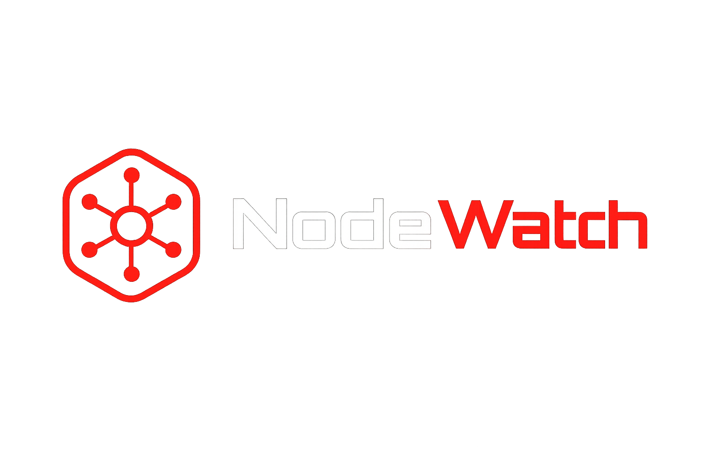

<!DOCTYPE html>
<html lang="pt-BR">
<head>
  <meta charset="UTF-8" />
  <meta name="viewport" content="width=device-width, initial-scale=1.0" />
  <title>NodeWatch — Grafos e Machine Learning</title>
  <!-- Fontes do Google: opcionais. Sem internet, o navegador usa as fontes do sistema. -->
  <link rel="preconnect" href="https://fonts.googleapis.com" />
  <link rel="preconnect" href="https://fonts.gstatic.com" crossorigin />
  <link href="https://fonts.googleapis.com/css2?family=Inter:wght@400;500;600&family=JetBrains+Mono:wght@400;500;600;700&display=swap" rel="stylesheet" />
  <!-- React e Babel servidos localmente (interface/assets/vendor, versões fixas);
       o CDN só é usado se a cópia local faltar. -->
  <script src="assets/vendor/react-18.3.1.production.min.js"></script>
  <script>window.React || document.write('<script src="https://unpkg.com/react@18.3.1/umd/react.production.min.js" crossorigin><\/script>')</script>
  <script src="assets/vendor/react-dom-18.3.1.production.min.js"></script>
  <script>window.ReactDOM || document.write('<script src="https://unpkg.com/react-dom@18.3.1/umd/react-dom.production.min.js" crossorigin><\/script>')</script>
  <script src="assets/vendor/babel-standalone-7.26.10.min.js"></script>
  <script>window.Babel || document.write('<script src="https://unpkg.com/@babel/standalone@7.26.10/babel.min.js"><\/script>')</script>
  <style>
    *, *::before, *::after { box-sizing: border-box; margin: 0; padding: 0; }
    html, body, #root { height: 100%; }
    body { background: #131820; overflow-x: hidden; }
    details > summary { list-style: none; }
    details > summary::-webkit-details-marker { display: none; }
    a:focus-visible, button:focus-visible, input:focus-visible, select:focus-visible, summary:focus-visible, [tabindex]:focus-visible {
      outline: 2px solid #5a9cf2 !important; outline-offset: 2px;
    }
    .sr-only { position:absolute; width:1px; height:1px; padding:0; margin:-1px; overflow:hidden; clip:rect(0,0,0,0); white-space:nowrap; border:0; }
  </style>
</head>
<body>
  <div id="root"></div>

  <!-- 1. DADOS — espelha dados/exemplo_transacoes.csv -->
  <script>
  window.FRAUD_DATA = (() => {
    const transactions = [
      { step:1,  type:'TRANSFER', amount:10000.00, src:'C001', dst:'C002', isFraud:0 },
      { step:1,  type:'TRANSFER', amount:10000.00, src:'C002', dst:'C003', isFraud:0 },
      { step:2,  type:'TRANSFER', amount: 9800.00, src:'C003', dst:'C001', isFraud:1 },
      { step:2,  type:'TRANSFER', amount:  500.00, src:'C001', dst:'C002', isFraud:0 },
      { step:3,  type:'PAYMENT',  amount:  200.00, src:'C004', dst:'C005', isFraud:0 },
      { step:3,  type:'PAYMENT',  amount:  150.00, src:'C004', dst:'C005', isFraud:0 },
      { step:4,  type:'TRANSFER', amount: 3000.00, src:'C006', dst:'C007', isFraud:0 },
      { step:4,  type:'TRANSFER', amount: 2950.00, src:'C007', dst:'C008', isFraud:0 },
      { step:5,  type:'TRANSFER', amount: 2900.00, src:'C008', dst:'C006', isFraud:1 },
      { step:6,  type:'CASH_OUT', amount: 1200.00, src:'C009', dst:'C010', isFraud:0 },
      { step:7,  type:'CASH_IN',  amount: 5000.00, src:'EXTERNAL', dst:'C001', isFraud:0 },
      { step:8,  type:'DEBIT',    amount:  300.00, src:'C004', dst:'C003', isFraud:0 },
      { step:9,  type:'TRANSFER', amount: 8000.00, src:'C011', dst:'C012', isFraud:0 },
      { step:10, type:'TRANSFER', amount: 7800.00, src:'C012', dst:'C013', isFraud:0 },
      { step:11, type:'TRANSFER', amount: 7600.00, src:'C013', dst:'C014', isFraud:0 },
      { step:12, type:'TRANSFER', amount: 7400.00, src:'C014', dst:'C011', isFraud:1 },
    ];
    const vertices = [...new Set(transactions.flatMap(t=>[t.src,t.dst]))].sort();
    const cycles = [
      {
        id:1, category:'CICLO', priority:'ALTO',
        path:['C001','C002','C003','C001'],
        edges:[
          {src:'C001',dst:'C002',amount:10000.00,type:'TRANSFER',step:1},
          {src:'C002',dst:'C003',amount:10000.00,type:'TRANSFER',step:1},
          {src:'C003',dst:'C001',amount: 9800.00,type:'TRANSFER',step:2},
        ],
        total:29800.00, loss:200.00, duration:2,
      },
      {
        id:2, category:'CICLO', priority:'ALTO',
        path:['C006','C007','C008','C006'],
        edges:[
          {src:'C006',dst:'C007',amount:3000.00,type:'TRANSFER',step:4},
          {src:'C007',dst:'C008',amount:2950.00,type:'TRANSFER',step:4},
          {src:'C008',dst:'C006',amount:2900.00,type:'TRANSFER',step:5},
        ],
        total:8850.00, loss:100.00, duration:2,
      },
      {
        id:3, category:'CICLO', priority:'ALTO',
        path:['C011','C012','C013','C014','C011'],
        edges:[
          {src:'C011',dst:'C012',amount:8000.00,type:'TRANSFER',step:9},
          {src:'C012',dst:'C013',amount:7800.00,type:'TRANSFER',step:10},
          {src:'C013',dst:'C014',amount:7600.00,type:'TRANSFER',step:11},
          {src:'C014',dst:'C011',amount:7400.00,type:'TRANSFER',step:12},
        ],
        total:30800.00, loss:600.00, duration:4,
      },
    ];
    /* SCCs detectados via Kosaraju */
    const sccs = [
      {id:1, vertices:['C011','C012','C013','C014'], size:4, volume:30800.00, edges:4, suspicious:true},
      {id:2, vertices:['C001','C002','C003'],        size:3, volume:30300.00, edges:4, suspicious:true},
      {id:3, vertices:['C006','C007','C008'],        size:3, volume:8850.00,  edges:3, suspicious:true},
    ];
    /* Centralidade de grau */
    const centrality = [
      {id:'C001',inDeg:2,outDeg:2,degree:4,cycleCount:1,riskScore:55,hubType:'SUSPEITO'},
      {id:'C002',inDeg:2,outDeg:1,degree:3,cycleCount:1,riskScore:55,hubType:'SUSPEITO'},
      {id:'C003',inDeg:2,outDeg:1,degree:3,cycleCount:1,riskScore:55,hubType:'SUSPEITO'},
      {id:'C006',inDeg:1,outDeg:1,degree:2,cycleCount:1,riskScore:55,hubType:'SUSPEITO'},
      {id:'C007',inDeg:1,outDeg:1,degree:2,cycleCount:1,riskScore:55,hubType:'SUSPEITO'},
      {id:'C008',inDeg:1,outDeg:1,degree:2,cycleCount:1,riskScore:55,hubType:'SUSPEITO'},
      {id:'C011',inDeg:1,outDeg:1,degree:2,cycleCount:1,riskScore:55,hubType:'SUSPEITO'},
      {id:'C012',inDeg:1,outDeg:1,degree:2,cycleCount:1,riskScore:55,hubType:'SUSPEITO'},
      {id:'C013',inDeg:1,outDeg:1,degree:2,cycleCount:1,riskScore:55,hubType:'SUSPEITO'},
      {id:'C014',inDeg:1,outDeg:1,degree:2,cycleCount:1,riskScore:55,hubType:'SUSPEITO'},
      {id:'C004',inDeg:0,outDeg:3,degree:3,cycleCount:0,riskScore:15,hubType:'NORMAL'},
      {id:'EXTERNAL',inDeg:0,outDeg:1,degree:1,cycleCount:0,riskScore:10,hubType:'NORMAL'},
      {id:'C009',inDeg:0,outDeg:1,degree:1,cycleCount:0,riskScore:30,hubType:'NORMAL'},
      {id:'C005',inDeg:2,outDeg:0,degree:2,cycleCount:0,riskScore:0,hubType:'COLETOR'},
      {id:'C010',inDeg:1,outDeg:0,degree:1,cycleCount:0,riskScore:0,hubType:'COLETOR'},
    ];
    const positions = {
      C001:{x:200,y:150}, C002:{x:330,y:90},  C003:{x:330,y:210},
      C004:{x:450,y:55},  C005:{x:555,y:120}, C006:{x:200,y:360},
      C007:{x:330,y:300}, C008:{x:330,y:420}, C009:{x:555,y:300},
      C010:{x:660,y:360}, C011:{x:570,y:80},  C012:{x:690,y:150},
      C013:{x:690,y:250}, C014:{x:570,y:320}, EXTERNAL:{x:75,y:150},
    };
    const positionsHierarchical = {
      C001:{x:90,y:80},  C002:{x:200,y:80},  C003:{x:310,y:80},  C004:{x:420,y:80},
      C005:{x:90,y:220}, C006:{x:200,y:220}, C007:{x:310,y:220}, C008:{x:420,y:220},
      C009:{x:90,y:360}, C010:{x:200,y:360}, C011:{x:310,y:360}, C012:{x:420,y:360},
      C013:{x:530,y:80}, C014:{x:530,y:220}, EXTERNAL:{x:530,y:360},
    };
    const positionsCircular = (() => {
      const out={}, cx=400, cy=250, r=210;
      vertices.forEach((v,i)=>{
        const a=(i/vertices.length)*Math.PI*2 - Math.PI/2;
        out[v]={x:cx+r*Math.cos(a), y:cy+r*Math.sin(a)};
      });
      return out;
    })();
    const accountRisk = {
      C001:55,C002:55,C003:55,C006:55,C007:55,C008:55,
      C011:55,C012:55,C013:55,C014:55,
      C004:15,C005:0,C009:30,C010:0,EXTERNAL:10,
    };
    const topAccounts = (() => {
      const vol={};
      transactions.forEach(t=>{ vol[t.src]=(vol[t.src]||0)+t.amount; });
      return Object.entries(vol)
        .map(([id,v])=>({id,volume:v,risk:accountRisk[id]||0}))
        .sort((a,b)=>b.volume-a.volume);
    })();
    const buckets = [
      {label:'< 1k',    min:0,     max:1000,    count:0},
      {label:'1k–5k',   min:1000,  max:5000,    count:0},
      {label:'5k–10k',  min:5000,  max:10000,   count:0},
      {label:'10k–25k', min:10000, max:25000,   count:0},
      {label:'> 25k',   min:25000, max:Infinity,count:0},
    ];
    transactions.forEach(t=>{
      const b=buckets.find(b=>t.amount>=b.min&&t.amount<b.max);
      if(b) b.count++;
    });
    const stepDist={};
    transactions.forEach(t=>{
      if(!stepDist[t.step]) stepDist[t.step]={total:0,fraud:0};
      stepDist[t.step].total++;
      if(t.isFraud) stepDist[t.step].fraud++;
    });
    return {
      transactions,vertices,cycles,sccs,centrality,
      positions,positionsHierarchical,positionsCircular,
      accountRisk,topAccounts,buckets,stepDist,
      stats:{
        vertexCount:vertices.length,
        edgeCount:transactions.length,
        fraudCount:transactions.filter(t=>t.isFraud).length,
        cycleCount:cycles.length,
        sccSuspiciousCount:sccs.filter(s=>s.suspicious).length,
      },
    };
  })();
  </script>

  <!-- 2. UTILITÁRIOS -->
  <script>
    // Servidor local (src/sentinel_ai.py): mesma origem quando servido por ele;
    // aberto como arquivo, procura o servidor no endereço padrão.
    window.NODEWATCH_API = window.location.protocol.startsWith('http')
      ? window.location.origin
      : 'http://127.0.0.1:5000';
    function fmtBRL(v){
      return new Intl.NumberFormat('pt-BR',{style:'currency',currency:'BRL',minimumFractionDigits:2}).format(v);
    }
    function fmtBRLshort(v){
      if(v>=1e6) return 'R$ '+(v/1e6).toFixed(1).replace('.',',')+' M';
      if(v>=1e3) return 'R$ '+(v/1e3).toFixed(1).replace('.',',')+' k';
      return fmtBRL(v);
    }
  </script>

  <!-- 3. SEÇÃO MACHINE LEARNING
       Lê previsões e avaliações já produzidas por src/ml pela API local /api/ml
       (src/api_ml.py). Nada aqui treina modelos, muda limiares ou altera artefatos.
       Rede e lavagem ficam em estados separados e nunca são combinadas. -->
  <script type="text/babel">
  const ML_API = window.NODEWATCH_API + '/api/ml';
  const TemaML = React.createContext(null);
  const useTema = () => React.useContext(TemaML);
  const DOMINIO_NOME = {rede:'Rede (estado_rede)', lavagem:'Lavagem (IBM AML HI-Small, sintético)'};

  const _nf = (a,b) => new Intl.NumberFormat('pt-BR',{minimumFractionDigits:a,maximumFractionDigits:b});
  const vazio = v => v===null || v===undefined || v==='' || (typeof v==='number' && Number.isNaN(v));
  const fmtInt  = n => vazio(n) ? '—' : _nf(0,0).format(+n);
  const fmtNum  = (n,d=3) => vazio(n) || Number.isNaN(+n) ? '—' : _nf(d,d).format(+n);
  const fmtPct  = (n,d=1) => vazio(n) ? '—' : _nf(d,d).format(n*100)+'%';
  const fmtData = iso => iso ? iso.replace('T',' ').slice(0,16) : '—';
  const fmtBytes = b => vazio(b) ? '—' : b>=1e6 ? _nf(1,1).format(b/1e6)+' MB' : _nf(0,0).format(b/1e3)+' kB';
  const fmtTsRede = s => { const n=+s; return Number.isFinite(n) ? new Date(n*1000).toISOString().replace('T',' ').slice(0,19)+' UTC' : s; };
  const simNao = v => String(v).toLowerCase()==='true' ? 'sim' : String(v).toLowerCase()==='false' ? 'não' : (v||'—');
  const caminhoFonte = id => id.split('/').map(encodeURIComponent).join('/');
  const maiuscula = s => s ? s.charAt(0).toUpperCase()+s.slice(1) : s;
  // limites de período em ml_config são exclusivos: '2022-09-11' termina em 10/09
  const diaAnterior = iso => { const d=new Date(iso+'T00:00:00Z'); d.setUTCDate(d.getUTCDate()-1); return d.toISOString().slice(0,10); };
  // formatadores de coluna recebem a linha só se declararem o 2º parâmetro (fmtNum usa o 2º como casas decimais)
  const formatar = (f, v, linha) => f.length >= 2 ? f(v, linha) : f(v);

  const FILTROS_VAZIOS = {
    rede: {inicio:'',fim:'',classes:[],alerta:'',score_min:'',score_max:'',fluxo:'',anchor:'',probe:'',busca:''},
    lavagem: {inicio:'',fim:'',alerta:'',score_min:'',score_max:'',conta_origem:'',conta_destino:'',
              banco_origem:'',banco_destino:'',valor_min:'',valor_max:'',moedas:[],formatos:[],motivo:'',busca:''},
  };
  const consulta = (filtros, extra) => {
    const p = new URLSearchParams();
    Object.entries(filtros||{}).forEach(([k,v])=>{
      if(Array.isArray(v)){ if(v.length) p.set(k, v.join(',')); }
      else if(!vazio(v)) p.set(k, String(v));
    });
    Object.entries(extra||{}).forEach(([k,v])=>{ if(!vazio(v)) p.set(k,String(v)); });
    return p.toString();
  };
  const filtrosIguais = (a,b) => JSON.stringify(a)===JSON.stringify(b);

  async function apiML(caminho, opcoes){
    let r;
    const o = {...(opcoes||{})};
    if(window.NODEWATCH_SESSAO) o.headers = {...(o.headers||{}), 'X-NodeWatch-Sessao':window.NODEWATCH_SESSAO};
    try { r = await fetch(ML_API+caminho, o); }
    catch(e){
      throw {erro:'servidor do NodeWatch indisponível',
             problemas:['a página não conseguiu falar com o servidor local ('+window.NODEWATCH_API+')'],
             acao:'Inicie o NodeWatch com `python src/sentinel_ai.py` (na raiz do projeto, com o .venv) e abra http://127.0.0.1:5000/#ml.'};
    }
    let corpo = null;
    try { corpo = await r.json(); } catch(e){}
    if(!r.ok) throw (corpo && corpo.erro) ? corpo : {erro:'erro '+r.status+' do servidor', problemas:[], acao:'Tente novamente.'};
    return corpo;
  }

  /* Carrega dados de forma assíncrona e ignora respostas antigas. */
  function useCarga(caminho){
    const [estado, setEstado] = React.useState({dados:null, erro:null, carregando:false});
    React.useEffect(()=>{
      if(!caminho){ setEstado({dados:null,erro:null,carregando:false}); return; }
      let vivo = true;
      setEstado(e=>({dados:e.dados, erro:null, carregando:true}));
      apiML(caminho).then(d=>{ if(vivo) setEstado({dados:d,erro:null,carregando:false}); })
                    .catch(e=>{ if(vivo) setEstado({dados:null,erro:e,carregando:false}); });
      return ()=>{ vivo=false; };
    },[caminho]);
    return estado;
  }

  /* ── Peças visuais ─────────────────────────────────────────────── */
  const Painel = ({titulo, extra, children, semPadding, id}) => {
    const t = useTema();
    return (
      <section id={id} style={{...t.panelS, marginBottom:16}}>
        <div style={{...t.panelHead, flexWrap:'wrap', gap:8}}>
          <h3 style={{...t.panelTitle, margin:0}}>{titulo}</h3>
          {extra && <div style={{display:'flex',gap:8,alignItems:'center',flexWrap:'wrap'}}>{extra}</div>}
        </div>
        <div style={{padding: semPadding ? 0 : '16px 20px'}}>{children}</div>
      </section>
    );
  };
  const Kpi = ({rotulo, valor, sub, tom}) => {
    const {c,mono} = useTema();
    const cor = tom==='alerta' ? c.danger : tom==='aviso' ? c.amber : c.textBold;
    return (
      <div style={{background:c.panelLow,border:`1px solid ${c.borderSoft}`,borderRadius:8,padding:'12px 14px',minWidth:0}}>
        <div style={{fontSize:10.5,letterSpacing:'0.08em',textTransform:'uppercase',color:c.muted,fontWeight:600,marginBottom:6}}>{rotulo}</div>
        <div style={{fontFamily:mono,fontSize:19,fontWeight:600,color:cor,lineHeight:1.2,wordBreak:'break-word'}}>{valor}</div>
        {sub && <div style={{fontSize:11.5,color:c.muted,marginTop:4,lineHeight:1.4,overflowWrap:'anywhere'}}>{sub}</div>}
      </div>
    );
  };
  const GradeKpi = ({children, min=170}) => (
    <div style={{display:'grid',gridTemplateColumns:`repeat(auto-fit,minmax(${min}px,1fr))`,gap:10,marginBottom:12}}>{children}</div>
  );
  const Selo = ({tom='neutro', children, title}) => {
    const {c,mono} = useTema();
    const cores = {ok:[c.success,'#13291c'], aviso:[c.amber,c.amberSoft], perigo:[c.danger,c.dangerSoft],
                   info:[c.primary,c.primarySoft], neutro:[c.muted,c.panelLow]}[tom];
    return <span title={title} style={{display:'inline-flex',alignItems:'center',padding:'2px 8px',borderRadius:10,
              fontSize:11,fontWeight:600,fontFamily:mono,color:cores[0],background:cores[1],
              border:`1px solid ${cores[0]}55`,whiteSpace:'nowrap'}}>{children}</span>;
  };
  const SeloConjunto = ({conjunto}) => {
    if(!conjunto) return null;
    const tom = {completo:'ok', amostra:'aviso', parcial:'aviso'}[conjunto.tipo] || 'neutro';
    const txt = {completo:'arquivo completo', amostra:'amostra', parcial:'resultado parcial', desconhecido:'completude desconhecida'}[conjunto.tipo] || conjunto.tipo;
    return <Selo tom={tom} title={conjunto.motivo}>{txt}</Selo>;
  };
  const Aviso = ({tom='info', titulo, children}) => {
    const {c} = useTema();
    const cor = {info:c.primary, aviso:c.amber, perigo:c.danger, ok:c.success}[tom];
    return (
      <div role={tom==='perigo' ? 'alert' : undefined}
           style={{borderLeft:`3px solid ${cor}`,background:c.panelLow,padding:'10px 14px',borderRadius:6,
                   margin:'0 0 12px',fontSize:13,color:c.text,lineHeight:1.55}}>
        {titulo && <strong style={{color:cor}}>{titulo} </strong>}{children}
      </div>
    );
  };
  const CaixaErro = ({erro}) => {
    if(!erro) return null;
    const titulo = erro.erro ? erro.erro.charAt(0).toUpperCase()+erro.erro.slice(1)+'.' : 'Erro.';
    return (
      <Aviso tom="perigo" titulo={titulo}>
        {erro.problemas && erro.problemas.length>0 &&
          <ul style={{margin:'6px 0 6px 18px'}}>{erro.problemas.map((p,i)=><li key={i}>{p}</li>)}</ul>}
        {erro.acao && <div><strong>O que fazer:</strong> {erro.acao}</div>}
      </Aviso>
    );
  };
  const Carregando = ({texto='Carregando…'}) => {
    const {c} = useTema();
    return <div role="status" aria-live="polite" style={{padding:'10px 0',color:c.muted,fontSize:13}}>{texto}</div>;
  };
  const SemDados = ({texto}) => {
    const {c} = useTema();
    return <div style={{padding:'18px 0',color:c.muted,fontSize:13,textAlign:'center'}}>{texto}</div>;
  };
  const Ajuda = ({titulo='O que significa?', children}) => {
    const {c} = useTema();
    return (
      <details style={{fontSize:12.5,color:c.muted,margin:'2px 0 10px'}}>
        <summary style={{cursor:'pointer',color:c.primary,display:'inline-block'}}>ⓘ {titulo}</summary>
        <div style={{marginTop:6,lineHeight:1.6}}>{children}</div>
      </details>
    );
  };
  const Indisponivel = ({motivo}) => {
    const {c} = useTema();
    return <span style={{color:c.muted}}>indisponível{motivo ? <span style={{color:c.faint}}> — {motivo}</span> : null}</span>;
  };

  /* tabela simples para dados de apoio (gráficos e avaliação) */
  const Tabela = ({colunas, linhas, destacar, legenda}) => {
    const {c,mono} = useTema();
    return (
      <div style={{overflowX:'auto'}}>
        <table style={{width:'100%',borderCollapse:'collapse',fontSize:12.5}}>
          {legenda && <caption style={{textAlign:'left',color:c.muted,fontSize:12,padding:'0 0 6px'}}>{legenda}</caption>}
          <thead><tr>{colunas.map(col=>(
            <th key={col.k} scope="col" style={{textAlign:col.num?'right':'left',padding:'8px 10px',borderBottom:`1px solid ${c.border}`,
                color:c.muted,fontSize:10.5,letterSpacing:'0.06em',textTransform:'uppercase',fontWeight:600,
                background:c.panelLow,whiteSpace:'nowrap'}} title={col.dica}>{col.r}</th>))}</tr></thead>
          <tbody>{linhas.map((l,i)=>(
            <tr key={i} style={{background: destacar && destacar(l) ? c.primarySoft : i%2 ? c.panelLow : 'transparent'}}>
              {colunas.map(col=>{
                const v = col.f ? formatar(col.f, l[col.k], l) : l[col.k];
                return <td key={col.k} style={{padding:'7px 10px',textAlign:col.num?'right':'left',
                          fontFamily:col.num||col.mono?mono:'inherit',borderBottom:`1px solid ${c.borderSoft}`,
                          whiteSpace:col.quebra?'normal':'nowrap'}}>{vazio(v)?'—':v}</td>;
              })}
            </tr>))}</tbody>
        </table>
      </div>
    );
  };
  const VerDados = ({titulo='Ver os números do gráfico', colunas, linhas}) => {
    const {c} = useTema();
    return (
      <details style={{marginTop:6,fontSize:12}}>
        <summary style={{cursor:'pointer',color:c.primary,display:'inline-block'}}>{titulo}</summary>
        <div style={{maxHeight:260,overflowY:'auto',marginTop:6}}><Tabela colunas={colunas} linhas={linhas}/></div>
      </details>
    );
  };

  /* barras horizontais: total e, sobreposto, quantos são alertas */
  const BarrasH = ({itens, legenda}) => {
    const {c,mono} = useTema();
    const max = Math.max(1, ...itens.map(i=>i.valor));
    return (
      <div>
        {itens.map(it=>(
          <div key={it.rotulo} style={{display:'grid',gridTemplateColumns:'minmax(70px,130px) 1fr auto',gap:10,alignItems:'center',margin:'7px 0'}}>
            <span style={{fontFamily:mono,fontSize:12,overflow:'hidden',textOverflow:'ellipsis',whiteSpace:'nowrap'}} title={it.rotulo}>{it.rotulo}</span>
            <div aria-hidden="true" style={{background:c.panelLow,borderRadius:4,height:14,position:'relative',overflow:'hidden'}}>
              <div style={{width:`${100*it.valor/max}%`,height:'100%',background:c.barra}}/>
              {!vazio(it.alertas) && <div style={{position:'absolute',left:0,top:0,width:`${100*it.alertas/max}%`,height:'100%',background:c.danger}}/>}
            </div>
            <span style={{fontFamily:mono,fontSize:12,color:c.muted,whiteSpace:'nowrap'}}>{it.texto}</span>
          </div>
        ))}
        {legenda && <div style={{fontSize:11.5,color:c.faint,marginTop:6}}>{legenda}</div>}
      </div>
    );
  };

  const GraficoTempo = ({serie}) => {
    const {c,mono} = useTema();
    const pts = (serie && serie.pontos) || [];
    if(!pts.length) return <SemDados texto="Nenhum registro no período filtrado."/>;
    const W=480, H=190, ml=44, mb=26, mt=12, mr=8;
    const max = Math.max(1, ...pts.map(p=>p.total));
    const bw = (W-ml-mr)/pts.length;
    const y = v => mt + (H-mt-mb)*(1 - v/max);
    const rot = p => serie.granularidade==='hora' ? p.inicio.slice(5,13).replace('T',' ')+'h' : p.inicio.slice(0,10);
    const marcas = [...new Set([0, Math.floor((pts.length-1)/2), pts.length-1])];
    const totalAlertas = pts.reduce((s,p)=>s+p.alertas,0);
    return (
      <figure style={{margin:0}}>
        <svg viewBox={`0 0 ${W} ${H}`} role="img" style={{width:'100%',height:'auto',display:'block'}}
             aria-label={`Registros e alertas por ${serie.granularidade}: ${pts.length} intervalos, até ${max} registros por intervalo, ${totalAlertas} alertas no total.`}>
          <line x1={ml} x2={W-mr} y1={H-mb} y2={H-mb} stroke={c.border}/>
          <text x={ml-6} y={mt+8} textAnchor="end" fill={c.muted} fontSize="12" fontFamily={mono}>{fmtInt(max)}</text>
          <text x={ml-6} y={H-mb} textAnchor="end" fill={c.muted} fontSize="12" fontFamily={mono}>0</text>
          {pts.map((p,i)=>(
            <g key={i}>
              <rect x={ml+i*bw+0.5} y={y(p.total)} width={Math.max(1,bw-1)} height={H-mb-y(p.total)} fill={c.barra}/>
              <rect x={ml+i*bw+0.5} y={y(p.alertas)} width={Math.max(1,bw-1)} height={H-mb-y(p.alertas)} fill={c.danger}/>
              <title>{`${rot(p)}: ${fmtInt(p.total)} registros, ${fmtInt(p.alertas)} alertas`}</title>
            </g>
          ))}
          {marcas.map(i=><text key={i} x={Math.min(W-mr-38,Math.max(ml+38,ml+i*bw+bw/2))} y={H-6} textAnchor="middle" fill={c.muted} fontSize="12" fontFamily={mono}>{rot(pts[i])}</text>)}
        </svg>
        <figcaption style={{fontSize:11.5,color:c.faint}}>Cinza: registros · vermelho: alertas · intervalos de 1 {serie.granularidade} (UTC).</figcaption>
        <VerDados colunas={[{k:'inicio',r:'Início',f:fmtData,mono:true},{k:'total',r:'Registros',num:true,f:fmtInt},{k:'alertas',r:'Alertas',num:true,f:fmtInt}]} linhas={pts}/>
      </figure>
    );
  };

  const Histograma = ({h, limiar, log}) => {
    const {c,mono} = useTema();
    if(!h || !h.contagens) return null;
    const W=480, H=190, ml=44, mb=26, mt=12, mr=8;
    const n = h.contagens.length;
    const max = Math.max(1, ...h.contagens);
    const esc = v => log ? Math.log10(v+1)/Math.log10(max+1) : v/max;
    const y = v => mt + (H-mt-mb)*(1-esc(v));
    const bw = (W-ml-mr)/n;
    const xl = vazio(limiar) ? null : ml + limiar*(W-ml-mr);
    return (
      <figure style={{margin:0}}>
        <svg viewBox={`0 0 ${W} ${H}`} role="img" style={{width:'100%',height:'auto',display:'block'}}
             aria-label={`Distribuição do score em ${n} faixas de 0 a 1${log?' (escala logarítmica)':''}; limiar oficial ${fmtNum(limiar,4)}.`}>
          <line x1={ml} x2={W-mr} y1={H-mb} y2={H-mb} stroke={c.border}/>
          <text x={ml-6} y={mt+8} textAnchor="end" fill={c.muted} fontSize="12" fontFamily={mono}>{fmtInt(max)}</text>
          {h.contagens.map((v,i)=>(
            <g key={i}>
              <rect x={ml+i*bw+1} y={y(v)} width={Math.max(1,bw-2)} height={H-mb-y(v)} fill={c.barra}/>
              <rect x={ml+i*bw+1} y={y(h.alertas[i])} width={Math.max(1,bw-2)} height={H-mb-y(h.alertas[i])} fill={c.danger}/>
              <title>{`${fmtNum(h.bordas[i],2)}–${fmtNum(h.bordas[i+1],2)}: ${fmtInt(v)} registros, ${fmtInt(h.alertas[i])} alertas`}</title>
            </g>
          ))}
          {xl!==null && <g><line x1={xl} x2={xl} y1={mt} y2={H-mb} stroke={c.amber} strokeDasharray="4 3" strokeWidth="1.5"/>
            <text x={xl+4>W-150 ? xl-4 : xl+4} y={mt+10} textAnchor={xl+4>W-150?"end":"start"} fill={c.amber} fontSize="12" fontFamily={mono}>limiar oficial {fmtNum(limiar,4)}</text></g>}
          {[0,0.5,1].map(v=><text key={v} x={ml+v*(W-ml-mr)} y={H-6} textAnchor={v===0?'start':v===1?'end':'middle'} fill={c.muted} fontSize="12" fontFamily={mono}>{fmtNum(v,1)}</text>)}
        </svg>
        <figcaption style={{fontSize:11.5,color:c.faint}}>Cinza: registros · vermelho: alertas{log?' · altura em escala logarítmica':''}.</figcaption>
        <VerDados colunas={[{k:'faixa',r:'Faixa de score',mono:true},{k:'n',r:'Registros',num:true,f:fmtInt},{k:'a',r:'Alertas',num:true,f:fmtInt}]}
                  linhas={h.contagens.map((v,i)=>({faixa:`${fmtNum(h.bordas[i],2)} – ${fmtNum(h.bordas[i+1],2)}`, n:v, a:h.alertas[i]}))}/>
      </figure>
    );
  };

  const MatrizConfusao = ({classes, matriz, titulo}) => {
    const {c,mono} = useTema();
    const max = Math.max(1, ...matriz.flat());
    return (
      <div style={{overflowX:'auto'}}>
        <table style={{borderCollapse:'collapse',fontSize:12.5,fontFamily:mono}}>
          <caption style={{textAlign:'left',color:c.muted,fontSize:12,padding:'0 0 6px',fontFamily:'inherit'}}>{titulo}</caption>
          <thead><tr><th scope="col" style={{padding:'6px 10px',color:c.muted,fontSize:11,textAlign:'left'}}>real \ previsto</th>
            {classes.map(k=><th key={k} scope="col" style={{padding:'6px 10px',color:c.muted,fontSize:11,textAlign:'right'}}>{k}</th>)}</tr></thead>
          <tbody>{matriz.map((linha,i)=>(
            <tr key={i}><th scope="row" style={{padding:'6px 10px',color:c.muted,fontSize:11,textAlign:'left'}}>{classes[i]}</th>
              {linha.map((v,j)=><td key={j} style={{padding:'6px 12px',textAlign:'right',border:`1px solid ${c.borderSoft}`,
                  background: i===j ? `rgba(76,185,107,${0.12+0.5*v/max})` : `rgba(239,85,82,${0.05+0.45*v/max})`}}>{fmtInt(v)}</td>)}</tr>))}
          </tbody>
        </table>
      </div>
    );
  };

  /* ── Campos de formulário ──────────────────────────────────────── */
  const estiloCampo = c => ({background:c.panelLow,color:c.text,border:`1px solid ${c.border}`,borderRadius:6,
                             padding:'7px 9px',fontSize:13,fontFamily:'inherit',width:'100%',minWidth:0});
  const estiloBotao = (c, tipo) => ({padding:'7px 14px',borderRadius:6,fontSize:12.5,cursor:'pointer',fontFamily:'inherit',
      border:`1px solid ${tipo==='primario' ? c.primary+'99' : tipo==='perigo' ? c.danger+'88' : c.border}`,
      background: tipo==='primario' ? c.primarySoft : 'transparent',
      color: tipo==='primario' ? c.primary : tipo==='perigo' ? c.danger : c.text});
  const Campo = ({rotulo, children, dica, largura}) => {
    const {c} = useTema();
    const id = React.useId();
    return (
      <div style={{display:'flex',flexDirection:'column',gap:4,minWidth:0,gridColumn:largura?`span ${largura}`:undefined}}>
        <label htmlFor={id} style={{fontSize:11.5,color:c.muted,fontWeight:500}}>{rotulo}</label>
        {React.cloneElement(children, {id, style:{...estiloCampo(c), ...(children.props.style||{})}})}
        {dica && <span style={{fontSize:11,color:c.faint}}>{dica}</span>}
      </div>
    );
  };
  const Marcadores = ({rotulo, opcoes, valor, onChange}) => {
    const {c,mono} = useTema();
    return (
      <fieldset style={{border:'none',padding:0,margin:0,minWidth:0}}>
        <legend style={{fontSize:11.5,color:c.muted,fontWeight:500,marginBottom:4}}>{rotulo}</legend>
        <div style={{display:'flex',flexWrap:'wrap',gap:6,maxHeight:96,overflowY:'auto'}}>
          {opcoes.map(o=>{
            const marcado = valor.includes(o);
            return (
              <label key={o} style={{display:'inline-flex',alignItems:'center',gap:5,fontSize:12,fontFamily:mono,cursor:'pointer',
                       padding:'3px 8px',borderRadius:12,border:`1px solid ${marcado?c.primary+'99':c.borderSoft}`,
                       background:marcado?c.primarySoft:'transparent',color:marcado?c.primary:c.text}}>
                <input type="checkbox" checked={marcado} style={{accentColor:c.primary}}
                       onChange={()=>onChange(marcado ? valor.filter(x=>x!==o) : [...valor, o])}/>{o}
              </label>
            );
          })}
          {!opcoes.length && <span style={{fontSize:12,color:c.faint}}>sem opções no arquivo</span>}
        </div>
      </fieldset>
    );
  };

  /* ── Fonte de dados: seleção, importação e identificação ──────── */
  const CartaoFonte = ({d, compacto}) => {
    const {c,mono} = useTema();
    if(!d) return null;
    const cj = d.conjunto || {};
    const amostra = cj.tipo==='amostra';
    const papeis = {observado:'Dados observados', previsao:'Previsões', rotulo:'Rótulos de referência', controle:'Controle',
                    id:'Identificação', tempo:'Tempo', desconhecido:'Fora do contrato'};
    const porPapel = {};
    (d.campos||[]).forEach(f=>{ (porPapel[f.papel]=porPapel[f.papel]||[]).push(f); });
    return (
      <div>
        <div style={{display:'flex',flexWrap:'wrap',gap:8,alignItems:'center',marginBottom:10}}>
          <span style={{fontFamily:mono,fontSize:13.5,color:c.textBold,fontWeight:600,wordBreak:'break-all'}}>{d.nome_arquivo}</span>
          <SeloConjunto conjunto={cj}/>
          <Selo tom={d.origem==='importado'?'info':'neutro'}>{d.origem==='importado'?'importado nesta sessão':'arquivo da aplicação'}</Selo>
          <Selo tom={d.rotulos && d.rotulos.disponivel ? 'ok' : 'neutro'} title={d.rotulos && d.rotulos.motivo}>
            {d.rotulos && d.rotulos.disponivel ? 'com rótulos de referência' : 'sem rótulos de referência'}</Selo>
        </div>
        <GradeKpi min={150}>
          <Kpi rotulo="Registros no arquivo" valor={fmtInt(d.registros)}
               sub={amostra && cj.linhas_conjunto ? `amostra de ${fmtInt(cj.linhas_conjunto)} previsões do conjunto` : null}/>
          <Kpi rotulo="Período" valor={d.periodo ? fmtData(d.periodo.inicio) : '—'}
               sub={d.periodo ? `até ${fmtData(d.periodo.fim)} · fuso ${d.periodo.fuso}` : null}/>
          <Kpi rotulo="Modelo" valor={d.modelo.versoes.length ? d.modelo.versoes.join(', ') : <Indisponivel/>}
               sub={d.modelo.versoes.length ? (d.modelo.limiar!==null ? `limiar oficial ${fmtNum(d.modelo.limiar,4)}` : null) : d.modelo.motivo_ausencia}/>
          <Kpi rotulo="Pasta" valor={d.pasta || 'memória do servidor'} sub={`contrato ${d.contrato}`}/>
        </GradeKpi>
        {amostra && <Aviso tom="aviso" titulo="Amostra.">{maiuscula(cj.motivo)}. Os indicadores desta tela valem só para as
          {' '}{fmtInt(d.registros)} linhas do arquivo{cj.linhas_conjunto ? `, não para as ${fmtInt(cj.linhas_conjunto)} do conjunto` : ''}.</Aviso>}
        {cj.tipo==='desconhecido' && <Aviso tom="info" titulo="Completude desconhecida.">{maiuscula(cj.motivo)}.</Aviso>}
        {(d.avisos||[]).map((a,i)=><Aviso key={i} tom="aviso" titulo="Atenção.">{maiuscula(a)}.</Aviso>)}
        {!compacto && (
          <details style={{fontSize:12.5}}>
            <summary style={{cursor:'pointer',color:c.primary,display:'inline-block'}}>Campos disponíveis ({(d.campos||[]).length}) e origem do arquivo</summary>
            <div style={{display:'grid',gridTemplateColumns:'repeat(auto-fit,minmax(min(100%,260px),1fr))',gap:12,marginTop:10}}>
              {Object.entries(porPapel).map(([papel,lista])=>(
                <div key={papel}>
                  <div style={{fontSize:11,color:c.muted,textTransform:'uppercase',letterSpacing:'0.06em',fontWeight:600,marginBottom:4}}>{papeis[papel]||papel}</div>
                  {lista.map(f=><div key={f.nome} style={{margin:'3px 0'}}><code style={{fontFamily:mono,color:c.text}}>{f.nome}</code>
                    <span style={{color:c.faint}}> — {f.descricao}</span></div>)}
                </div>
              ))}
            </div>
            {d.relatorio && (
              <div style={{marginTop:10,color:c.muted}}>
                Relatório da execução: {fmtInt(d.relatorio.linhas_previstas)} previsões
                {d.relatorio.entradas && d.relatorio.entradas.length>0 && <> a partir de {d.relatorio.entradas.map(e=>e.arquivo).join(', ')}</>}
                {d.relatorio.historico && <> · histórico: {d.relatorio.historico}</>}
                {d.relatorio.deriva_psi_acima_0_25 && <> · colunas com deriva (PSI ≥ 0,25): {d.relatorio.deriva_psi_acima_0_25.length ? d.relatorio.deriva_psi_acima_0_25.join(', ') : 'nenhuma'}</>}
                {d.relatorio.aviso && <div style={{marginTop:4}}>{d.relatorio.aviso}</div>}
              </div>
            )}
          </details>
        )}
      </div>
    );
  };

  const SeletorFonte = ({dominio, fontes, fonteId, onSelecionar, onImportar, onRemover, limiteBytes}) => {
    const {c} = useTema();
    const [arquivo, setArquivo] = React.useState(null);
    const [amostra, setAmostra] = React.useState(false);
    const [enviando, setEnviando] = React.useState(false);
    const [erro, setErro] = React.useState(null);
    const idArquivo = React.useId();
    const idAmostra = React.useId();
    const doDominio = (fontes||[]).filter(f=>f.dominio===dominio);
    const atual = doDominio.find(f=>f.id===fonteId);
    const enviar = async e => {
      e.preventDefault();
      if(!arquivo) return;
      setEnviando(true); setErro(null);
      try { await onImportar(arquivo, amostra, dominio); setArquivo(null); setAmostra(false); e.target.reset(); }
      catch(err){ setErro(err); }
      finally { setEnviando(false); }
    };
    return (
      <div>
        <div style={{display:'grid',gridTemplateColumns:'repeat(auto-fit,minmax(min(100%,280px),1fr))',gap:14,alignItems:'end'}}>
          <Campo rotulo="Arquivo de previsões">
            <select value={fonteId||''} onChange={e=>onSelecionar(e.target.value)}>
              {!doDominio.length && <option value="">nenhum arquivo disponível</option>}
              {doDominio.map(f=>(
                <option key={f.id} value={f.id}>
                  {f.nome_arquivo} · {f.pasta || 'importado'} · {fmtInt(f.registros)} linhas{f.conjunto && f.conjunto.tipo==='amostra' ? ' · amostra' : ''}
                </option>
              ))}
            </select>
          </Campo>
          <form onSubmit={enviar} style={{display:'flex',gap:8,alignItems:'end',flexWrap:'wrap'}}>
            <div style={{display:'flex',flexDirection:'column',gap:4,flex:'1 1 200px',minWidth:0}}>
              <label htmlFor={idArquivo} style={{fontSize:11.5,color:c.muted,fontWeight:500}}>Importar CSV de previsões (até {fmtBytes(limiteBytes)})</label>
              <input id={idArquivo} type="file" accept=".csv,text/csv" onChange={e=>setArquivo(e.target.files[0]||null)}
                     style={{...estiloCampo(c),padding:'5px 6px'}}/>
            </div>
            <label htmlFor={idAmostra} style={{display:'inline-flex',gap:6,alignItems:'center',fontSize:12,color:c.muted,paddingBottom:8}}>
              <input id={idAmostra} type="checkbox" checked={amostra} onChange={e=>setAmostra(e.target.checked)} style={{accentColor:c.primary}}/>
              é amostra de um conjunto maior
            </label>
            <button type="submit" disabled={!arquivo||enviando} style={{...estiloBotao(c,'primario'),opacity:!arquivo||enviando?0.5:1}}>
              {enviando ? 'Validando…' : 'Importar'}</button>
            {atual && atual.origem==='importado' &&
              <button type="button" onClick={()=>onRemover(atual.id)} style={estiloBotao(c,'perigo')}>Descartar importado</button>}
          </form>
        </div>
        <div style={{fontSize:11.5,color:c.faint,marginTop:6}}>
          A lista mostra só as pastas previstas pela aplicação. O arquivo importado é validado e processado no servidor local,
          fica só na memória (até 4 arquivos) e não dispara treino.
        </div>
        <CaixaErro erro={erro}/>
      </div>
    );
  };

  /* ── Filtros ───────────────────────────────────────────────────── */
  const FormFiltros = ({dominio, rascunho, setRascunho, aplicados, onAplicar, onLimpar, opcoes}) => {
    const {c} = useTema();
    const set = (k,v) => setRascunho(r=>({...r,[k]:v}));
    const pendente = !filtrosIguais(rascunho, aplicados);
    const ativos = Object.entries(aplicados).filter(([k,v])=>Array.isArray(v)?v.length:!vazio(v)).length;
    const valorCampo = k => <input value={rascunho[k]} onChange={e=>set(k,e.target.value)}/>;
    return (
      <form onSubmit={e=>{e.preventDefault(); onAplicar();}}>
        <div style={{display:'grid',gridTemplateColumns:'repeat(auto-fit,minmax(170px,1fr))',gap:12}}>
          <Campo rotulo="De (data/hora)"><input type="datetime-local" value={rascunho.inicio} onChange={e=>set('inicio',e.target.value)}/></Campo>
          <Campo rotulo="Até (inclusive)"><input type="datetime-local" value={rascunho.fim} onChange={e=>set('fim',e.target.value)}/></Campo>
          <Campo rotulo={dominio==='rede'?'Alerta de rede':'Alerta de lavagem'}>
            <select value={rascunho.alerta} onChange={e=>set('alerta',e.target.value)}>
              <option value="">todos</option><option value="sim">só com alerta</option><option value="nao">só sem alerta</option>
            </select>
          </Campo>
          <Campo rotulo="Score mínimo"><input type="number" step="any" min="0" max="1" value={rascunho.score_min} onChange={e=>set('score_min',e.target.value)}/></Campo>
          <Campo rotulo="Score máximo"><input type="number" step="any" min="0" max="1" value={rascunho.score_max} onChange={e=>set('score_max',e.target.value)}/></Campo>
          {dominio==='rede' ? <>
            <Campo rotulo="Fluxo (contém)" dica="ex.: 7341_4169">{valorCampo('fluxo')}</Campo>
            <Campo rotulo="Âncora (anchor_id)">{valorCampo('anchor')}</Campo>
            <Campo rotulo="Sonda (probe_id)">{valorCampo('probe')}</Campo>
          </> : <>
            <Campo rotulo="Conta de origem (contém)">{valorCampo('conta_origem')}</Campo>
            <Campo rotulo="Conta de destino (contém)">{valorCampo('conta_destino')}</Campo>
            <Campo rotulo="Banco de origem" dica="prefixo da conta">{valorCampo('banco_origem')}</Campo>
            <Campo rotulo="Banco de destino" dica="prefixo da conta">{valorCampo('banco_destino')}</Campo>
            <Campo rotulo="Valor mínimo" dica="na moeda de cada transação"><input type="number" step="any" min="0" value={rascunho.valor_min} onChange={e=>set('valor_min',e.target.value)}/></Campo>
            <Campo rotulo="Valor máximo" dica="na moeda de cada transação"><input type="number" step="any" min="0" value={rascunho.valor_max} onChange={e=>set('valor_max',e.target.value)}/></Campo>
            <Campo rotulo="Motivo (contém)" dica="ex.: primeira transação">{valorCampo('motivo')}</Campo>
          </>}
          <Campo rotulo="Busca na tabela" dica={dominio==='rede'?'fluxo, âncora, sonda ou linha de origem':'id, contas ou linha de origem'}>{valorCampo('busca')}</Campo>
        </div>
        <div style={{display:'grid',gridTemplateColumns:'repeat(auto-fit,minmax(min(100%,260px),1fr))',gap:12,marginTop:12}}>
          {dominio==='rede'
            ? <Marcadores rotulo="Classe prevista" opcoes={['OK','RISCO','FALHA']} valor={rascunho.classes} onChange={v=>set('classes',v)}/>
            : <>
                <Marcadores rotulo="Moeda de pagamento" opcoes={opcoes.moedas} valor={rascunho.moedas} onChange={v=>set('moedas',v)}/>
                <Marcadores rotulo="Formato de pagamento" opcoes={opcoes.formatos} valor={rascunho.formatos} onChange={v=>set('formatos',v)}/>
              </>}
        </div>
        <div style={{display:'flex',gap:10,alignItems:'center',marginTop:14,flexWrap:'wrap'}}>
          <button type="submit" style={estiloBotao(c,'primario')}>Aplicar filtros</button>
          <button type="button" onClick={onLimpar} style={estiloBotao(c)}>Limpar todos os filtros</button>
          <span style={{fontSize:12,color:pendente?c.amber:c.muted}} aria-live="polite">
            {pendente ? 'Há alterações não aplicadas.' : ativos ? `${ativos} filtro(s) ativo(s).` : 'Sem filtros: todos os registros do arquivo.'}
          </span>
        </div>
        {dominio==='lavagem' && (!vazio(rascunho.valor_min)||!vazio(rascunho.valor_max)) && rascunho.moedas.length!==1 &&
          <Aviso tom="aviso" titulo="Valores em moedas diferentes.">O filtro de valor compara números na moeda de cada transação, sem conversão. Selecione uma única moeda para comparar valores equivalentes.</Aviso>}
      </form>
    );
  };

  /* ── Tabela paginada ───────────────────────────────────────────── */
  const COLUNAS = {
    rede: [
      {k:'_linha', r:'#', num:true, dica:'posição da linha no arquivo de previsões (0 = primeira)'},
      {k:'id_fluxo', r:'Fluxo', mono:true},
      {k:'timestamp_previsao', r:'Medição (UTC)', mono:true, f:fmtTsRede},
      {k:'classe_prevista', r:'Previsto', mono:true, dica:'estado previsto para a próxima medição'},
      {k:'prob_OK', r:'P(OK)', num:true, f:v=>fmtNum(v,3)},
      {k:'prob_RISCO', r:'P(RISCO)', num:true, f:v=>fmtNum(v,3)},
      {k:'prob_FALHA', r:'P(FALHA)', num:true, f:v=>fmtNum(v,3)},
      {k:'score_alerta_rede', r:'Score', num:true, f:v=>fmtNum(v,3), dica:'P(RISCO) + P(FALHA)'},
      {k:'alerta_rede', r:'Alerta', f:simNao},
    ],
    lavagem: [
      {k:'_linha', r:'#', num:true, dica:'posição da linha no arquivo de previsões (0 = primeira)'},
      {k:'id_transacao', r:'Transação', mono:true},
      {k:'timestamp_transacao', r:'Data/hora', mono:true, f:v=>v.slice(0,16)},
      {k:'conta_origem', r:'Origem', mono:true},
      {k:'conta_destino', r:'Destino', mono:true},
      {k:'valor_pago', r:'Valor pago', num:true, f:(v,l)=>`${fmtNum(v,2)} ${l.moeda_pagamento}`},
      {k:'formato', r:'Formato', mono:true},
      {k:'score_lavagem', r:'Score', num:true, f:v=>fmtNum(v,4)},
      {k:'alerta_lavagem', r:'Alerta', f:simNao},
    ],
  };

  const TabelaRegistros = ({dominio, dados, carregando, ordenar, direcao, onOrdenar, onPagina, tamanho, onTamanho, selecionado, onSelecionar, totalArquivo}) => {
    const {c,mono} = useTema();
    const colunas = COLUNAS[dominio].filter(col=>col.k==='_linha' || !dados || dados.colunas.includes(col.k));
    if(!dados) return carregando ? <Carregando/> : null;
    const ini = dados.total ? (dados.pagina-1)*dados.tamanho+1 : 0;
    const fim = Math.min(dados.total, dados.pagina*dados.tamanho);
    return (
      <div>
        <div style={{display:'flex',flexWrap:'wrap',gap:10,alignItems:'center',justifyContent:'space-between',padding:'10px 16px'}}>
          <span style={{fontSize:12.5,color:c.muted}} aria-live="polite">
            {dados.total ? <>Linhas {fmtInt(ini)}–{fmtInt(fim)} de <strong style={{color:c.text}}>{fmtInt(dados.total)}</strong> filtradas
              (arquivo: {fmtInt(totalArquivo)}). A tabela mostra uma página; contagens e gráficos usam todas as filtradas.</> : null}
          </span>
          <span style={{display:'inline-flex',gap:6,alignItems:'center'}}>
            <label style={{fontSize:12,color:c.muted}}>Por página{' '}
              <select value={tamanho} onChange={e=>onTamanho(+e.target.value)} style={{...estiloCampo(c),width:'auto',padding:'4px 6px'}}>
                {[25,50,100,200].map(n=><option key={n} value={n}>{n}</option>)}</select></label>
          </span>
        </div>
        {!dados.total ? <SemDados texto="Nenhum registro atende aos filtros. Ajuste ou limpe os filtros."/> : (
        <div style={{overflowX:'auto',opacity:carregando?0.6:1}}>
          <table style={{width:'100%',borderCollapse:'collapse',fontSize:12.5}}>
            <caption className="sr-only">Registros filtrados de {DOMINIO_NOME[dominio]}; use os botões do cabeçalho para ordenar e “Detalhes” para abrir um registro.</caption>
            <thead><tr>
              {colunas.map(col=>{
                const ativo = ordenar===col.k;
                return (
                  <th key={col.k} scope="col" aria-sort={ativo ? (direcao==='asc'?'ascending':'descending') : 'none'}
                      style={{textAlign:col.num?'right':'left',padding:'0',borderBottom:`1px solid ${c.border}`,background:c.panelLow,whiteSpace:'nowrap'}}>
                    <button type="button" onClick={()=>onOrdenar(col.k)} title={col.dica ? col.dica+' · clique para ordenar' : 'clique para ordenar'}
                            style={{all:'unset',cursor:'pointer',display:'block',padding:'9px 10px',fontSize:10.5,letterSpacing:'0.06em',
                                    textTransform:'uppercase',fontWeight:600,color:ativo?c.primary:c.muted,textAlign:col.num?'right':'left'}}>
                      {col.r}{ativo ? (direcao==='asc'?' ▲':' ▼') : ''}
                    </button>
                  </th>);
              })}
              <th scope="col" style={{background:c.panelLow,borderBottom:`1px solid ${c.border}`,padding:'9px 10px',fontSize:10.5,color:c.muted,textTransform:'uppercase',letterSpacing:'0.06em'}}>Detalhes</th>
            </tr></thead>
            <tbody>
              {dados.linhas.map((l,i)=>{
                const sel = selecionado===l._linha;
                const alerta = String(l[dominio==='rede'?'alerta_rede':'alerta_lavagem']).toLowerCase()==='true';
                return (
                  <tr key={l._linha} style={{background: sel ? c.primarySoft : i%2 ? c.panelLow : 'transparent', cursor:'pointer'}}
                      onClick={()=>onSelecionar(l._linha)}>
                    {colunas.map(col=>{
                      const bruto = col.k==='_linha' ? l._linha : l[col.k];
                      const v = col.f ? formatar(col.f, bruto, l) : bruto;
                      const destaque = (col.k==='alerta_rede'||col.k==='alerta_lavagem') && alerta;
                      return <td key={col.k} title={String(bruto)} style={{padding:'7px 10px',textAlign:col.num?'right':'left',
                                fontFamily:col.num||col.mono?mono:'inherit',borderBottom:`1px solid ${c.borderSoft}`,whiteSpace:'nowrap',
                                color: destaque ? c.danger : col.k==='classe_prevista' && bruto!=='OK' ? c.amber : c.text,
                                fontWeight: destaque ? 600 : 400}}>{vazio(v)?'—':v}</td>;
                    })}
                    <td style={{padding:'4px 10px',borderBottom:`1px solid ${c.borderSoft}`}}>
                      <button type="button" aria-label={`Ver detalhes do registro ${l._linha}`} aria-pressed={sel}
                              onClick={e=>{e.stopPropagation(); onSelecionar(l._linha);}}
                              style={{...estiloBotao(c, sel?'primario':undefined),padding:'3px 10px',fontSize:12}}>Detalhes</button>
                    </td>
                  </tr>);
              })}
            </tbody>
          </table>
        </div>)}
        {dados.total>0 && (
          <nav aria-label="Paginação" style={{display:'flex',gap:6,alignItems:'center',justifyContent:'flex-end',padding:'10px 16px',flexWrap:'wrap'}}>
            {[['«',1,'primeira página'],['‹',dados.pagina-1,'página anterior'],['›',dados.pagina+1,'próxima página'],['»',dados.paginas,'última página']].map(([s,p,nome],i)=>(
              <React.Fragment key={nome}>
                {i===2 && <span style={{fontSize:12.5,color:c.muted,fontFamily:mono,padding:'0 6px'}}>página {fmtInt(dados.pagina)} de {fmtInt(dados.paginas)}</span>}
                <button type="button" aria-label={nome} disabled={p<1||p>dados.paginas||p===dados.pagina} onClick={()=>onPagina(p)}
                        style={{...estiloBotao(c),padding:'4px 10px',opacity:(p<1||p>dados.paginas||p===dados.pagina)?0.4:1}}>{s}</button>
              </React.Fragment>
            ))}
          </nav>
        )}
      </div>
    );
  };

  /* ── Detalhes de um registro ───────────────────────────────────── */
  const ListaCampos = ({itens}) => {
    const {c,mono} = useTema();
    return (
      <dl style={{display:'grid',gridTemplateColumns:'minmax(120px,max-content) 1fr',gap:'6px 14px',margin:0,fontSize:12.5}}>
        {itens.map(it=>(
          <React.Fragment key={it.nome}>
            <dt style={{fontFamily:mono,color:c.muted,wordBreak:'break-all'}} title={it.descricao}>{it.rotulo||it.nome}</dt>
            <dd style={{margin:0,minWidth:0}}>
              <span style={{fontFamily:mono,color:it.cor||c.text,wordBreak:'break-word'}}>{vazio(it.valor) ? '—' : it.valor}</span>
              {it.descricao && <div style={{fontSize:11.5,color:c.faint,lineHeight:1.4}}>{it.descricao}</div>}
            </dd>
          </React.Fragment>
        ))}
      </dl>
    );
  };
  const Bloco = ({titulo, sub, children, tom}) => {
    const {c} = useTema();
    return (
      <div style={{background:c.panelLow,border:`1px solid ${tom==='alerta'?c.danger+'66':c.borderSoft}`,borderRadius:8,padding:'12px 14px',minWidth:0}}>
        <h4 style={{fontSize:11,letterSpacing:'0.08em',textTransform:'uppercase',color:tom==='alerta'?c.danger:c.muted,fontWeight:600,margin:'0 0 10px'}}>{titulo}</h4>
        {sub && <div style={{fontSize:11.5,color:c.faint,margin:'-6px 0 10px',wordBreak:'break-all'}}>{sub}</div>}
        {children}
      </div>
    );
  };
  const grupoRede = nome => {
    if(/^(id_fluxo|anchor_id|probe_id|timestamp)$/.test(nome)) return 'Identificação da medição';
    if(nome==='classe_atual') return 'Estado atual';
    if(/perda|rtt_ausente/.test(nome)) return 'Perda de pacotes';
    if(/jitter/.test(nome)) return 'Jitter';
    if(/rtt/.test(nome)) return 'Latência (RTT)';
    if(/ttl/.test(nome)) return 'TTL (rota)';
    if(/^(alvo|split)$/.test(nome)) return 'Rótulo e controle';
    return 'Outros';
  };
  const valorDe = (grupos, nome) => {
    for(const lista of Object.values(grupos||{})){ const f = lista.find(x=>x.nome===nome); if(f) return f; }
    return null;
  };

  const DetalheRede = ({d}) => {
    const {c} = useTema();
    const g = d.grupos;
    const v = n => { const f = valorDe(g,n); return f ? f.valor : null; };
    const ent = d.entrada;
    const atual = ent.disponivel ? (ent.atributos.find(a=>a.nome==='classe_atual')||{}).valor : null;
    const alerta = simNao(v('alerta_rede'))==='sim';
    const grupos = {};
    if(ent.disponivel) ent.atributos.forEach(a=>{ const k=grupoRede(a.nome); (grupos[k]=grupos[k]||[]).push(a); });
    const ordem = ['Perda de pacotes','Latência (RTT)','Jitter','TTL (rota)','Identificação da medição','Rótulo e controle','Outros'];
    return (
      <div>
        <Ajuda titulo="Estado atual, estado previsto e horizonte">
          <b>Estado atual</b> é a classe da medição de agora (observada, calculada a partir de perda, RTT e jitter).
          <b> Estado previsto</b> é a classe que o modelo espera para a <b>próxima medição do mesmo fluxo</b> — esse é o horizonte
          (cerca de 240 s depois, em mediana). O <b>alerta</b> não é a classe prevista: ele acende quando P(RISCO)+P(FALHA)
          atinge o limiar oficial, então pode haver alerta com classe prevista OK. Nada disso indica fraude.
        </Ajuda>
        <div style={{display:'grid',gridTemplateColumns:'repeat(auto-fit,minmax(min(100%,250px),1fr))',gap:12,marginBottom:12}}>
          <Bloco titulo="Estado atual (observado)">
            {ent.disponivel ? <ListaCampos itens={[{nome:'classe_atual',valor:atual||'—',descricao:'estado da medição usada na previsão'},
                {nome:'timestamp',valor:fmtTsRede(v('timestamp_previsao'))}]}/> : <Indisponivel motivo={ent.motivo}/>}
          </Bloco>
          <Bloco titulo="Previsão — próxima medição" tom={alerta?'alerta':undefined}>
            <ListaCampos itens={[
              {nome:'classe_prevista',valor:v('classe_prevista'),cor:v('classe_prevista')!=='OK'?c.amber:undefined},
              {nome:'P(OK) · P(RISCO) · P(FALHA)',valor:`${fmtNum(v('prob_OK'))} · ${fmtNum(v('prob_RISCO'))} · ${fmtNum(v('prob_FALHA'))}`},
              {nome:'score_alerta_rede',valor:fmtNum(v('score_alerta_rede'),4),descricao:'P(RISCO)+P(FALHA)'},
              {nome:'limiar_alerta',valor:fmtNum(v('limiar_alerta'),4),descricao:'limiar oficial (validação)'},
              {nome:'alerta_rede',valor:simNao(v('alerta_rede')),cor:alerta?c.danger:undefined},
              {nome:'horizonte',valor:v('horizonte')||'próxima medição'},
              {nome:'versao_modelo',valor:v('versao_modelo')},
            ]}/>
          </Bloco>
          <Bloco titulo="Rótulo de referência">
            {v('alvo') ? <ListaCampos itens={[{nome:'alvo',valor:v('alvo'),descricao:'estado real da próxima medição (no arquivo)'}]}/>
                       : <Indisponivel motivo="o arquivo de previsões não traz a coluna alvo"/>}
          </Bloco>
        </div>
        <Bloco titulo="Atributos observados na medição" sub={ent.disponivel ? `arquivo de entrada ${ent.arquivo} (${ent.pasta}), linha ${ent.linha}` : null}>
          {!ent.disponivel ? <Indisponivel motivo={ent.motivo}/> : (
            <div style={{display:'grid',gridTemplateColumns:'repeat(auto-fit,minmax(min(100%,300px),1fr))',gap:16}}>
              {ordem.filter(k=>grupos[k]).map(k=>(
                <div key={k}><div style={{fontSize:11.5,color:c.text,fontWeight:600,marginBottom:6}}>{k}</div>
                  <ListaCampos itens={grupos[k]}/></div>))}
            </div>)}
        </Bloco>
      </div>
    );
  };

  const DetalheLavagem = ({d}) => {
    const {c} = useTema();
    const g = d.grupos;
    const v = n => { const f = valorDe(g,n); return f ? f.valor : null; };
    const alerta = simNao(v('alerta_lavagem'))==='sim';
    const motivos = (v('motivos_verificaveis')||'').split(';').map(s=>s.trim()).filter(Boolean);
    const ent = d.entrada;
    return (
      <div>
        <Aviso tom="info" titulo="Dados sintéticos.">As transações do IBM AML HI-Small são simuladas, não bancárias reais.
          Um alerta é uma <b>previsão de lavagem</b> aprendida nesses dados — não é fraude confirmada nem probabilidade calibrada.</Aviso>
        <div style={{display:'grid',gridTemplateColumns:'repeat(auto-fit,minmax(min(100%,250px),1fr))',gap:12,marginBottom:12}}>
          <Bloco titulo="Origem">
            <ListaCampos itens={[{nome:'conta',valor:d.contas.origem.conta},{nome:'banco',valor:d.contas.origem.banco,descricao:d.contas.nota_banco}]}/>
          </Bloco>
          <Bloco titulo="Destino">
            <ListaCampos itens={[{nome:'conta',valor:d.contas.destino.conta},{nome:'banco',valor:d.contas.destino.banco}]}/>
          </Bloco>
          <Bloco titulo="Transação (observada)">
            <ListaCampos itens={[{nome:'id_transacao',valor:v('id_transacao')},{nome:'timestamp',valor:v('timestamp_transacao')},
              {nome:'valor_pago',valor:`${v('valor_pago')} ${v('moeda_pagamento')}`,descricao:'valor original, na moeda de pagamento'},
              {nome:'formato',valor:v('formato')}]}/>
          </Bloco>
          <Bloco titulo="Previsão de lavagem" tom={alerta?'alerta':undefined}>
            <ListaCampos itens={[{nome:'score_lavagem',valor:fmtNum(v('score_lavagem'),4)},
              {nome:'limiar_alerta',valor:fmtNum(v('limiar_alerta'),4),descricao:'limiar oficial (máximo F1 na validação)'},
              {nome:'alerta_lavagem',valor:simNao(v('alerta_lavagem')),cor:alerta?c.danger:undefined},
              {nome:'historico_incompleto',valor:simNao(v('historico_incompleto')),descricao:'menos de 72 h de histórico antes da transação'},
              {nome:'versao_modelo',valor:v('versao_modelo')}]}/>
          </Bloco>
        </div>
        <div style={{display:'grid',gridTemplateColumns:'repeat(auto-fit,minmax(min(100%,300px),1fr))',gap:12}}>
          <Bloco titulo="Motivos verificáveis">
            {motivos.length ? <ul style={{margin:'0 0 8px 18px',fontSize:12.5}}>{motivos.map((m,i)=><li key={i}>{m}</li>)}</ul>
              : <div style={{fontSize:12.5,color:c.muted,marginBottom:8}}>{alerta ? 'nenhum motivo registrado' : 'preenchidos só em transações com alerta'}</div>}
            <div style={{fontSize:11.5,color:c.faint}}>São fatos conferíveis calculados por regras fixas sobre quantis do treino. Não explicam nem
              ponderam a decisão do modelo; nenhuma contribuição de atributo foi calculada.</div>
            <div style={{fontSize:12,color:c.muted,marginTop:8}}>
              Vínculo com a rede: <b>{v('cobertura_vinculo')||'—'}</b> · sinais: <b>{v('sinais_utilizados')||'—'}</b> · pontuação de fraude: <b>{v('pontuacao_fraude_financeira')||'—'}</b>
            </div>
            {v('Is Laundering')!==null && <div style={{fontSize:12,marginTop:8}}>Rótulo de referência (sintético): <b>{v('Is Laundering')}</b></div>}
          </Bloco>
          <Bloco titulo="Linha do arquivo de entrada (observada)" sub={ent.disponivel ? `${ent.arquivo} (${ent.pasta}), linha ${ent.linha}` : null}>
            {ent.disponivel ? <ListaCampos itens={ent.atributos}/> : <Indisponivel motivo={ent.motivo}/>}
          </Bloco>
        </div>
      </div>
    );
  };

  /* ── Área de análise (rede ou financeira) ──────────────────────── */
  const AreaAnalise = ({dominio, fontes, fonteId, setFonteId, descricao, aplicados, setAplicados, onImportar, onRemover, limites}) => {
    const {c,mono} = useTema();
    const [rascunho, setRascunho] = React.useState(aplicados);
    const [ordem, setOrdem] = React.useState({ordenar:'', direcao:'asc'});
    const [pagina, setPagina] = React.useState(1);
    const [tamanho, setTamanho] = React.useState(50);
    const [selecionado, setSelecionado] = React.useState(null);
    const [exportacao, setExportacao] = React.useState(null);
    const detalheRef = React.useRef(null);

    React.useEffect(()=>{ setRascunho(aplicados); setPagina(1); setSelecionado(null); }, [aplicados, fonteId]);
    const base = fonteId ? `/fontes/${caminhoFonte(fonteId)}` : null;
    const q = consulta(aplicados);
    const resumo = useCarga(base ? `${base}/resumo?${q}` : null);
    const registros = useCarga(base ? `${base}/registros?${consulta(aplicados,{ordenar:ordem.ordenar,direcao:ordem.direcao,pagina,tamanho})}` : null);
    const detalhe = useCarga(base && selecionado!==null ? `${base}/registros/${selecionado}` : null);
    const r = resumo.dados;

    // As opções de moeda e formato vêm do arquivo sem filtros, para não sumirem ao filtrar.
    const semFiltro = useCarga(base && dominio==='lavagem' ? `${base}/resumo` : null);
    const opcoesArquivo = semFiltro.dados ? {moedas: semFiltro.dados.por_moeda.map(m=>m.moeda),
                                             formatos: semFiltro.dados.por_formato.map(f=>f.formato)}
                                          : {moedas:[], formatos:[]};

    const ordenarPor = k => { setOrdem(o => ({ordenar:k, direcao: o.ordenar===k && o.direcao==='desc' ? 'asc' : (o.ordenar===k ? 'desc' : (k.startsWith('score')||k.startsWith('prob')||k==='valor_pago' ? 'desc':'asc'))})); setPagina(1); };
    const selecionar = linha => { setSelecionado(linha); setTimeout(()=>{ if(detalheRef.current){ detalheRef.current.scrollIntoView({behavior:'smooth',block:'start'}); detalheRef.current.focus({preventScroll:true}); } }, 60); };

    const exportar = async () => {
      setExportacao({estado:'enviando'});
      try {
        const resp = await fetch(`${ML_API}${base}/exportar?${q}`);
        if(!resp.ok){ let corpo=null; try{corpo=await resp.json();}catch(e){} throw (corpo && corpo.erro) ? corpo : {erro:'falha na exportação', acao:'Tente novamente.'}; }
        const blob = await resp.blob();
        const cd = resp.headers.get('Content-Disposition') || '';
        const nome = (cd.match(/filename="([^"]+)"/)||[])[1] || 'nodewatch_ml_exportacao.csv';
        const url = URL.createObjectURL(blob);
        const a = document.createElement('a'); a.href=url; a.download=nome; document.body.appendChild(a); a.click(); a.remove();
        setTimeout(()=>URL.revokeObjectURL(url), 1000);
        setExportacao({estado:'ok', nome, registros:resp.headers.get('X-NodeWatch-Registros'),
                       fonte:resp.headers.get('X-NodeWatch-Fonte'), periodo:resp.headers.get('X-NodeWatch-Periodo')});
      } catch(e){
        setExportacao({estado:'erro', erro: e && e.erro ? e : {erro:'servidor indisponível', acao:'Confira se o servidor está rodando.'}});
      }
    };

    const doDominio = (fontes||[]).filter(f=>f.dominio===dominio);
    const limiar = descricao && descricao.modelo ? descricao.modelo.limiar : null;

    return (
      <div>
        <Painel titulo={dominio==='rede' ? 'Arquivo de previsões de rede' : 'Arquivo de previsões de lavagem'}>
          <SeletorFonte dominio={dominio} fontes={fontes} fonteId={fonteId} onSelecionar={setFonteId}
                        onImportar={onImportar} onRemover={onRemover} limiteBytes={limites ? limites.importacao_bytes : null}/>
          <div style={{marginTop:14}}>
            {descricao && descricao.dados ? <CartaoFonte d={descricao.dados}/> : descricao && descricao.carregando ? <Carregando texto="Lendo e validando o arquivo…"/> : null}
            {descricao && <CaixaErro erro={descricao.erro}/>}
            {!doDominio.length && <Aviso tom="info" titulo="Nenhum arquivo.">Gere previsões com <code>python -m src.ml.cli exemplos</code> ou
              <code> prever</code>, ou importe um CSV.</Aviso>}
          </div>
        </Painel>

        {fonteId && descricao && descricao.dados && <>
        <Painel titulo="Filtros" extra={<span style={{fontSize:12,color:c.muted}}>valem para indicadores, gráficos, tabela e exportação</span>}>
          <FormFiltros dominio={dominio} rascunho={rascunho} setRascunho={setRascunho} aplicados={aplicados}
                       onAplicar={()=>setAplicados(rascunho)} onLimpar={()=>setAplicados({...FILTROS_VAZIOS[dominio]})}
                       opcoes={opcoesArquivo}/>
        </Painel>

        <CaixaErro erro={resumo.erro}/>
        {resumo.carregando && !r && <Carregando texto="Calculando indicadores…"/>}
        {r && <>
          <Painel titulo="Registros filtrados — análise exploratória deste arquivo"
                  extra={<SeloConjunto conjunto={r.conjunto}/>}>
            <GradeKpi>
              <Kpi rotulo="Registros filtrados" valor={fmtInt(r.total_filtrado)} sub={`de ${fmtInt(r.total_arquivo)} no arquivo`}/>
              <Kpi rotulo={dominio==='rede'?'Alertas de rede':'Alertas de lavagem'} tom={r.alertas.n?'alerta':undefined}
                   valor={fmtInt(r.alertas.n)} sub={r.alertas.proporcao===null ? 'sem registros' : `${fmtPct(r.alertas.proporcao,2)} dos filtrados`}/>
              <Kpi rotulo="Período filtrado" valor={r.periodo_filtrado ? fmtData(r.periodo_filtrado.inicio) : '—'}
                   sub={r.periodo_filtrado ? `até ${fmtData(r.periodo_filtrado.fim)}` : 'sem registros'}/>
              {dominio==='rede'
                ? <Kpi rotulo="Fluxos distintos" valor={fmtInt(r.fluxos_distintos)}/>
                : <Kpi rotulo="Contas distintas" valor={fmtInt(r.contas_origem_distintas)} sub={`origem · ${fmtInt(r.contas_destino_distintas)} destino`}/>}
              <Kpi rotulo="Score (mín · mediana · máx)" valor={r.score ? `${fmtNum(r.score.mediana,3)}` : '—'}
                   sub={r.score ? `${fmtNum(r.score.min,3)} · ${fmtNum(r.score.max,3)}` : null}/>
            </GradeKpi>
            {r.conjunto && r.conjunto.tipo==='amostra' &&
              <Aviso tom="aviso" titulo="Amostra:">estes números descrevem só as linhas deste arquivo, não o conjunto completo.</Aviso>}
            <div style={{fontSize:12,color:c.faint}}>Indicadores calculados sobre todos os registros filtrados do arquivo selecionado. Não são a
              avaliação oficial do modelo (veja “Avaliação dos modelos”).</div>
          </Painel>

          <div style={{display:'grid',gridTemplateColumns:'repeat(auto-fit,minmax(min(100%,340px),1fr))',gap:16}}>
            {dominio==='rede' ? (
              <Painel titulo="Distribuição das classes previstas">
                <BarrasH itens={r.classes.map(k=>({rotulo:k.classe, valor:k.n, alertas:k.alertas,
                         texto:`${fmtInt(k.n)} · ${r.total_filtrado?fmtPct(k.n/r.total_filtrado):'—'}`}))}
                         legenda="Cinza: registros com a classe prevista · vermelho: quantos deles têm alerta. Alerta e classe prevista são saídas diferentes."/>
                <VerDados colunas={[{k:'classe',r:'Classe prevista',mono:true},{k:'n',r:'Registros',num:true,f:fmtInt},{k:'alertas',r:'Com alerta',num:true,f:fmtInt}]} linhas={r.classes}/>
              </Painel>
            ) : (
              <Painel titulo="Por moeda de pagamento (sem conversão)">
                <Tabela colunas={[{k:'moeda',r:'Moeda'},{k:'n',r:'Transações',num:true,f:fmtInt},{k:'alertas',r:'Alertas',num:true,f:fmtInt},
                                   {k:'soma_valor',r:'Soma na moeda',num:true,f:v=>fmtNum(v,2)}]} linhas={r.por_moeda}/>
                <div style={{fontSize:11.5,color:c.faint,marginTop:6}}>Cada soma está na própria moeda; valores de moedas diferentes não são somados.</div>
              </Painel>
            )}
            <Painel titulo="Alertas ao longo do tempo"><GraficoTempo serie={r.serie_temporal}/></Painel>
            <Painel titulo="Distribuição do score">
              <Histograma h={r.histograma_score} limiar={limiar} log={dominio==='lavagem'}/>
              {dominio==='lavagem' && <div style={{fontSize:11.5,color:c.faint,marginTop:4}}>O score serve para ordenar transações; não é probabilidade calibrada.</div>}
            </Painel>
            {dominio==='lavagem' && (
              <Painel titulo="Por formato de pagamento">
                <BarrasH itens={r.por_formato.map(f=>({rotulo:f.formato, valor:f.n, alertas:f.alertas, texto:`${fmtInt(f.n)} · ${fmtInt(f.alertas)} alertas`}))}
                         legenda="Cinza: transações · vermelho: com alerta."/>
                <VerDados colunas={[{k:'formato',r:'Formato',mono:true},{k:'n',r:'Transações',num:true,f:fmtInt},{k:'alertas',r:'Alertas',num:true,f:fmtInt}]} linhas={r.por_formato}/>
              </Painel>
            )}
          </div>
        </>}

        <Painel titulo="Registros" semPadding
                extra={<>
                  <button type="button" onClick={exportar} disabled={!r || !r.total_filtrado || (exportacao && exportacao.estado==='enviando')}
                          style={{...estiloBotao(c,'primario'),opacity:(!r||!r.total_filtrado)?0.5:1}}>
                    {exportacao && exportacao.estado==='enviando' ? 'Exportando…' : `Exportar ${r ? fmtInt(r.total_filtrado) : ''} filtrados (CSV)`}</button>
                </>}>
          {exportacao && exportacao.estado==='ok' &&
            <div style={{padding:'10px 16px 0'}}><Aviso tom="ok" titulo="Exportado.">{fmtInt(exportacao.registros)} registros de <code>{exportacao.fonte}</code>,
              período {exportacao.periodo.replace(/T/g,' ').replace('/', ' a ')}, salvos como <code>{exportacao.nome}</code>. Colunas e valores originais, na ordem do arquivo
              (limite de {fmtInt(limites ? limites.exportacao_linhas : null)} registros).</Aviso></div>}
          {exportacao && exportacao.estado==='erro' && <div style={{padding:'10px 16px 0'}}><CaixaErro erro={exportacao.erro}/></div>}
          <CaixaErro erro={registros.erro}/>
          <TabelaRegistros dominio={dominio} dados={registros.dados} carregando={registros.carregando}
                           ordenar={ordem.ordenar} direcao={ordem.direcao} onOrdenar={ordenarPor}
                           onPagina={setPagina} tamanho={tamanho} onTamanho={n=>{setTamanho(n); setPagina(1);}}
                           selecionado={selecionado} onSelecionar={selecionar} totalArquivo={r ? r.total_arquivo : null}/>
        </Painel>

        <div ref={detalheRef} tabIndex={-1} style={{outline:'none'}}>
          {selecionado!==null && (
            <Painel titulo={`Detalhes do registro #${selecionado}`}
                    extra={<button type="button" onClick={()=>setSelecionado(null)} style={estiloBotao(c)}>Fechar detalhes</button>}>
              <CaixaErro erro={detalhe.erro}/>
              {detalhe.carregando && <Carregando/>}
              {detalhe.dados && (dominio==='rede' ? <DetalheRede d={detalhe.dados}/> : <DetalheLavagem d={detalhe.dados}/>)}
            </Painel>
          )}
        </div>
        </>}
      </div>
    );
  };

  /* ── Visão geral ───────────────────────────────────────────────── */
  const ResumoDominio = ({dominio, fonteId, descricao, avaliacao, irPara}) => {
    const {c} = useTema();
    const resumo = useCarga(fonteId ? `/fontes/${caminhoFonte(fonteId)}/resumo` : null);
    const r = resumo.dados;
    const d = descricao && descricao.dados;
    const a = avaliacao && avaliacao[dominio];
    const t = a && a.disponivel ? a.teste : null;
    return (
      <Painel titulo={DOMINIO_NOME[dominio]}
              extra={<a href={dominio==='rede'?'#ml/rede':'#ml/financeiro'} style={{fontSize:12.5,color:c.primary}}>Abrir análise →</a>}>
        <h4 style={{fontSize:12,color:c.text,margin:'0 0 8px'}}>Arquivo carregado {d && <SeloConjunto conjunto={d.conjunto}/>}</h4>
        {!fonteId ? <Indisponivel motivo="nenhum arquivo de previsões deste domínio"/> : (<>
          <CaixaErro erro={resumo.erro || (descricao && descricao.erro)}/>
          {(!r || !d) && !resumo.erro ? <Carregando/> : (r && d && <>
            <div style={{fontSize:12.5,color:c.muted,marginBottom:8,wordBreak:'break-all'}}>
              <code>{d.nome_arquivo}</code> · {d.pasta || 'importado'} · {d.origem==='importado' ? 'importado nesta sessão' : 'arquivo da aplicação'}
            </div>
            <GradeKpi min={140}>
              <Kpi rotulo="Registros" valor={fmtInt(r.total_arquivo)}
                   sub={d.conjunto.tipo==='amostra' ? `amostra${d.conjunto.linhas_conjunto ? ` de ${fmtInt(d.conjunto.linhas_conjunto)}` : ''}` : d.conjunto.tipo==='completo' ? 'arquivo completo' : 'completude desconhecida'}/>
              <Kpi rotulo="Período" valor={d.periodo ? fmtData(d.periodo.inicio).slice(0,10) : '—'} sub={d.periodo ? `${fmtData(d.periodo.inicio).slice(11)} a ${fmtData(d.periodo.fim)}` : null}/>
              <Kpi rotulo="Alertas" tom={r.alertas.n?'alerta':undefined} valor={fmtInt(r.alertas.n)} sub={`${fmtPct(r.alertas.proporcao,2)} dos registros`}/>
              <Kpi rotulo="Modelo" valor={d.modelo.versoes.length ? d.modelo.versoes[0].replace(/^(estado_rede|lavagem)-/,'') : '—'}
                   sub={d.modelo.versoes.length ? `${d.modelo.versoes[0].split('-')[0]} · limiar ${fmtNum(d.modelo.limiar,4)}` : d.modelo.motivo_ausencia}/>
            </GradeKpi>
            {dominio==='rede'
              ? <BarrasH itens={r.classes.map(k=>({rotulo:k.classe, valor:k.n, alertas:k.alertas, texto:`${fmtInt(k.n)} · ${fmtPct(k.n/r.total_arquivo)}`}))}
                         legenda="Classes previstas no arquivo (vermelho: com alerta)."/>
              : <BarrasH itens={r.por_formato.map(f=>({rotulo:f.formato, valor:f.n, alertas:f.alertas, texto:`${fmtInt(f.n)} · ${fmtInt(f.alertas)} alertas`}))}
                         legenda="Transações por formato de pagamento (vermelho: com alerta). A saída de lavagem não tem classes além do alerta."/>}
            {d.conjunto.tipo==='amostra' && <Aviso tom="aviso" titulo="Amostra:">os números acima valem só para as {fmtInt(r.total_arquivo)} linhas do arquivo.</Aviso>}
          </>)}
        </>)}
        <h4 style={{fontSize:12,color:c.text,margin:'16px 0 8px'}}>Experimento oficial — conjunto de teste</h4>
        {!a ? <Carregando/> : !a.disponivel ? <Indisponivel motivo={a.motivo}/> : (dominio==='rede' ? (
          <GradeKpi min={140}>
            <Kpi rotulo="Medições no teste" valor={fmtInt(t.modelo.n)} sub="split = teste do dataset_final.csv"/>
            <Kpi rotulo="Macro-F1" valor={fmtNum(t.modelo.macro_f1)} sub={`persistência ${fmtNum(t.persistencia.macro_f1)}`}/>
            <Kpi rotulo="Alertas no teste" valor={fmtInt(t.alertas.modelo.alertas)} sub={`${fmtInt(t.alertas.modelo.falsos_alertas)} falsos · ${fmtNum(t.alertas.modelo.falsos_por_fluxo_hora,2)} por fluxo-hora`}/>
          </GradeKpi>
        ) : (
          <GradeKpi min={140}>
            <Kpi rotulo="Transações no teste" valor={fmtInt(t.modelo.n)} sub={`${fmtInt(t.modelo.positivos)} de lavagem (rótulo sintético)`}/>
            <Kpi rotulo="Average precision" valor={fmtNum(t.modelo.average_precision)} sub={`prevalência ${fmtNum(t.modelo.prevalencia,4)} · não é acurácia`}/>
            <Kpi rotulo="No limiar oficial" valor={`P ${fmtNum(t.modelo.precisao,2)} · R ${fmtNum(t.modelo.recall,2)}`} sub={`${fmtInt(t.modelo.falsos_positivos)} falsos positivos`}/>
          </GradeKpi>
        ))}
        {a && a.disponivel && <div style={{fontSize:11.5,color:c.faint}}>Fonte: {a.fontes[0]}. Calculado sobre o conjunto de teste inteiro, não sobre o arquivo acima.
          <a href="#ml/avaliacao" style={{color:c.primary,marginLeft:6}}>Ver avaliação completa</a></div>}
      </Painel>
    );
  };

  const VisaoGeral = ({status, avaliacao, selecao, descricoes}) => {
    const {c,mono} = useTema();
    const m = status && status.modelo;
    const nomes = {estado_rede:'Estado da rede', estado_rede__com_classe_atual:'Estado da rede + classe_atual (comparativa)',
                   lavagem:'Lavagem (HI-Small)', fusao_rede_transacao:'Fusão rede ↔ transação'};
    return (
      <div>
        <Aviso tom="info" titulo="Somente leitura.">Esta seção explora previsões e avaliações já produzidas pelo módulo <code>src/ml</code>.
          Nada aqui treina modelos, muda limiares ou altera artefatos. Os modelos de rede e de lavagem são <b>independentes</b>: usam dados
          sem nenhum vínculo verificável entre si, por isso não existe pontuação combinada.</Aviso>
        <Painel titulo="Componentes do modelo unificado" extra={m && m.disponivel ? <span style={{fontSize:12,color:c.muted}}>{m.fonte} · salvo em {fmtData(m.salvo_em)}</span> : null}>
          {!status ? <Carregando/> : !m || !m.disponivel ? <Indisponivel motivo={m ? m.motivo : null}/> : (
            <Tabela colunas={[
                {k:'nome',r:'Cabeça',f:(v)=>nomes[v]||v},
                {k:'situacao',r:'Situação',f:(v,l)=>l.status==='treinada' ? <Selo tom="ok">{l.status}</Selo> : <Selo tom="neutro">{l.status==='indisponivel'?'planejada (bloqueada)':l.status}</Selo>},
                {k:'familia',r:'Algoritmo',mono:true},
                {k:'limiar_alerta',r:'Limiar',num:true,f:v=>vazio(v)?'—':fmtNum(v,4)},
                {k:'versao',r:'Versão',mono:true},
                {k:'treinado_ate',r:'Treinado até',mono:true,f:v=>v?String(v).slice(0,16).replace('T',' '):'—'},
              ]} linhas={Object.entries(m.cabecas).map(([nome,cb])=>({nome, ...cb, situacao:cb.status}))}/>
          )}
          {m && m.disponivel && m.cabecas.fusao_rede_transacao && (
            <Ajuda titulo="Por que a fusão está bloqueada?">
              {m.cabecas.fusao_rede_transacao.motivo}
              <ul style={{margin:'6px 0 0 18px'}}>{(m.cabecas.fusao_rede_transacao.requisitos||[]).map((x,i)=><li key={i}>{x}</li>)}</ul>
            </Ajuda>)}
        </Painel>
        <div style={{display:'grid',gridTemplateColumns:'repeat(auto-fit,minmax(min(100%,380px),1fr))',gap:16}}>
          {['rede','lavagem'].map(dm=>(
            <ResumoDominio key={dm} dominio={dm} fonteId={selecao[dm]} descricao={descricoes[dm]} avaliacao={avaliacao}/>
          ))}
        </div>
      </div>
    );
  };

  /* ── Avaliação dos modelos ─────────────────────────────────────── */
  const GlossarioMetricas = () => (
    <Ajuda titulo="Como ler as métricas">
      <b>Precisão</b>: dos alertas emitidos, quantos estavam certos (VP ÷ (VP+FP)). <b>Recall</b>: dos casos reais, quantos foram encontrados
      (VP ÷ (VP+FN)). <b>F1</b>: média harmônica de precisão e recall. <b>Macro-F1</b>: média simples do F1 de OK, RISCO e FALHA — cada classe
      pesa igual. <b>Balanced accuracy</b>: média dos recalls. <b>Acurácia</b>: acertos ÷ total; engana com classes desequilibradas.
      <b> Average precision (AP)</b>: área sob a curva precisão × recall, mede a qualidade da <b>ordenação</b> sem limiar; o valor de referência é a
      prevalência. <b>AP não é acurácia</b>: prever sempre “não lavagem” teria acurácia de 99,9% e AP igual à prevalência.
      <b> Matriz de confusão</b>: linhas = classe real, colunas = classe prevista. <b>Suporte</b>: quantos registros reais há na classe.
    </Ajuda>
  );

  const AvaliacaoRede = ({a, modelo}) => {
    const {c} = useTema();
    if(!a.disponivel) return <Indisponivel motivo={a.motivo}/>;
    const cab = modelo && modelo.cabecas ? modelo.cabecas.estado_rede || {} : {};
    const linhaMetr = (nome, m) => m ? ({nome, n:m.n, macro_f1:m.macro_f1, balanced:m.balanced_accuracy, acuracia:m.acuracia,
        f1_ok:m.por_classe.OK.f1, f1_risco:m.por_classe.RISCO.f1, f1_falha:m.por_classe.FALHA.f1,
        r_risco:m.por_classe.RISCO.recall, r_falha:m.por_classe.FALHA.recall}) : null;
    const colsRef = [{k:'nome',r:'Referência'},{k:'n',r:'Suporte (n)',num:true,f:fmtInt},{k:'macro_f1',r:'Macro-F1',num:true,f:fmtNum},
      {k:'balanced',r:'Balanced acc.',num:true,f:fmtNum},{k:'acuracia',r:'Acurácia',num:true,f:fmtNum},
      {k:'f1_ok',r:'F1 OK',num:true,f:fmtNum},{k:'f1_risco',r:'F1 RISCO',num:true,f:fmtNum},{k:'f1_falha',r:'F1 FALHA',num:true,f:fmtNum},
      {k:'r_risco',r:'Recall RISCO',num:true,f:fmtNum},{k:'r_falha',r:'Recall FALHA',num:true,f:fmtNum}];
    const refs = parte => [linhaMetr('Classe majoritária', a[parte].majoritaria), linhaMetr('Persistência (repete classe_atual)', a[parte].persistencia),
                           linhaMetr('Modelo escolhido', a[parte].modelo), linhaMetr('Modelo + classe_atual (comparativa)', a[parte].com_classe_atual)].filter(Boolean);
    const porClasse = m => ['OK','RISCO','FALHA'].map(k=>({classe:k, ...m.por_classe[k]}));
    const colsClasse = [{k:'classe',r:'Classe',mono:true},{k:'precisao',r:'Precisão',num:true,f:fmtNum},{k:'recall',r:'Recall',num:true,f:fmtNum},
                        {k:'f1',r:'F1',num:true,f:fmtNum},{k:'suporte',r:'Suporte',num:true,f:fmtInt}];
    const al = a.teste.alertas || {};
    const ev = a.teste.eventos || {};
    return (
      <div>
        <GradeKpi>
          <Kpi rotulo="Modelo escolhido" valor={a.escolhido.familia} sub={a.escolhido_nome}/>
          <Kpi rotulo="Limiar oficial" valor={fmtNum(a.escolhido.limiar_alerta,4)} sub={cab.criterio_limiar || 'escolhido na validação'}/>
          <Kpi rotulo="Critério de escolha" valor="macro-F1" sub={cab.criterio_selecao}/>
          <Kpi rotulo="Versão" valor={a.versao} sub={`treinado até ${cab.treinado_ate ? String(cab.treinado_ate).slice(0,16).replace('T',' ') : '—'}`}/>
        </GradeKpi>
        <h4 style={{fontSize:12.5,color:c.text,margin:'14px 0 6px'}}>Validação — comparação dos candidatos (ajuste só no treino)</h4>
        {a.grade_validacao ? <Tabela destacar={l=>l.nome===a.escolhido_nome} colunas={[
            {k:'nome',r:'Configuração',mono:true,quebra:true},{k:'n',r:'n',num:true,f:fmtInt},{k:'macro_f1',r:'Macro-F1',num:true,f:fmtNum},
            {k:'r_risco',r:'Recall RISCO',num:true,f:fmtNum},{k:'r_falha',r:'Recall FALHA',num:true,f:fmtNum},
            {k:'balanced',r:'Balanced acc.',num:true,f:fmtNum},{k:'segundos',r:'Tempo (s)',num:true,f:v=>vazio(v)?'—':fmtNum(v,1),dica:'ajuste no treino + previsão na validação, medido no treino'}]}
          linhas={a.grade_validacao.map(g=>({nome:g.nome, n:g.validacao.n, macro_f1:g.validacao.macro_f1,
             r_risco:g.validacao.por_classe ? g.validacao.por_classe.RISCO.recall : null, r_falha:g.validacao.por_classe ? g.validacao.por_classe.FALHA.recall : null,
             balanced:g.validacao.balanced_accuracy, segundos:g.validacao.segundos}))}
          legenda="Linha destacada: configuração escolhida. Tempos medidos no treino desta máquina; memória não foi medida pelo NodeWatch."/> : <Indisponivel motivo="treino_estado_rede.json ausente"/>}
        <h4 style={{fontSize:12.5,color:c.text,margin:'16px 0 6px'}}>Validação × teste — referências</h4>
        <Tabela colunas={colsRef} linhas={refs('validacao')} legenda="Validação (escolha do modelo e do limiar)"/>
        <div style={{height:10}}/>
        <Tabela colunas={colsRef} linhas={refs('teste')} legenda="Teste (medição com o artefato congelado)"/>
        <div style={{display:'grid',gridTemplateColumns:'repeat(auto-fit,minmax(min(100%,280px),1fr))',gap:16,marginTop:14}}>
          <MatrizConfusao titulo="Teste — modelo escolhido" classes={a.teste.modelo.classes} matriz={a.teste.modelo.matriz_confusao}/>
          <MatrizConfusao titulo="Teste — persistência" classes={a.teste.persistencia.classes} matriz={a.teste.persistencia.matriz_confusao}/>
          <MatrizConfusao titulo="Validação — modelo escolhido" classes={a.validacao.modelo.classes} matriz={a.validacao.modelo.matriz_confusao}/>
        </div>
        <div style={{display:'grid',gridTemplateColumns:'repeat(auto-fit,minmax(min(100%,520px),1fr))',gap:16,marginTop:14}}>
          <Tabela colunas={colsClasse} linhas={porClasse(a.teste.modelo)} legenda="Teste — modelo escolhido, por classe"/>
          <Tabela legenda="Teste — alertas (score ≥ limiar)" colunas={[{k:'ref',r:'Referência'},{k:'alertas',r:'Alertas',num:true,f:fmtInt},
              {k:'alertas_corretos',r:'Corretos',num:true,f:fmtInt},{k:'falsos_alertas',r:'Falsos',num:true,f:fmtInt},
              {k:'eventos_nao_alertados',r:'Não alertados',num:true,f:fmtInt},{k:'falsos_por_fluxo_hora',r:'Falsos/fluxo-h',num:true,f:v=>fmtNum(v,2)}]}
            linhas={[['Persistência','persistencia'],['Modelo','modelo'],['Modelo + classe_atual','com_classe_atual']].filter(([,k])=>al[k]).map(([ref,k])=>({ref,...al[k]}))}/>
          <Tabela legenda="Teste — inícios de evento (OK → não OK) e transições" colunas={[{k:'ref',r:'Referência'},{k:'n',r:'Inícios',num:true,f:fmtInt},
              {k:'taxa',r:'Antecip.',num:true,f:v=>fmtPct(v),dica:'inícios de evento previstos como não OK'},{k:'falha',r:'FALHA antecip.',num:true,f:v=>fmtPct(v),dica:'inícios de FALHA antecipados'},
              {k:'trans',r:'Transições',num:true,f:fmtInt},{k:'acc',r:'Acerto',num:true,f:v=>fmtPct(v),dica:'acerto da classe nas transições de estado'}]}
            linhas={[['Persistência','persistencia'],['Modelo','modelo']].filter(([,k])=>ev[k]).map(([ref,k])=>({ref, n:ev[k].inicios_nao_ok.n,
              taxa:ev[k].inicios_nao_ok.taxa_deteccao, falha:ev[k].inicios_FALHA.taxa_deteccao, trans:ev[k].transicoes ? ev[k].transicoes.n : null,
              acc:ev[k].transicoes ? ev[k].transicoes.acuracia : null}))}/>
          <Tabela legenda="Fluxos e âncoras inéditos (grupos retirados do treino)" colunas={[{k:'grupo',r:'Agrupamento',mono:true},{k:'n_grupos',r:'Grupos',num:true,f:fmtInt},
              {k:'macro_f1_media',r:'Macro-F1 (média)',num:true,f:fmtNum},{k:'macro_f1_dp',r:'Desvio-padrão',num:true,f:fmtNum},
              {k:'macro_f1_persistencia_media',r:'Persistência',num:true,f:fmtNum}]}
            linhas={Object.entries(a.grupos_ineditos||{}).map(([grupo,v])=>({grupo,...v}))}/>
        </div>
        {a.teste.calibracao_nao_ok && <div style={{fontSize:12.5,color:c.muted,marginTop:10}}>Calibração de P(não OK) no teste: Brier {fmtNum(a.teste.calibracao_nao_ok.brier,4)} · ECE {fmtNum(a.teste.calibracao_nao_ok.ece,4)}.
          É uma estimativa sobre o estado da rede, não probabilidade de fraude.</div>}
        <div style={{fontSize:11.5,color:c.faint,marginTop:8}}>Fontes: {a.fontes.join(' · ')}</div>
      </div>
    );
  };

  const AvaliacaoLavagem = ({a, modelo, artefatoBytes}) => {
    const {c} = useTema();
    if(!a.disponivel) return <Indisponivel motivo={a.motivo}/>;
    const cab = modelo && modelo.cabecas ? modelo.cabecas.lavagem || {} : {};
    const lim = cab.limites || {};
    const linha = (nome, m) => m ? ({nome, ...m}) : null;
    const t = a.teste;
    const vn = t.modelo.n - t.modelo.verdadeiros_positivos - t.modelo.falsos_positivos - t.modelo.falsos_negativos;
    const colsBin = [{k:'nome',r:'Referência'},{k:'n',r:'n',num:true,f:fmtInt},{k:'positivos',r:'Positivos',num:true,f:fmtInt},
      {k:'average_precision',r:'AP',num:true,f:v=>fmtNum(v,4)},{k:'precisao',r:'Precisão',num:true,f:fmtNum},{k:'recall',r:'Recall',num:true,f:fmtNum},
      {k:'f1',r:'F1',num:true,f:fmtNum},{k:'verdadeiros_positivos',r:'VP',num:true,f:fmtInt},{k:'falsos_positivos',r:'FP',num:true,f:fmtInt},
      {k:'falsos_negativos',r:'FN',num:true,f:fmtInt},{k:'falsos_alertas_por_10k',r:'Falsos/10 mil',num:true,f:v=>fmtNum(v,1)},{k:'limiar',r:'Limiar',num:true,f:v=>fmtNum(v,4)}];
    const padr = t.padroes;
    return (
      <div>
        <Aviso tom="info" titulo="Dados sintéticos.">Rótulos e métricas vêm do IBM AML HI-Small, um simulador. Não indicam desempenho em transações reais.</Aviso>
        <GradeKpi>
          <Kpi rotulo="Modelo escolhido" valor={a.escolhido.familia} sub={a.escolhido_nome}/>
          <Kpi rotulo="Limiar oficial" valor={fmtNum(a.escolhido.limiar_alerta,4)} sub={cab.criterio_limiar || 'máximo F1 na validação'}/>
          <Kpi rotulo="Critério de escolha" valor="average precision" sub={cab.criterio_selecao}/>
          <Kpi rotulo="Períodos (2022)" valor={lim.treino_ate ? `teste ${lim.validacao_ate.slice(5)} a ${diaAnterior(lim.teste_ate).slice(5)}` : '—'}
               sub={lim.treino_ate ? `treino ${lim.inicio.slice(5)} a ${diaAnterior(lim.treino_ate).slice(5)} · validação ${lim.treino_ate.slice(5)} a ${diaAnterior(lim.validacao_ate).slice(5)} · cauda a partir de ${lim.inicio_cauda.slice(5)} (fora)` : null}/>
        </GradeKpi>
        <h4 style={{fontSize:12.5,color:c.text,margin:'14px 0 6px'}}>Validação — comparação dos candidatos (distribuição original)</h4>
        {a.grade_validacao ? <Tabela destacar={l=>l.nome===a.escolhido_nome} colunas={[
            {k:'nome',r:'Configuração',mono:true,quebra:true},{k:'ap',r:'AP',num:true,f:v=>fmtNum(v,4)},{k:'f1',r:'F1 no limiar',num:true,f:fmtNum},
            {k:'p',r:'Precisão',num:true,f:fmtNum},{k:'r',r:'Recall',num:true,f:fmtNum},{k:'s',r:'Tempo (s)',num:true,f:v=>vazio(v)?'—':fmtNum(v,1),dica:'ajuste no treino subamostrado + previsão na validação'}]}
          linhas={a.grade_validacao.map(g=>({nome:g.nome, ap:g.validacao.average_precision, f1:g.validacao.f1_no_limiar,
             p:g.validacao.precisao_no_limiar, r:g.validacao.recall_no_limiar, s:g.validacao.segundos}))}
          legenda="Linha destacada: configuração escolhida. Cada candidato tem o próprio limiar de máximo F1 na validação."/> : <Indisponivel motivo="treino_lavagem.json ausente"/>}
        <h4 style={{fontSize:12.5,color:c.text,margin:'16px 0 6px'}}>Teste — modelo e baselines</h4>
        <Tabela colunas={colsBin} linhas={[linha('Prevalência (constante)',t.baseline_prevalencia), linha('Taxa do formato',t.baseline_formato), linha('Modelo escolhido',t.modelo)].filter(Boolean)}/>
        <div style={{display:'grid',gridTemplateColumns:'repeat(auto-fit,minmax(min(100%,300px),1fr))',gap:16,marginTop:14}}>
          <MatrizConfusao titulo="Teste — modelo no limiar oficial (1 = lavagem)" classes={['1','0']}
                          matriz={[[t.modelo.verdadeiros_positivos, t.modelo.falsos_negativos],[t.modelo.falsos_positivos, vn]]}/>
          {t.modelo.por_dia_topk && <Tabela legenda="Capacidade de investigação: recall nas k transações de maior score, por dia"
              colunas={[{k:'dia',r:'Dia',mono:true},{k:'n',r:'Transações',num:true,f:fmtInt},{k:'positivos',r:'Lavagem',num:true,f:fmtInt},
                        {k:'recall@100',r:'Recall@100',num:true,f:fmtNum},{k:'recall@1000',r:'Recall@1000',num:true,f:fmtNum},{k:'recall@5000',r:'Recall@5000',num:true,f:fmtNum}]}
              linhas={Object.entries(t.modelo.por_dia_topk).map(([dia,v])=>({dia,...v}))}/>}
        </div>
        <h4 style={{fontSize:12.5,color:c.text,margin:'16px 0 6px'}}>Resultados por tipologia e positivos sem padrão (teste, no limiar)</h4>
        {padr ? <div style={{display:'grid',gridTemplateColumns:'repeat(auto-fit,minmax(min(100%,300px),1fr))',gap:16}}>
            <Tabela colunas={[{k:'tipo',r:'Tipologia',mono:true},{k:'n',r:'Positivos',num:true,f:fmtInt},{k:'detectados',r:'Detectados',num:true,f:fmtInt},{k:'recall',r:'Recall',num:true,f:fmtNum}]}
                    destacar={l=>l.tipo==='sem_padrao'} linhas={Object.entries(padr.recall_por_tipo).map(([tipo,v])=>({tipo,...v}))}
                    legenda="Associação documentada: transações casadas com HI-Small_Patterns.txt"/>
            <Tabela colunas={[{k:'grupo',r:'Tentativa',mono:true},{k:'n',r:'Positivos',num:true,f:fmtInt},{k:'detectados',r:'Detectados',num:true,f:fmtInt},{k:'recall',r:'Recall',num:true,f:fmtNum}]}
                    linhas={Object.entries(padr.recall_por_inicio_da_tentativa).map(([grupo,v])=>({grupo,...v}))}
                    legenda="Tentativas iniciadas antes do teste deixam o recall otimista"/>
          </div> : <Indisponivel motivo="HI-Small_Patterns.txt não estava disponível na avaliação"/>}
        {a.cauda && a.cauda.modelo && <Aviso tom="aviso" titulo="Cauda do gerador (11–18/09), fora das métricas principais:">AP {fmtNum(a.cauda.modelo.average_precision)} com
          {' '}{fmtInt(a.cauda.modelo.n)} transações e prevalência de {fmtPct(a.cauda.modelo.prevalencia)} — número inflado pela base, não representa operação.</Aviso>}
        <div style={{fontSize:12.5,color:c.muted,marginTop:6}}>Calibração do score no teste: Brier {fmtNum(t.calibracao && t.calibracao.brier,6)} · ECE {fmtNum(t.calibracao && t.calibracao.ece,6)} —
          valores baixos porque quase todos os scores ficam perto de zero; o score continua sendo só uma ordenação.
          Tamanho do artefato unificado (todas as cabeças): {fmtBytes(artefatoBytes)}. Memória: não medida pelo NodeWatch.</div>
        <div style={{fontSize:11.5,color:c.faint,marginTop:8}}>Fontes: {a.fontes.join(' · ')}</div>
      </div>
    );
  };

  const Exploratoria = ({dominio, fonteId, filtros, descricao}) => {
    const {c} = useTema();
    const res = useCarga(fonteId ? `/fontes/${caminhoFonte(fonteId)}/resumo?${consulta(filtros)}` : null);
    const r = res.dados;
    const d = descricao && descricao.dados;
    const ativos = Object.values(filtros).filter(v=>Array.isArray(v)?v.length:!vazio(v)).length;
    return (
      <div style={{minWidth:0}}>
        <h4 style={{fontSize:12.5,color:c.text,margin:'0 0 6px'}}>{DOMINIO_NOME[dominio]}</h4>
        <div style={{fontSize:12,color:c.muted,marginBottom:8}}>{d ? <><code>{d.nome_arquivo}</code> · {ativos ? `${ativos} filtro(s) da área de análise` : 'sem filtros'}{r ? ` · ${fmtInt(r.total_filtrado)} registros` : ''}</> : 'nenhum arquivo selecionado'}</div>
        <CaixaErro erro={res.erro}/>
        {!fonteId ? null : !r ? <Carregando/> : !r.rotulos.disponivel ? <Aviso tom="info" titulo="Métricas indisponíveis:">{r.rotulos.motivo}</Aviso> : (
          dominio==='rede' ? <div>
              <MatrizConfusao titulo={`Exploratória — ${fmtInt(r.rotulos.n)} registros filtrados`} classes={r.rotulos.classes} matriz={r.rotulos.matriz_confusao}/>
              <div style={{fontSize:12.5,marginTop:6}}>Macro-F1 {fmtNum(r.rotulos.macro_f1)} · alerta × não OK: precisão {fmtNum(r.rotulos.alerta_nao_ok.precisao)}, recall {fmtNum(r.rotulos.alerta_nao_ok.recall)}</div>
            </div>
          : <div>
              <MatrizConfusao titulo={`Exploratória — ${fmtInt(r.rotulos.n)} registros, ${fmtInt(r.rotulos.positivos)} positivos`} classes={['1','0']}
                matriz={[[r.rotulos.matriz_confusao.vp, r.rotulos.matriz_confusao.fn],[r.rotulos.matriz_confusao.fp, r.rotulos.matriz_confusao.vn]]}/>
              <div style={{fontSize:12.5,marginTop:6}}>Precisão {fmtNum(r.rotulos.precisao)} · recall {fmtNum(r.rotulos.recall)} · F1 {fmtNum(r.rotulos.f1)} · AP {fmtNum(r.rotulos.average_precision,4)}</div>
            </div>
        )}
        {d && d.conjunto.tipo==='amostra' && <div style={{fontSize:11.5,color:c.amber,marginTop:6}}>Arquivo é amostra: não generalize para o conjunto.</div>}
      </div>
    );
  };

  const AvaliacaoModelos = ({avaliacao, erro, selecao, filtros, descricoes}) => {
    const {c} = useTema();
    return (
      <div>
        <CaixaErro erro={erro}/>
        {!avaliacao && !erro && <Carregando texto="Lendo os resultados oficiais…"/>}
        {avaliacao && <>
          <Aviso tom="aviso" titulo="Reuso do conjunto de teste.">{avaliacao.reuso_do_teste}</Aviso>
          <GlossarioMetricas/>
          <Painel titulo="Avaliação oficial — rede (estado da próxima medição)"><AvaliacaoRede a={avaliacao.rede} modelo={avaliacao.modelo}/></Painel>
          <Painel titulo="Avaliação oficial — lavagem (HI-Small, sintético)"><AvaliacaoLavagem a={avaliacao.lavagem} modelo={avaliacao.modelo} artefatoBytes={avaliacao.modelo && avaliacao.modelo.artefato_bytes}/></Painel>
        </>}
        <Painel titulo="Análise exploratória dos registros filtrados (não é a avaliação oficial)">
          <div style={{fontSize:12.5,color:c.muted,marginBottom:12}}>Usa o arquivo e os filtros escolhidos em cada área de análise. Métricas que dependem de
            rótulos só aparecem se o próprio arquivo trouxer o rótulo de referência (<code>alvo</code> na rede, <code>Is Laundering</code> na lavagem).</div>
          <div style={{display:'grid',gridTemplateColumns:'repeat(auto-fit,minmax(min(100%,320px),1fr))',gap:20}}>
            {['rede','lavagem'].map(dm=><Exploratoria key={dm} dominio={dm} fonteId={selecao[dm]} filtros={filtros[dm]} descricao={descricoes[dm]}/>)}
          </div>
        </Painel>
      </div>
    );
  };

  /* ── Sessão de uso da interface ─────────────────────────────────
     Uma por aba (sessionStorage: recarregar a aba mantém a sessão). Vive no Dashboard, então trocar entre
     Grafos e ML não a afeta. Só autoriza: abrir ou renovar uma sessão nunca inicia nem retoma trabalho.
     Aba em segundo plano continua renovando (o navegador espaça os temporizadores; o prazo do servidor cobre
     isso). Aba fechada para de renovar e a sessão expira no prazo informado por /sessao. */
  function useSessaoML(){
    const [s, setS] = React.useState({estado:'abrindo', id:null, politica:null, renovadaEm:null, aviso:null});
    const abrir = React.useCallback(async (aviso) => {
      try {
        const r = await fetch(ML_API+'/sessao', {method:'POST', headers:{'Content-Type':'application/json'},
                              body:JSON.stringify({rotulo:'aba do navegador'})});
        if(!r.ok) throw new Error(String(r.status));
        const d = await r.json();
        window.NODEWATCH_SESSAO = d.sessao.id;
        try { sessionStorage.setItem('nw_sessao', d.sessao.id); } catch(e){}
        setS({estado:'ativa', id:d.sessao.id, politica:d.politica, renovadaEm:new Date(), aviso:aviso||null});
      } catch(e){
        setS(x=>({...x, estado:'sem_conexao'}));
      }
    }, []);
    const pulso = React.useCallback(async () => {
      const id = window.NODEWATCH_SESSAO;
      if(!id) return;
      try {
        const r = await fetch(ML_API+'/sessao/pulso', {method:'POST', headers:{'X-NodeWatch-Sessao':id}});
        if(r.status===410){
          window.NODEWATCH_SESSAO = null;
          abrir('A sessão anterior desta aba expirou (ficou sem contato além do prazo). O que ela processava parou no ponto seguro seguinte e continua parado: retome explicitamente abaixo.');
          return;
        }
        if(!r.ok) throw new Error(String(r.status));
        setS(x=>({...x, estado:'ativa', renovadaEm:new Date()}));
      } catch(e){
        setS(x=>({...x, estado:'sem_conexao'}));
      }
    }, [abrir]);
    const encerrar = React.useCallback(async () => {
      const id = window.NODEWATCH_SESSAO;
      window.NODEWATCH_SESSAO = null;
      try { sessionStorage.removeItem('nw_sessao'); } catch(e){}
      setS(x=>({...x, estado:'encerrada', id:null, aviso:null}));
      if(id){ try { await fetch(ML_API+'/sessao/encerrar', {method:'POST', headers:{'X-NodeWatch-Sessao':id}}); } catch(e){} }
    }, []);
    React.useEffect(()=>{
      let salva = null;
      try { salva = sessionStorage.getItem('nw_sessao'); } catch(e){}
      (async () => {
        if(salva){
          try {
            const r = await fetch(ML_API+'/sessao/pulso', {method:'POST', headers:{'X-NodeWatch-Sessao':salva}});
            if(r.ok){
              const d = await (await fetch(ML_API+'/sessao', {headers:{'X-NodeWatch-Sessao':salva}})).json();
              window.NODEWATCH_SESSAO = salva;
              setS({estado:'ativa', id:salva, politica:d.politica, renovadaEm:new Date(), aviso:null});
              return;
            }
          } catch(e){ setS(x=>({...x, estado:'sem_conexao'})); }
          abrir('A sessão anterior desta aba não existe mais (expirou ou o servidor reiniciou). Nada foi retomado: veja abaixo o que ficou parado.');
          return;
        }
        abrir();
      })();
    }, [abrir]);
    const pulsoMs = 1000 * ((s.politica && s.politica.pulso_s) || 15);
    React.useEffect(()=>{
      const id = setInterval(pulso, pulsoMs);
      const aoVoltar = () => { if(document.visibilityState==='visible') pulso(); };
      document.addEventListener('visibilitychange', aoVoltar);
      window.addEventListener('online', pulso);
      return () => { clearInterval(id); document.removeEventListener('visibilitychange', aoVoltar); window.removeEventListener('online', pulso); };
    }, [pulso, pulsoMs]);
    return {...s, ativa:s.estado==='ativa', abrir:()=>abrir(), encerrar};
  }

  const BarraSessao = ({sessao}) => {
    const {c} = useTema();
    const ttl = sessao.politica && sessao.politica.ttl_s;
    const texto = {
      abrindo:'abrindo sessão…',
      ativa:`renovada às ${sessao.renovadaEm ? sessao.renovadaEm.toLocaleTimeString('pt-BR') : '—'}`,
      sem_conexao:`sem conexão com o servidor; se durar mais de ${ttl||'—'} s, a sessão expira e o trabalho dela para`,
      encerrada:'encerrada nesta aba: nada novo é processado até abrir outra sessão',
    }[sessao.estado];
    const tom = {ativa:'ok', sem_conexao:'perigo', encerrada:'aviso'}[sessao.estado] || 'neutro';
    return (
      <div style={{marginBottom:12}}>
        {sessao.aviso && <Aviso tom="aviso" titulo="Sessão renovada.">{sessao.aviso}</Aviso>}
        <div style={{display:'flex',gap:10,alignItems:'center',flexWrap:'wrap',fontSize:12.5,color:c.muted,
                     background:c.panelLow,border:`1px solid ${c.borderSoft}`,borderRadius:8,padding:'8px 12px'}}>
          <strong style={{color:c.text}}>Sessão da interface</strong>
          <Selo tom={tom}>{{ativa:'ativa', abrindo:'abrindo', sem_conexao:'sem conexão', encerrada:'encerrada'}[sessao.estado]}</Selo>
          <span style={{flex:'1 1 240px',minWidth:0}}>{texto}. Minimizar ou trocar de aba não encerra; sem contato por {ttl||'—'} s (aba fechada, navegador caído), o trabalho para no ponto seguro seguinte.</span>
          {sessao.estado==='encerrada' || sessao.estado==='sem_conexao'
            ? <button type="button" style={estiloBotao(c,'primario')} onClick={sessao.abrir}>Abrir nova sessão</button>
            : <button type="button" style={estiloBotao(c,'perigo')} disabled={!sessao.ativa}
                      title="O que esta sessão processa para no próximo ponto seguro, com checkpoint"
                      onClick={()=>{ if(window.confirm('Encerrar a sessão? O que ela processa para no próximo ponto seguro; resultados ficam parciais até uma retomada explícita.')) sessao.encerrar(); }}>Encerrar sessão</button>}
        </div>
      </div>
    );
  };

  /* ── Eventos: replay histórico, ingestão, previsão sob demanda e simulação ──
     Aqui o modelo salvo GERA previsões novas (carregado uma vez pelo servidor);
     nada é treinado. Nenhuma fonte é chamada de "ao vivo": o replay reenvia
     arquivos existentes e a API só recebe o que um produtor enviar. */
  const ROTULO_MODO = {replay_historico:'Replay histórico', novo_evento:'API de ingestão', simulacao:'Simulação'};
  const TOM_MODO = {replay_historico:'info', novo_evento:'ok', simulacao:'aviso'};
  const SITUACAO_REPLAY = {parado:'parado', preparando:'preparando arquivo', carregando_historico:'carregando histórico',
    rodando:'rodando', pausando:'pausando (gravando estado)', pausado:'pausado', concluido:'concluído', erro:'erro'};
  const INTERVALOS = [[2000,'a cada 2 s'],[5000,'a cada 5 s'],[15000,'a cada 15 s'],[0,'parada']];
  const fmtMs = v => vazio(v) ? '—' : v >= 1000 ? _nf(1,1).format(v/1000)+' s' : _nf(0,1).format(v)+' ms';
  const somaValores = o => Object.values(o||{}).reduce((a,b)=>a+(+b||0),0);

  /* Consulta periódica; intervalo 0 = só quando pedir. */
  function useConsultaPeriodica(caminho, intervalo){
    const [estado, setEstado] = React.useState({dados:null, erro:null, tick:0});
    const carregar = React.useCallback(()=>{
      apiML(caminho).then(d=>setEstado(e=>({dados:d, erro:null, tick:e.tick+1})))
                    .catch(err=>setEstado(e=>({...e, erro:err})));
    }, [caminho]);
    React.useEffect(()=>{
      carregar();
      if(!intervalo) return;
      const id = setInterval(carregar, intervalo);
      return ()=>clearInterval(id);
    }, [carregar, intervalo]);
    return {...estado, recarregar:carregar};
  }

  const BarraProgresso = ({fracao, rotulo}) => {
    const {c,mono} = useTema();
    const p = Math.max(0, Math.min(1, fracao||0));
    return (
      <div>
        <div role="progressbar" aria-valuemin={0} aria-valuemax={100} aria-valuenow={Math.round(p*100)} aria-label={rotulo}
             style={{height:8,background:c.panelLow,border:`1px solid ${c.borderSoft}`,borderRadius:5,overflow:'hidden'}}>
          <div style={{width:`${p*100}%`,height:'100%',background:c.primary,transition:'width .3s'}}/>
        </div>
        <div style={{fontFamily:mono,fontSize:11.5,color:c.muted,marginTop:4}}>{rotulo}</div>
      </div>
    );
  };

  const StatusEventos = ({st, ocupado}) => {
    const s = st.servico;
    const recentes = (s.modos||[]).filter(m=>m.recente);
    const lat = s.latencia_ms || {};
    const fin = s.financeiro || {};
    const cont = s.contadores || {};
    const recusadosApi = Object.entries((s.api||{}).contadores||{}).filter(([k])=>k.startsWith('recusados_'))
                               .reduce((a,[,v])=>a+v,0);
    const recusados = somaValores(s.rejeitados) + recusadosApi;
    const detalheRecusas = Object.entries(s.rejeitados||{}).map(([k,v])=>`${k}: ${v}`)
                                 .concat(recusadosApi ? [`na entrada: ${recusadosApi}`] : []).join(' · ');
    const latencia = l => l && l.n ? `${fmtMs(l.p50)} · ${fmtMs(l.p95)} · ${fmtMs(l.p99)}` : '—';
    return (
      <>
        <div style={{display:'flex',gap:8,flexWrap:'wrap',alignItems:'center',marginBottom:12,fontSize:13}}>
          <strong>Modo ativo:</strong>
          {recentes.length ? recentes.map(m=><Selo key={m.modo} tom={TOM_MODO[m.modo]}>{ROTULO_MODO[m.modo]}</Selo>)
                           : <Selo>nenhum evento no último minuto</Selo>}
          <Selo tom={s.trabalhador_ativo?'ok':'neutro'}>{s.trabalhador_ativo?'trabalhador ativo':'trabalhador parado'}</Selo>
          {ocupado && <Selo tom="aviso" title="O trabalhador está ocupado (por exemplo, carregando o histórico); os números podem estar alguns segundos atrasados.">ocupado</Selo>}
        </div>
        <GradeKpi min={150}>
          <Kpi rotulo="Última atualização" valor={s.ultima_atualizacao_utc ? fmtData(s.ultima_atualizacao_utc) : '—'} sub="UTC, relógio do servidor"/>
          <Kpi rotulo="Previsões de rede" valor={fmtInt(cont.previsoes_rede||0)}/>
          <Kpi rotulo="Previsões de lavagem" valor={fmtInt(cont.previsoes_lavagem||0)}/>
          <Kpi rotulo="Fila pendente" valor={fmtInt(s.fila.pendentes)} sub={`capacidade ${fmtInt(s.fila.capacidade)} · cheia = recusa`}
               tom={s.fila.pendentes > 0.8*s.fila.capacidade ? 'aviso' : undefined}/>
          <Kpi rotulo="Minutos abertos" valor={fmtInt(fin.minutos_abertos||0)}
               sub={`${fmtInt(fin.pendentes_em_minutos_abertos||0)} transações aguardando o minuto fechar`}/>
          <Kpi rotulo="Recusados" valor={fmtInt(recusados)} sub={detalheRecusas || 'nenhum'} tom={recusados ? 'aviso' : undefined}/>
          <Kpi rotulo="Falhas" valor={fmtInt(cont.falhas||0)} tom={cont.falhas ? 'alerta' : undefined}
               sub={(s.falhas||[]).length ? s.falhas[s.falhas.length-1].erro : 'nenhuma'}/>
        </GradeKpi>
        <GradeKpi min={220}>
          <Kpi rotulo="Latência rede (chegada → previsão)" valor={latencia(lat.rede)}
               sub={lat.rede && lat.rede.n ? `p50 · p95 · p99 das últimas ${fmtInt(lat.rede.n)}; inclui a espera na fila` : 'sem previsões ainda'}/>
          <Kpi rotulo="Latência lavagem (chegada → previsão)" valor={latencia(lat.lavagem)}
               sub={lat.lavagem && lat.lavagem.n ? 'inclui a espera até o minuto da transação fechar' : 'sem previsões ainda'}/>
          <Kpi rotulo="Estado financeiro" valor={fin.ultimo_minuto_fechado_utc ? fmtData(fin.ultimo_minuto_fechado_utc) : '—'}
               sub={`último minuto fechado · observação desde ${fin.inicio_observacao_utc ? fmtData(fin.inicio_observacao_utc) : '—'} · ${fmtInt(fin.contas||0)} contas · ${fmtInt(fin.pares||0)} pares`}/>
        </GradeKpi>
        {fin.carga_inicial && <Aviso tom="info" titulo="Carga inicial:">{fmtInt(fin.carga_inicial.transacoes)} transações de {fin.carga_inicial.descricao}.</Aviso>}
      </>
    );
  };

  const ControleReplay = ({fonte, arquivo, replay, historico, velocidades, onAcao, trabalhando}) => {
    const {c} = useTema();
    const [vel, setVel] = React.useState(fonte==='rede' ? 500 : 2000);
    const [usarHist, setUsarHist] = React.useState(false);
    const sit = replay ? replay.situacao : 'parado';
    const rodando = ['preparando','carregando_historico','rodando','pausando'].includes(sit);
    const nome = fonte==='rede' ? 'Rede — medições rede_v1' : 'Financeiro — transações HI-Small';
    if(!arquivo) return <Aviso tom="aviso" titulo={nome+':'}>arquivo de exemplo não encontrado. Gere com <code>python -m src.ml.cli exemplos</code>.</Aviso>;
    return (
      <div style={{border:`1px solid ${c.borderSoft}`,borderRadius:8,padding:'12px 14px',minWidth:0}}>
        <div style={{display:'flex',justifyContent:'space-between',gap:8,flexWrap:'wrap',alignItems:'center',marginBottom:8}}>
          <strong style={{fontSize:13.5}}>{nome}</strong>
          <Selo tom={sit==='erro'?'perigo':sit==='concluido'?'ok':rodando?'info':'neutro'}>{SITUACAO_REPLAY[sit]||sit}</Selo>
        </div>
        <div style={{fontSize:12,color:c.muted,marginBottom:8,overflowWrap:'anywhere'}}>Arquivo: <code>{arquivo}</code> · em ordem cronológica</div>
        {replay && !vazio(replay.total) && <BarraProgresso fracao={replay.progresso}
                     rotulo={`${fmtInt(replay.processados)} de ${fmtInt(replay.total)} processados (${fmtPct(replay.progresso)})`}/>}
        {replay && replay.mensagem && <div style={{fontSize:12,color:sit==='erro'?c.danger:c.muted,marginTop:6}}>{replay.mensagem}</div>}
        <div style={{display:'flex',gap:10,flexWrap:'wrap',alignItems:'flex-end',marginTop:10}}>
          <Campo rotulo="Velocidade">
            <select value={vel} onChange={e=>setVel(+e.target.value)} disabled={rodando}>
              {velocidades.map(v=><option key={v} value={v}>{v ? `${fmtInt(v)} eventos/s` : 'máxima'}</option>)}
            </select>
          </Campo>
          {fonte==='financeiro' && historico && historico.disponivel &&
            <label style={{fontSize:12.5,display:'flex',gap:6,alignItems:'center',maxWidth:360}}>
              <input type="checkbox" checked={usarHist} onChange={e=>setUsarHist(e.target.checked)} disabled={rodando}/>
              Montar o estado antes com o histórico ({historico.arquivo}, transações anteriores ao arquivo; cerca de 1 min)
            </label>}
          {(!replay || ['parado','concluido','erro'].includes(sit)) &&
            <button type="button" disabled={trabalhando} style={estiloBotao(c,'primario')}
                    onClick={()=>onAcao({fonte, acao:'iniciar', eventos_por_segundo:vel, usar_historico:usarHist})}>
              {replay && replay.processados>0 && (vazio(replay.total) || replay.processados<replay.total) ? 'Continuar replay' : 'Iniciar replay'}</button>}
          {['rodando','preparando'].includes(sit) &&
            <button type="button" disabled={trabalhando} style={estiloBotao(c)} onClick={()=>onAcao({fonte, acao:'pausar'})}>Pausar</button>}
          {sit==='pausado' &&
            <button type="button" disabled={trabalhando} style={estiloBotao(c,'primario')} onClick={()=>onAcao({fonte, acao:'retomar'})}>Retomar</button>}
          {replay && !['parado','concluido','erro'].includes(sit) &&
            <button type="button" disabled={trabalhando} style={estiloBotao(c,'perigo')} onClick={()=>onAcao({fonte, acao:'parar'})}>Parar</button>}
        </div>
        {fonte==='financeiro' && (!historico || !historico.disponivel) &&
          <div style={{fontSize:11.5,color:c.faint,marginTop:8}}>Sem o HI-Small completo configurado em <code>ml_config.local.toml</code>, as contas começam sem passado e as previsões das primeiras 72 h saem com histórico incompleto.</div>}
      </div>
    );
  };

  const COLUNAS_RECENTES = {
    rede: [
      {k:'timestamp_previsao', r:'Medição', f:fmtTsRede, mono:true},
      {k:'id_fluxo', r:'Fluxo', mono:true},
      {k:'classe_prevista', r:'Próxima medição'},
      {k:'score_alerta_rede', r:'Score', num:true, f:v=>fmtNum(v,3)},
      {k:'alerta_rede', r:'Alerta', f:simNao},
      {k:'modo_evento', r:'Modo', f:v=>ROTULO_MODO[v]||v},
      {k:'processado_em_utc', r:'Processado (UTC)', f:fmtData, mono:true},
    ],
    lavagem: [
      {k:'timestamp_transacao', r:'Transação', mono:true},
      {k:'id_transacao', r:'Id', mono:true},
      {k:'conta_origem', r:'Origem', mono:true},
      {k:'valor_pago', r:'Valor', num:true, f:v=>fmtNum(v,2)},
      {k:'moeda_pagamento', r:'Moeda'},
      {k:'score_lavagem', r:'Score', num:true, f:v=>fmtNum(v,3)},
      {k:'alerta_lavagem', r:'Alerta', f:simNao},
      {k:'historico_incompleto', r:'Hist. incompleto', f:simNao},
      {k:'cobertura_vinculo', r:'Vínculo com rede'},
      {k:'modo_evento', r:'Modo', f:v=>ROTULO_MODO[v]||v},
    ],
    rejeicoes: [
      {k:'em', r:'Quando (UTC)', f:fmtData, mono:true},
      {k:'id_evento', r:'Evento', mono:true},
      {k:'motivo', r:'Motivo'},
      {k:'problemas', r:'Detalhe', quebra:true, f:v=>Array.isArray(v)?v.join('; '):v},
    ],
  };

  const Recentes = ({tick}) => {
    const {c} = useTema();
    const [dominio, setDominio] = React.useState('lavagem');
    const {dados, erro} = useConsultaPeriodica(`/eventos/recentes?dominio=${dominio}&n=20&t=${tick}`, 0);
    return (
      <Painel titulo="Últimas previsões" extra={
        <div role="tablist" aria-label="Domínio" style={{display:'flex',gap:4}}>
          {[['lavagem','Lavagem'],['rede','Rede'],['rejeicoes','Recusas']].map(([id,n])=>(
            <button key={id} type="button" role="tab" aria-selected={dominio===id} onClick={()=>setDominio(id)}
                    style={{...estiloBotao(c, dominio===id?'primario':undefined), padding:'4px 10px'}}>{n}</button>))}
        </div>}>
        <CaixaErro erro={erro}/>
        {dados && dados.linhas.length===0 && <SemDados texto="Nada ainda. Inicie um replay ou envie eventos pela API."/>}
        {dados && dados.linhas.length>0 && <Tabela colunas={COLUNAS_RECENTES[dominio]} linhas={dados.linhas}
            legenda={dominio==='lavagem' ? 'O score de lavagem foi aprendido em dados sintéticos e não é fraude confirmada.' :
                     dominio==='rede' ? 'Estado previsto da próxima medição do fluxo; não é fraude.' : undefined}/>}
      </Painel>
    );
  };

  const PrevisaoCSV = ({sessao, onAbrirFonte}) => {
    const {c} = useTema();
    const [arquivo, setArquivo] = React.useState(null);
    const [enviando, setEnviando] = React.useState(false);
    const [res, setRes] = React.useState(null);
    const [erro, setErro] = React.useState(null);
    const enviar = async ev => {
      ev.preventDefault();
      setEnviando(true); setErro(null); setRes(null);
      try {
        const fd = new FormData(); fd.append('arquivo', arquivo);
        setRes(await apiML('/prever/rede/csv', {method:'POST', body:fd}));
      } catch(e){ setErro(e); } finally { setEnviando(false); }
    };
    return (
      <Painel titulo="Gerar previsões de rede a partir de um CSV">
        <p style={{fontSize:13,margin:'0 0 10px',color:c.text}}>O CSV precisa seguir <code>rede_v1</code> (atributos já preparados; <code>alvo</code> e <code>split</code> são opcionais e não entram no modelo). O servidor usa o modelo salvo, sem treinar, e grava o resultado em <code>artefatos_ml/previsoes</code>, onde ele aparece na Análise de rede.</p>
        <form onSubmit={enviar} style={{display:'flex',gap:10,flexWrap:'wrap',alignItems:'flex-end'}}>
          <Campo rotulo="Arquivo CSV (rede_v1)"><input type="file" accept=".csv,text/csv" onChange={e=>setArquivo(e.target.files[0]||null)}/></Campo>
          <button type="submit" disabled={!arquivo||enviando||!sessao.ativa} style={{...estiloBotao(c,'primario'),opacity:!arquivo||enviando||!sessao.ativa?0.5:1}}>
            {enviando ? 'Gerando…' : 'Gerar previsões'}</button>
        </form>
        <div style={{marginTop:10}}><CaixaErro erro={erro}/></div>
        {res && <Aviso tom="ok" titulo="Pronto:">{fmtInt(res.linhas_previstas)} previsões em <code>{res.arquivo}</code>.
          {res.colunas_psi_acima_0_25 && res.colunas_psi_acima_0_25.length>0 && <> Deriva relevante (PSI ≥ 0,25) em: {res.colunas_psi_acima_0_25.join(', ')}.</>}
          {' '}<button type="button" style={{...estiloBotao(c,'primario'),padding:'3px 10px'}} onClick={()=>onAbrirFonte('rede', res.fonte_id)}>Abrir na Análise de rede</button></Aviso>}
      </Painel>
    );
  };

  const Fusao = ({st, sessao}) => {
    const {c} = useTema();
    const [lab, setLab] = React.useState(null);
    const [rodando, setRodando] = React.useState(false);
    const [erro, setErro] = React.useState(null);
    React.useEffect(()=>{ apiML('/eventos/laboratorio').then(d=>setLab(d.relatorio)).catch(()=>{}); }, []);
    const executar = async () => {
      setRodando(true); setErro(null);
      try { setLab((await apiML('/eventos/laboratorio', {method:'POST'})).relatorio); }
      catch(e){ setErro(e); } finally { setRodando(false); }
    };
    const f = st.servico.fusao;
    const cartoes = [
      ['Integração técnica', f.integracao_tecnica, 'ok', 'pronta'],
      ['Cenário simulado', lab ? (lab.todos_ok ? 'executado: todos os casos conferem' : 'executado: há divergências') : f.cenario_simulado,
       lab ? (lab.todos_ok ? 'ok' : 'perigo') : 'neutro', lab ? (lab.todos_ok ? 'confere' : 'divergência') : 'não executado'],
      ['Validação preditiva', f.validacao_preditiva, 'aviso', 'pendente'],
    ];
    return (
      <Painel titulo="Rede + transações" extra={<Selo tom="aviso">fusão indisponível</Selo>}>
        <Aviso tom="info">{f.aviso} Vínculos aceitos: {fmtInt(st.servico.vinculos)} · fluxos com sinal: {fmtInt(st.servico.fluxos_com_sinal)}.</Aviso>
        <div style={{display:'grid',gridTemplateColumns:'repeat(auto-fit,minmax(min(100%,220px),1fr))',gap:10,marginBottom:14}}>
          {cartoes.map(([t,txt,tom,selo])=>(
            <div key={t} style={{border:`1px solid ${c.borderSoft}`,borderRadius:8,padding:'10px 12px'}}>
              <div style={{display:'flex',justifyContent:'space-between',gap:6,marginBottom:4}}>
                <strong style={{fontSize:12.5}}>{t}</strong><Selo tom={tom}>{selo}</Selo></div>
              <div style={{fontSize:12,color:c.muted}}>{txt}</div>
            </div>))}
        </div>
        <div style={{display:'flex',gap:10,alignItems:'center',flexWrap:'wrap',marginBottom:10}}>
          <button type="button" onClick={executar} disabled={rodando || !st.laboratorio_disponivel || !sessao.ativa} style={estiloBotao(c,'primario')}>
            {rodando ? 'Executando…' : 'Executar laboratório de simulação'}</button>
          <Selo tom="aviso">SIMULAÇÃO</Selo>
          {!st.laboratorio_disponivel && <span style={{fontSize:12,color:c.muted}}>precisa de artefatos_ml/exemplos/rede_teste_sem_rotulos.csv</span>}
        </div>
        <CaixaErro erro={erro}/>
        {lab && <>
          <Aviso tom="aviso">{lab.aviso}</Aviso>
          <Tabela legenda={`Casos de vínculo (${lab.arquivo_rede}, tolerância ${fmtInt(lab.tolerancia_sinal_s)} s) — executado em ${fmtData(lab.gerado_em)} UTC`}
            colunas={[{k:'descricao',r:'Caso',quebra:true},{k:'esperado',r:'Esperado'},{k:'obtido',r:'Obtido'},
                      {k:'idade_sinal_s',r:'Idade do sinal',num:true,f:v=>vazio(v)?'—':fmtInt(v)+' s'},
                      {k:'ok',r:'Confere',f:v=>v?'sim':'NÃO'}]}
            linhas={lab.casos} destacar={l=>!l.ok}/>
          <div style={{height:10}}/>
          <Tabela legenda="Entradas que devem ser recusadas"
            colunas={[{k:'descricao',r:'Caso',quebra:true},{k:'esperado',r:'Esperado'},{k:'obtido',r:'Obtido'},
                      {k:'detalhe',r:'Motivo devolvido',quebra:true},{k:'ok',r:'Confere',f:v=>v?'sim':'NÃO'}]}
            linhas={lab.rejeicoes} destacar={l=>!l.ok}/>
        </>}
      </Painel>
    );
  };

  const Ingestao = ({sessao}) => {
    const {c,mono} = useTema();
    const base = window.NODEWATCH_API;
    return (
      <Painel titulo="API de ingestão de eventos novos">
        <p style={{fontSize:13,margin:'0 0 8px'}}>Com o processamento iniciado por esta aba, um produtor envia eventos com <code>POST {base}/api/ml/eventos</code> e o cabeçalho <code>X-NodeWatch-Sessao</code> desta sessão. Cada evento tem <code>tipo</code> (<code>transacao</code>, <code>medicao_rede</code> ou <code>vinculo</code>), <code>versao_esquema</code>, <code>origem</code>, <code>modo</code> e <code>dados</code>; o servidor grava o evento no registro durável antes de confirmar. Eventos inválidos voltam com o motivo; fila cheia devolve 429; sem sessão, 403.</p>
        <pre style={{fontFamily:mono,fontSize:11.5,background:c.panelLow,border:`1px solid ${c.borderSoft}`,borderRadius:6,padding:'10px 12px',overflowX:'auto',margin:'0 0 8px'}}>
{`python scripts/produtor_eventos_exemplo.py --sessao ${sessao.id||'<sessão desta aba>'} --tipo financeiro --limite 2000
python scripts/produtor_eventos_exemplo.py --sessao ${sessao.id||'<sessão desta aba>'} --tipo rede --limite 500`}</pre>
        <div style={{fontSize:12,color:c.muted}}>O produtor de exemplo lê arquivos existentes e, por isso, marca os eventos como <strong>replay histórico</strong>. Medições de rede precisam chegar com os atributos <code>rede_v1</code> prontos; telemetria bruta é recusada. Contratos: <a href={`${base}/api/ml/eventos/contratos`} style={{color:c.primary}}>/api/ml/eventos/contratos</a> e <code>docs/ml/EVENTOS.md</code>.</div>
      </Painel>
    );
  };

  const ProcessamentoEventos = ({st, sessao, acao, trabalhando}) => {
    const {c,mono} = useTema();
    const s = st.servico, resp = st.responsavel || {};
    const rec = s.recuperacao || {};
    const pode = sessao.ativa && !trabalhando;
    let situacao, tom, botao = null;
    if(!s.aberto){
      situacao = 'há estado anterior não recuperado; nada foi retomado'; tom = 'aviso';
      botao = ['Recuperar e iniciar','primario'];
    } else if(resp.e_esta_sessao && resp.ativa && s.trabalhador_ativo){
      situacao = 'em execução por esta aba'; tom = 'ok';
    } else if(resp.definida && resp.ativa){
      situacao = 'em execução por outra aba'; tom = 'info'; botao = ['Assumir nesta aba','primario'];
    } else if(resp.definida){
      situacao = 'parado: a sessão responsável expirou ou foi encerrada; os eventos aceitos esperam no registro'; tom = 'aviso';
      botao = ['Retomar nesta aba','primario'];
    } else {
      situacao = 'parado: nada é processado até uma ação desta tela'; tom = 'neutro'; botao = ['Iniciar processamento','primario'];
    }
    const b = s.bloqueio;
    return (
      <Painel titulo="Processamento de eventos" extra={<Selo tom={tom}>{situacao.split(':')[0]}</Selo>}>
        <p style={{fontSize:13,margin:'0 0 10px'}}>{maiuscula(situacao)}.</p>
        {!s.aberto && <Aviso tom="aviso" titulo="Recuperação pendente.">
          {rec.instantaneo ? <>Instantâneo de {fmtData(rec.instantaneo.salvo_em)} UTC ({fmtBytes(rec.instantaneo.bytes)} em disco), cobrindo até o evento {fmtInt(rec.instantaneo.aplicado_ate)}. </> : 'Sem instantâneo. '}
          {fmtInt(rec.eventos_aceitos_nao_aplicados)} eventos aceitos depois dele estão no registro durável e serão reaplicados, sem duplicar: as saídas voltam ao tamanho do instantâneo e são refeitas.
        </Aviso>}
        <div style={{display:'flex',gap:8,flexWrap:'wrap',alignItems:'center'}}>
          {botao && <button type="button" disabled={!pode} style={estiloBotao(c,botao[1])} onClick={()=>acao('/eventos/iniciar')}>{botao[0]}</button>}
          {resp.e_esta_sessao && resp.ativa && <button type="button" disabled={!pode} style={estiloBotao(c)} onClick={()=>acao('/eventos/pausar')}>Pausar processamento</button>}
          <span style={{fontSize:12,color:c.muted,fontFamily:mono}}>registro: evento {fmtInt(s.registro && s.registro.ultima_seq)} aceito · {fmtInt(s.registro && s.registro.aplicado_ate)} aplicado</span>
        </div>
        {s.restaurado && s.restaurado.restaurado && <div style={{marginTop:10}}><Aviso tom="ok" titulo="Recuperado:">{s.restaurado.instantaneo ? `instantâneo de ${fmtData(s.restaurado.salvo_em)} UTC` : 'sem instantâneo'} + {fmtInt(s.restaurado.eventos_reaplicados)} eventos reaplicados do registro, em {fmtNum(s.restaurado.segundos,2)} s.</Aviso></div>}
        {b && <div style={{marginTop:10}}>
          <Aviso tom="perigo" titulo="Processamento bloqueado por falha.">
            <div><strong>Causa:</strong> <code style={{overflowWrap:'anywhere'}}>{b.erro}</code></div>
            <div style={{overflowWrap:'anywhere'}}><strong>Evento afetado:</strong> {b.ids.join(', ')} (sequência {b.seqs.join(', ')})</div>
            <div>Esperando depois dele, no mesmo lote: {fmtInt(b.eventos_pendentes_depois)} (além dos que estiverem na fila). Desde {fmtData(b.em)} UTC, nada avança sem uma ação abaixo.</div>
            <div style={{marginTop:4}}>{b.leitura}</div>
          </Aviso>
          <div style={{display:'flex',gap:8,flexWrap:'wrap'}}>
            <button type="button" disabled={!pode} style={estiloBotao(c,'primario')} onClick={()=>acao('/eventos/bloqueio/repetir')}>Repetir</button>
            <button type="button" disabled={!pode} style={estiloBotao(c,'perigo')}
              onClick={()=>{ if(window.confirm('Descartar o evento que falhou? Ele não gera previsão, e o descarte fica gravado no registro e na lista de recusas.')) acao('/eventos/bloqueio/descartar'); }}>Descartar evento</button>
          </div>
        </div>}
      </Painel>
    );
  };

  const AreaEventos = ({sessao, onAbrirFonte}) => {
    const {c} = useTema();
    const [intervalo, setIntervalo] = React.useState(2000);
    const {dados:st, erro, tick, recarregar} = useConsultaPeriodica('/eventos/status', intervalo);
    const [trabalhando, setTrabalhando] = React.useState(false);
    const [erroAcao, setErroAcao] = React.useState(null);
    const acao = async (caminho, corpo) => {
      setTrabalhando(true); setErroAcao(null);
      try {
        await apiML(caminho, {method:'POST', headers:{'Content-Type':'application/json'}, body:JSON.stringify(corpo||{})});
      } catch(e){ setErroAcao(e); } finally { setTrabalhando(false); recarregar(); }
    };
    const descartar = () => {
      if(window.confirm('Descartar o estado de eventos? Isso para os replays e apaga o instantâneo e os arquivos eventos_*.csv gerados aqui. Modelos e outros arquivos não são tocados.'))
        acao('/eventos/descartar');
    };
    return (
      <div>
        <Aviso tom="info" titulo="Previsões novas, sem treino.">Esta área usa o modelo salvo (carregado uma vez pelo servidor) para pontuar eventos. A rede recebe medições com atributos já preparados; o financeiro mantém um estado por conta e calcula os atributos de cada transação sem reconstruir o histórico. Nenhuma fonte aqui é “ao vivo”: o replay reenvia arquivos existentes.</Aviso>
        <div style={{display:'flex',gap:10,alignItems:'flex-end',flexWrap:'wrap',marginBottom:12}}>
          <Campo rotulo="Atualizar status">
            <select value={intervalo} onChange={e=>setIntervalo(+e.target.value)}>
              {INTERVALOS.map(([v,n])=><option key={v} value={v}>{n}</option>)}
            </select>
          </Campo>
          <button type="button" style={estiloBotao(c)} onClick={recarregar}>Atualizar agora</button>
          <button type="button" style={estiloBotao(c)} disabled={trabalhando||!sessao.ativa} onClick={()=>{ if(window.confirm('Fechar à força todos os minutos abertos? Transações desses minutos que chegarem depois serão recusadas como atrasadas.')) acao('/eventos/fechar'); }}
                  title="Fecha os minutos financeiros ainda abertos e pontua as transações deles">Fechar minutos abertos</button>
          <button type="button" style={estiloBotao(c)} disabled={trabalhando||!sessao.ativa} onClick={()=>acao('/eventos/salvar')}>Gravar estado agora</button>
          <button type="button" style={estiloBotao(c,'perigo')} disabled={trabalhando||!sessao.ativa} onClick={descartar}>Descartar estado</button>
        </div>
        <BarraSessao sessao={sessao}/>
        <CaixaErro erro={erro || erroAcao}/>
        {!st && !erro && <Carregando texto="Carregando o modelo (alguns segundos na primeira vez; nenhum processamento começa sozinho)…"/>}
        {st && <>
          <ProcessamentoEventos st={st} sessao={sessao} acao={acao} trabalhando={trabalhando}/>
          <Painel titulo="Status do processamento"><StatusEventos st={st} ocupado={st.servico.ocupado}/></Painel>
          <Painel titulo="Replay histórico" extra={<Selo tom="info">arquivos existentes · não é fonte ao vivo</Selo>}>
            <div style={{display:'grid',gridTemplateColumns:'repeat(auto-fit,minmax(min(100%,340px),1fr))',gap:12}}>
              {['rede','financeiro'].map(f=>(
                <ControleReplay key={f} fonte={f} arquivo={st.fontes_replay[f]} replay={st.replays[f]}
                                historico={st.historico_financeiro} velocidades={st.velocidades} trabalhando={trabalhando||!sessao.ativa}
                                onAcao={corpo=>acao('/eventos/replay', corpo)}/>))}
            </div>
          </Painel>
          {st.servico.saidas && st.servico.saidas.length>0 && <Painel titulo="Arquivos gerados">
            <Tabela colunas={[{k:'arquivo',r:'Arquivo',mono:true},{k:'dominio',r:'Domínio'},{k:'modo',r:'Modo',f:v=>ROTULO_MODO[v]||v},
                              {k:'linhas',r:'Previsões',num:true,f:fmtInt},
                              {k:'id',r:'Ação',f:(v,l)=><button type="button" style={{...estiloBotao(c,'primario'),padding:'3px 10px'}} onClick={()=>onAbrirFonte(l.dominio, v)}>Abrir na análise</button>}]}
                    linhas={st.servico.saidas}/>
          </Painel>}
          <Recentes tick={tick}/>
          <PrevisaoCSV sessao={sessao} onAbrirFonte={onAbrirFonte}/>
          <Fusao st={st} sessao={sessao}/>
          <Ingestao sessao={sessao}/>
        </>}
      </div>
    );
  };

  /* ── Analisar dataset: dados novos + modelo salvo (nada é treinado) ─────────
     Selecionar só valida. Quem gera previsões é a ação "Analisar dataset", com sessão ativa.
     Filtros e tabelas dos resultados usam a exploração, sem nova inferência. */
  const SITUACAO_ANALISE = {
    pronta:['validado, aguardando Analisar dataset','info'], executando:['analisando','info'], pausando:['pausando no próximo bloco','aviso'],
    pausada:['pausada','aviso'], cancelando:['cancelando no próximo bloco','aviso'], cancelada:['cancelada','aviso'],
    concluida:['concluída','ok'], interrompida:['interrompida','aviso'], erro:['erro','perigo'], invalida:['não analisável','perigo'],
  };
  const fmtPeriodo = p => p ? `${fmtData(p[0])} a ${fmtData(p[1])} UTC` : '—';

  const FormatosAceitos = ({dados}) => {
    const {c,mono} = useTema();
    if(!dados) return null;
    return (
      <Painel titulo="Formatos aceitos">
        <p style={{fontSize:13,margin:'0 0 10px'}}>Vale qualquer arquivo que cumpra um destes contratos, seja qual for o nome, o período, as contas ou o tamanho (até {fmtBytes(dados.limites.bytes)} por arquivo; {fmtBytes(dados.limites.historico_bytes)} no histórico). O arquivo inteiro é analisado, em blocos de {fmtInt(dados.limites.bloco_linhas)} linhas; nada é amostrado.</p>
        {Object.entries(dados.formatos).map(([id,f])=>(
          <details key={id} style={{marginBottom:8,fontSize:12.5}}>
            <summary style={{cursor:'pointer',color:c.primary}}><strong>{f.nome}</strong> <code>{id}</code></summary>
            <pre style={{fontFamily:mono,fontSize:11,background:c.panelLow,border:`1px solid ${c.borderSoft}`,borderRadius:6,padding:'8px 10px',overflowX:'auto',margin:'6px 0'}}>{f.cabecalho}</pre>
            <div style={{color:c.muted}}>Rótulo: {f.rotulo}. Sem rótulo a inferência funciona, e as métricas supervisionadas ficam indisponíveis.</div>
            <ul style={{margin:'4px 0 0 18px',color:c.muted}}>{f.regras.map((r,i)=><li key={i}>{r}</li>)}</ul>
          </details>))}
        <div style={{fontSize:12,color:c.muted,marginTop:8}}><strong>Reconhecidos, mas não analisáveis aqui:</strong>
          <ul style={{margin:'4px 0 0 18px'}}>{Object.entries(dados.nao_analisaveis).map(([k,v])=><li key={k}><code>{k}</code>: {v}</li>)}</ul>
        </div>
      </Painel>
    );
  };

  const SelecionarDataset = ({sessao, onCriada}) => {
    const {c} = useTema();
    const [arquivo, setArquivo] = React.useState(null);
    const [historico, setHistorico] = React.useState(null);
    const [enviando, setEnviando] = React.useState(false);
    const [erro, setErro] = React.useState(null);
    const [recusado, setRecusado] = React.useState(null);
    const enviar = async ev => {
      ev.preventDefault();
      setEnviando(true); setErro(null); setRecusado(null);
      try {
        const fd = new FormData();
        fd.append('arquivo', arquivo);
        if(historico) fd.append('historico', historico);
        const m = await apiML('/analises', {method:'POST', body:fd});
        if(m.situacao==='invalida') setRecusado(m);
        // Limpa a seleção: o histórico de uma análise não pode ir junto na próxima sem o usuário pedir.
        ev.target.reset(); setArquivo(null); setHistorico(null);
        onCriada(m);
      } catch(e){ setErro(e); } finally { setEnviando(false); }
    };
    const d = recusado && recusado.deteccao;
    return (
      <Painel titulo="Selecionar dataset novo">
        <form onSubmit={enviar} style={{display:'flex',gap:12,flexWrap:'wrap',alignItems:'flex-end'}}>
          <Campo rotulo="Dataset (CSV ou ZIP com um CSV)"><input type="file" accept=".csv,.zip,text/csv" onChange={e=>setArquivo(e.target.files[0]||null)}/></Campo>
          <Campo rotulo="Histórico anterior (opcional, só financeiro)"
                 dica="Só o que for anterior ao 1º minuto do dataset é usado. Sem ele, as contas começam sem passado."><input type="file" accept=".csv,.zip,text/csv" onChange={e=>setHistorico(e.target.files[0]||null)}/></Campo>
          <button type="submit" disabled={!arquivo||enviando||!sessao.ativa} style={{...estiloBotao(c,'primario'),opacity:!arquivo||enviando||!sessao.ativa?0.5:1}}>
            {enviando ? 'Enviando e validando…' : 'Validar arquivo'}</button>
        </form>
        <div style={{fontSize:12,color:c.muted,marginTop:8}}>Validar não gera previsões: confere formato, colunas, tipos, datas, valores e moedas.</div>
        <div style={{marginTop:10}}><CaixaErro erro={erro}/></div>
        {d && <Aviso tom="aviso" titulo={`${recusado.dataset.nome}: não dá para analisar aqui.`}>
          {d.leitura}
          {d.possiveis && d.possiveis.length>0 && <div style={{marginTop:4}}><strong>Possível:</strong> {d.possiveis.join('; ')}.</div>}
          {Object.entries(d.faltando||{}).map(([k,v])=>v.length>0 && <div key={k} style={{marginTop:4,overflowWrap:'anywhere'}}><strong>Falta para {k}:</strong> {v.slice(0,14).join(', ')}{v.length>14?` … (${v.length} no total)`:''}</div>)}
          <div style={{marginTop:4}}>Nada foi preenchido nem inventado.</div>
        </Aviso>}
      </Painel>
    );
  };

  const CartaoAnalise = ({a, sessao, onAcao, onAbrirFonte, trabalhando}) => {
    const {c,mono} = useTema();
    const [txt, tom] = SITUACAO_ANALISE[a.situacao] || [a.situacao,'neutro'];
    const p = a.progresso || {};
    const ativa = ['executando','pausando','cancelando'].includes(a.situacao);
    const pode = sessao.ativa && !trabalhando;
    const parcial = a.situacao!=='concluida' && (p.processadas||0)>0;
    const dominio = a.deteccao && a.deteccao.dominio;
    const ind = a.dominio_indicadores || {};
    const av = a.avaliacao;
    const dona = ativa ? (a.e_desta_sessao ? 'esta aba' : a.sessao_dona_ativa ? 'outra aba' : 'sessão inativa; para no próximo bloco') : null;
    const retomar = ['pausada','interrompida','erro'].includes(a.situacao);
    return (
      <div style={{border:`1px solid ${c.borderSoft}`,borderRadius:8,padding:'12px 14px',marginBottom:12,minWidth:0}}>
        <div style={{display:'flex',justifyContent:'space-between',gap:8,flexWrap:'wrap',alignItems:'center',marginBottom:6}}>
          <strong style={{fontSize:14,overflowWrap:'anywhere'}}>{a.dataset.nome}</strong>
          <div style={{display:'flex',gap:6,flexWrap:'wrap'}}>
            <Selo tom={tom}>{txt}</Selo>
            {parcial && <Selo tom="aviso" title="Não é o resultado do arquivo inteiro">resultado parcial</Selo>}
          </div>
        </div>
        <div style={{fontSize:12,color:c.muted,lineHeight:1.6,overflowWrap:'anywhere'}}>
          <code>{a.deteccao.formato}</code> · {fmtBytes(a.dataset.bytes)} · sha256 <span style={{fontFamily:mono}}>{a.dataset.sha256.slice(0,12)}…</span> · análise <span style={{fontFamily:mono}}>{a.id}</span>
          {a.resumo && <> · período {fmtPeriodo(a.resumo.periodo_utc)}{a.resumo.contas!==undefined && <> · {fmtInt(a.resumo.contas)} contas</>}{a.resumo.fluxos!==undefined && <> · {fmtInt(a.resumo.fluxos)} fluxos</>} · {a.resumo.rotulos?'com rótulos':'sem rótulos'}</>}
          {a.modelo_usado && <> · modelo <span style={{fontFamily:mono}}>{a.modelo_usado.versao}</span>, limiar {fmtNum(a.modelo_usado.limiar,4)}</>}
          {a.inicio_utc && <> · início {fmtData(a.inicio_utc)} UTC</>}{a.fim_utc && <> · fim {fmtData(a.fim_utc)} UTC</>}
          {dona && <> · responsável: {dona}</>}
        </div>
        {a.motivo && <div style={{fontSize:12.5,marginTop:6,color:a.situacao==='erro'?c.danger:c.amber}}>{a.motivo}</div>}
        <div style={{marginTop:8}}>
          <BarraProgresso fracao={p.validas ? (p.processadas||0)/p.validas : 0}
            rotulo={`${fmtInt(p.lidas)} lidas · ${fmtInt(p.validas)} válidas · ${fmtInt(p.recusadas)} recusadas · ${fmtInt(p.processadas)} processadas`}/>
        </div>
        {a.recusas && Object.keys(a.recusas).length>0 &&
          <details style={{fontSize:12,marginTop:6}}>
            <summary style={{cursor:'pointer',color:c.amber}}>Linhas recusadas: {fmtInt(p.recusadas)}</summary>
            <ul style={{margin:'4px 0 0 18px'}}>{Object.entries(a.recusas).map(([m,n])=><li key={m}>{m}: {fmtInt(n)}</li>)}</ul>
            {a.exemplos_recusa && a.exemplos_recusa.length>0 && <div style={{color:c.muted,marginTop:4}}>Exemplos: {a.exemplos_recusa.slice(0,6).map(e=>`linha ${e.linha} (${e.motivo})`).join('; ')}.</div>}
          </details>}
        {a.historico && <div style={{fontSize:12,color:c.muted,marginTop:6}}>Histórico: {a.historico.nome}
          {a.historico.cobertura ? <> · {fmtInt(a.historico.cobertura.transacoes)} transações usadas, de {fmtData(a.historico.cobertura.inicio_utc)} a {fmtData(a.historico.cobertura.fim_utc)} UTC; {fmtInt(a.historico.ignoradas_no_periodo)} ignoradas por não serem anteriores ao dataset</> : a.historico.aviso ? <> · {a.historico.aviso}</> : <> · será aplicado ao iniciar</>}.</div>}
        {dominio==='lavagem' && !a.historico && <Aviso tom="aviso" titulo="Sem histórico anterior:">as contas começam sem passado e os atributos de contagem ficam subestimados, o que costuma reduzir muito scores e alertas nas primeiras 72 h. Num teste com um dia do HI-Small, foram 1 alerta sem histórico e 203 com dois dias de histórico (docs/ml/ANALISE_DATASETS.md). Se tiver transações anteriores, informe-as.</Aviso>}
        {(ind.moedas_fora_do_treino||[]).length>0 && <Aviso tom="aviso" titulo="Moedas fora do treino:">{ind.moedas_fora_do_treino.join(', ')}. Sem taxa de câmbio aprendida em {fmtPct(ind.fracao_sem_taxa_de_cambio)} das linhas: o valor em USD fica ausente, com indicador, sem inventar taxa.</Aviso>}
        {(ind.formatos_fora_do_treino||[]).length>0 && <Aviso tom="aviso" titulo="Formatos fora do treino:">{ind.formatos_fora_do_treino.join(', ')}.</Aviso>}
        {ind.acima_do_p99_do_treino && <div style={{fontSize:12,color:c.muted,marginTop:6}}>
          <strong>Comparação com o treino</strong> (fração acima do p99; no treino, cerca de 1%): {Object.entries(ind.acima_do_p99_do_treino).map(([k,v])=>`${k} ${fmtPct(v.fracao)}`).join(' · ')} · histórico incompleto em {fmtPct(ind.fracao_historico_incompleto)} das linhas. Compatibilidade de formato não garante o mesmo desempenho em outra população.</div>}
        {ind.psi && <div style={{fontSize:12,color:c.muted,marginTop:6}}><strong>Deriva (PSI ≥ 0,25):</strong> {(ind.psi_acima_0_25||[]).join(', ') || 'nenhuma coluna'}. {ind.leitura}</div>}
        {av && !av.disponivel && <div style={{fontSize:12.5,marginTop:6}}><strong>Métricas supervisionadas:</strong> indisponíveis. {maiuscula(av.motivo)}.</div>}
        {av && av.disponivel && <div style={{marginTop:8}}>
          <GradeKpi min={130}>
            {'precisao' in av && <Kpi rotulo="Precisão" valor={fmtPct(av.precisao)} sub={`${fmtInt(av.alertas)} alertas`}/>}
            {'recall' in av && <Kpi rotulo="Recall" valor={fmtPct(av.recall)} sub={`${fmtInt(av.positivos)} positivos`}/>}
            {'average_precision' in av && <Kpi rotulo="Average precision" valor={fmtNum(av.average_precision,3)}/>}
            {'macro_f1' in av && <Kpi rotulo="Macro-F1" valor={fmtNum(av.macro_f1,3)}/>}
            {'acuracia' in av && <Kpi rotulo="Acurácia" valor={fmtPct(av.acuracia)}/>}
            {'precisao_alerta' in av && <Kpi rotulo="Precisão do alerta" valor={fmtPct(av.precisao_alerta)}/>}
            {'recall_alerta' in av && <Kpi rotulo="Recall do alerta" valor={fmtPct(av.recall_alerta)}/>}
          </GradeKpi>
          <div style={{fontSize:12,color:c.muted}}>{av.leitura}</div>
        </div>}
        <div style={{display:'flex',gap:8,flexWrap:'wrap',marginTop:10}}>
          {a.situacao==='pronta' && <button type="button" disabled={!pode} style={estiloBotao(c,'primario')} onClick={()=>onAcao(a.id,'iniciar')}>Analisar dataset</button>}
          {retomar && <button type="button" disabled={!pode} style={estiloBotao(c,'primario')} onClick={()=>onAcao(a.id,'retomar')}>{a.situacao==='erro'?'Tentar de novo do último checkpoint':'Retomar análise'}</button>}
          {a.situacao==='executando' && <button type="button" disabled={!pode} style={estiloBotao(c)} onClick={()=>onAcao(a.id,'pausar')}>Pausar</button>}
          {(a.situacao==='executando' || a.situacao==='pronta' || retomar) && <button type="button" disabled={!pode} style={estiloBotao(c,'perigo')}
              onClick={()=>{ if(window.confirm('Cancelar esta análise? O que já foi gravado fica como resultado parcial; ela não poderá ser retomada.')) onAcao(a.id,'cancelar'); }}>Cancelar</button>}
          {a.fonte_id && !ativa && <button type="button" style={estiloBotao(c,'primario')} onClick={()=>onAbrirFonte(dominio, a.fonte_id)}>Abrir resultados</button>}
          {a.fonte_id && !ativa && <a href={`${ML_API}/fontes/${caminhoFonte(a.fonte_id)}/exportar`} style={{...estiloBotao(c),textDecoration:'none'}}>Exportar CSV</a>}
        </div>
      </div>
    );
  };

  const AreaAnalisar = ({sessao, onAbrirFonte}) => {
    const {c} = useTema();
    const {dados, erro, recarregar} = useConsultaPeriodica('/analises', 2000);
    const [erroAcao, setErroAcao] = React.useState(null);
    const [trabalhando, setTrabalhando] = React.useState(false);
    const acao = async (id, nome) => {
      setTrabalhando(true); setErroAcao(null);
      try { await apiML(`/analises/${id}/${nome}`, {method:'POST'}); }
      catch(e){ setErroAcao(e); } finally { setTrabalhando(false); recarregar(); }
    };
    const lista = dados ? dados.analises.filter(a=>a.situacao!=='invalida') : [];
    const paradas = lista.filter(a=>['pausada','interrompida'].includes(a.situacao));
    return (
      <div>
        <Aviso tom="info" titulo="Analisar novo dataset gera previsões novas com o modelo salvo.">Nada é treinado nem reajustado: câmbio, categorias, limiar e modelo são os do treino. Cada análise tem identidade e estado próprios. Para abrir um CSV de previsões já calculadas, use “Importar” nas áreas de análise (explorar previsões existentes).</Aviso>
        <BarraSessao sessao={sessao}/>
        <CaixaErro erro={erro || erroAcao}/>
        {paradas.length>0 && <Aviso tom="aviso" titulo="Execução anterior parada.">{paradas.length===1?'Há 1 análise':`Há ${paradas.length} análises`} sem terminar. Nada recomeça sozinho: use “Retomar análise” abaixo, se quiser continuar.</Aviso>}
        <SelecionarDataset sessao={sessao} onCriada={recarregar}/>
        <Painel titulo="Análises">
          {!dados && !erro && <Carregando/>}
          {dados && lista.length===0 && <SemDados texto="Nenhuma análise ainda. Selecione um dataset acima."/>}
          {lista.map(a=><CartaoAnalise key={a.id} a={a} sessao={sessao} onAcao={acao} onAbrirFonte={onAbrirFonte} trabalhando={trabalhando}/>)}
          {dados && lista.length>0 && <div style={{fontSize:12,color:c.muted}}>{dados.politica_sessao.leitura} Pausa, cancelamento e expiração valem no fim do bloco em andamento. Outra aba pode pausar ou cancelar; retomar transfere a responsabilidade para a aba que retomou. Uma análise roda por vez.</div>}
        </Painel>
        <FormatosAceitos dados={dados}/>
      </div>
    );
  };

  /* ── Seção completa ────────────────────────────────────────────── */
  const AREAS_ML = [['visao','Visão geral','#ml'],['rede','Análise de rede','#ml/rede'],
                    ['financeiro','Análise financeira','#ml/financeiro'],['avaliacao','Avaliação dos modelos','#ml/avaliacao'],
                    ['analisar','Analisar dataset','#ml/analisar'],['eventos','Eventos','#ml/eventos']];
  const PREFERIDA = {rede:'app:artefatos_ml/exemplos/previsoes_rede_exemplo.csv', lavagem:'app:artefatos_ml/exemplos/previsoes_lavagem_exemplo.csv'};

  const SecaoML = ({area, sessao}) => {
    const {c} = useTema();
    const [status, setStatus] = React.useState(null);
    const [erroStatus, setErroStatus] = React.useState(null);
    const [fontes, setFontes] = React.useState(null);
    const [erroFontes, setErroFontes] = React.useState(null);
    const [selecao, setSelecao] = React.useState({rede:null, lavagem:null});
    const [filtros, setFiltros] = React.useState({rede:{...FILTROS_VAZIOS.rede}, lavagem:{...FILTROS_VAZIOS.lavagem}});
    const [avaliacao, setAvaliacao] = React.useState(null);
    const [erroAvaliacao, setErroAvaliacao] = React.useState(null);

    const carregarFontes = React.useCallback(async (escolher) => {
      try {
        const r = await apiML('/fontes');
        setFontes(r.fontes); setErroFontes(null);
        setSelecao(sel => {
          const nova = {...sel, ...(escolher||{})};
          ['rede','lavagem'].forEach(dm=>{
            const lista = r.fontes.filter(f=>f.dominio===dm);
            if(!nova[dm] || !lista.some(f=>f.id===nova[dm]))
              nova[dm] = (lista.find(f=>f.id===PREFERIDA[dm]) || lista[0] || {}).id || null;
          });
          return nova;
        });
      } catch(e){ setErroFontes(e); }
    }, []);
    React.useEffect(()=>{
      apiML('/status').then(setStatus).catch(setErroStatus);
      carregarFontes();
      apiML('/avaliacao').then(setAvaliacao).catch(setErroAvaliacao);
    }, [carregarFontes]);

    const descRede = useCarga(selecao.rede ? `/fontes/${caminhoFonte(selecao.rede)}` : null);
    const descLav = useCarga(selecao.lavagem ? `/fontes/${caminhoFonte(selecao.lavagem)}` : null);
    const descricoes = {rede:descRede, lavagem:descLav};

    const trocarFonte = (dm, id) => {
      setSelecao(s=>({...s,[dm]:id}));
      setFiltros(f=>({...f,[dm]:{...FILTROS_VAZIOS[dm]}}));
    };
    const importar = async (arquivo, amostra, dominioArea) => {
      const fd = new FormData();
      fd.append('arquivo', arquivo);
      if(amostra) fd.append('amostra','1');
      const d = await apiML('/importar', {method:'POST', body:fd});
      await carregarFontes({[d.dominio]: d.id});
      setFiltros(f=>({...f,[d.dominio]:{...FILTROS_VAZIOS[d.dominio]}}));
      if(d.dominio!==dominioArea) window.location.hash = d.dominio==='rede' ? '#ml/rede' : '#ml/financeiro';
      return d;
    };
    const remover = async id => {
      try { await apiML('/fontes/'+caminhoFonte(id), {method:'DELETE'}); } catch(e){}
      setSelecao(s=>({rede: s.rede===id?null:s.rede, lavagem: s.lavagem===id?null:s.lavagem}));
      carregarFontes();
    };
    const limites = status && status.limites;
    const abrirFonte = async (dominio, id) => {
      const dm = dominio==='rede' ? 'rede' : 'lavagem';
      await carregarFontes({[dm]: id});
      setFiltros(f=>({...f,[dm]:{...FILTROS_VAZIOS[dm]}}));
      window.location.hash = dm==='rede' ? '#ml/rede' : '#ml/financeiro';
    };

    return (
      <div style={{padding:'20px 28px 32px'}}>
        <div style={{display:'flex',alignItems:'baseline',gap:14,flexWrap:'wrap',marginBottom:6}}>
          <h2 style={{fontSize:20,fontWeight:600,color:c.textBold,margin:0}}>Machine Learning</h2>
          <span style={{fontSize:13,color:c.muted}}>previsões e avaliações produzidas por <code>src/ml</code> · exploração somente leitura · Analisar dataset e Eventos geram previsões novas sem treinar · funciona sem chave do Gemini</span>
        </div>
        <nav aria-label="Áreas de Machine Learning" style={{display:'flex',gap:6,flexWrap:'wrap',margin:'12px 0 18px',borderBottom:`1px solid ${c.border}`}}>
          {AREAS_ML.map(([id,nome,href])=>(
            <a key={id} href={href} aria-current={area===id?'page':undefined}
               style={{padding:'9px 14px',fontSize:13,textDecoration:'none',fontWeight:area===id?600:500,
                       color:area===id?c.primary:c.muted,borderBottom:`2px solid ${area===id?c.primary:'transparent'}`,marginBottom:-1}}>{nome}</a>
          ))}
        </nav>
        <CaixaErro erro={erroStatus || erroFontes}/>
        {status && !status.dependencias_ok && <CaixaErro erro={{erro:'dependências de ML ausentes', problemas:[status.erro_dependencias], acao:'Instale com `python -m pip install -r requirements-ml.txt` e reinicie o servidor.'}}/>}
        {area==='visao' && <VisaoGeral status={status} avaliacao={avaliacao} selecao={selecao} descricoes={descricoes}/>}
        {area==='rede' && <AreaAnalise key="rede" dominio="rede" fontes={fontes} fonteId={selecao.rede} setFonteId={id=>trocarFonte('rede',id)}
                              descricao={descRede} aplicados={filtros.rede} setAplicados={v=>setFiltros(f=>({...f,rede:v}))}
                              onImportar={importar} onRemover={remover} limites={limites}/>}
        {area==='financeiro' && <AreaAnalise key="lavagem" dominio="lavagem" fontes={fontes} fonteId={selecao.lavagem} setFonteId={id=>trocarFonte('lavagem',id)}
                              descricao={descLav} aplicados={filtros.lavagem} setAplicados={v=>setFiltros(f=>({...f,lavagem:v}))}
                              onImportar={importar} onRemover={remover} limites={limites}/>}
        {area==='avaliacao' && <AvaliacaoModelos avaliacao={avaliacao} erro={erroAvaliacao} selecao={selecao} filtros={filtros} descricoes={descricoes}/>}
        {area==='analisar' && <AreaAnalisar sessao={sessao} onAbrirFonte={abrirFonte}/>}
        {area==='eventos' && <AreaEventos sessao={sessao} onAbrirFonte={abrirFonte}/>}
        <div style={{marginTop:24,paddingTop:16,borderTop:`1px solid ${c.borderSoft}`,fontSize:11.5,color:c.faint,display:'flex',justifyContent:'space-between',flexWrap:'wrap',gap:8}}>
          <span>NodeWatch · Machine Learning · dados de rede (dataset_final.csv) e IBM AML HI-Small (sintético) — modelos independentes</span>
          <span>API local: {window.NODEWATCH_API}/api/ml</span>
        </div>
      </div>
    );
  };
  /* Um erro de renderização numa área não apaga o painel inteiro. */
  class LimiteErroML extends React.Component {
    constructor(p){ super(p); this.state = {erro:null}; }
    static getDerivedStateFromError(erro){ return {erro}; }
    componentDidUpdate(anterior){ if(anterior.area!==this.props.area && this.state.erro) this.setState({erro:null}); }
    render(){
      if(!this.state.erro) return this.props.children;
      return (
        <div style={{padding:'20px 28px'}}>
          <CaixaErro erro={{erro:'falha ao exibir esta área', problemas:[String(this.state.erro && this.state.erro.message)],
                            acao:'Volte para outra área do menu ou recarregue a página. Os dados e modelos não foram alterados.'}}/>
        </div>
      );
    }
  }
  // Usado pelo bloco 4 (scripts clássicos compartilham o escopo global).
  // Não atribua a window.SecaoML: o Babel converte const em var global e a atribuição
  // trocaria o próprio componente.
  const SecaoMLProtegida = props => <LimiteErroML area={props.area}><SecaoML {...props}/></LimiteErroML>;
  </script>

  <!-- 4. INTERFACE -->
  <script type="text/babel">

  /* ── GraphView ─────────────────────────────────────────────────── */
  const GraphView = ({data, layout, colors:c, activeCycle, showAmounts}) => {
    const pos =
      layout==='hierarchical' ? data.positionsHierarchical :
      layout==='circular'     ? data.positionsCircular :
      data.positions;

    const mono = '"JetBrains Mono", monospace';

    const cycleEdgeSet = React.useMemo(()=>{
      const s=new Set();
      data.cycles.forEach((cy,ci)=>cy.edges.forEach(e=>s.add(`${e.src}->${e.dst}#${ci}`)));
      return s;
    },[data]);

    const cycleVertexSet = React.useMemo(()=>{
      const s=new Set();
      data.cycles.forEach(cy=>cy.path.forEach(v=>s.add(v)));
      return s;
    },[data]);

    const isInCycle=(src,dst)=>{
      for(let ci=0;ci<data.cycles.length;ci++)
        if(cycleEdgeSet.has(`${src}->${dst}#${ci}`)) return ci;
      return -1;
    };

    /* curva quadrática; labelT desloca o ponto do pill ao longo da curva */
    const buildEdge=(a,b,dir=1,labelT=0.5)=>{
      const dx=b.x-a.x, dy=b.y-a.y;
      const len=Math.sqrt(dx*dx+dy*dy)||1;
      const r=22, ux=dx/len, uy=dy/len;
      const sx=a.x+ux*r, sy=a.y+uy*r;
      const ex=b.x-ux*r, ey=b.y-uy*r;
      const mx=(sx+ex)/2, my=(sy+ey)/2;
      const cpx=mx-uy*28*dir, cpy=my+ux*28*dir;
      const t=labelT;
      const lx=(1-t)*(1-t)*sx+2*(1-t)*t*cpx+t*t*ex;
      const ly=(1-t)*(1-t)*sy+2*(1-t)*t*cpy+t*t*ey;
      return {d:`M ${sx} ${sy} Q ${cpx} ${cpy} ${ex} ${ey}`, mid:{x:lx,y:ly}};
    };

    const edgeIdx={}, labelCountMap={};
    const edges=data.transactions.map((t,i)=>{
      const a=pos[t.src], b=pos[t.dst];
      if(!a||!b) return null;
      const k=`${t.src}-${t.dst}`;
      edgeIdx[k]=(edgeIdx[k]||0)+1;
      const dir=edgeIdx[k]%2===0?-1:1;
      const ci=isInCycle(t.src,t.dst);
      const inCycle=ci>=0;
      const isActive=activeCycle==null||ci===activeCycle;
      /* deslocar label ao longo da curva para evitar sobreposição */
      let labelT=0.5;
      if(inCycle){
        const n=(labelCountMap[k]||0);
        labelT = n===0 ? 0.38 : n===1 ? 0.62 : 0.5;
        labelCountMap[k]=n+1;
      }
      const {d,mid}=buildEdge(a,b,dir,labelT);
      return {id:i,d,mid,inCycle,isActive,ci,amount:t.amount};
    }).filter(Boolean);

    return (
      <svg viewBox="0 0 800 500" width="100%" height="100%"
           style={{display:'block',overflow:'visible'}}>
        <defs>
          <marker id="arr-n" viewBox="0 0 10 10" refX="9" refY="5"
                  markerWidth="5" markerHeight="5" orient="auto-start-reverse">
            <path d="M0 0L10 5L0 10z" fill={c.muted} opacity="0.5"/>
          </marker>
          <marker id="arr-c" viewBox="0 0 10 10" refX="9" refY="5"
                  markerWidth="6" markerHeight="6" orient="auto-start-reverse">
            <path d="M0 0L10 5L0 10z" fill={c.danger}/>
          </marker>
          <filter id="glow" x="-50%" y="-50%" width="200%" height="200%">
            <feGaussianBlur stdDeviation="4" result="b"/>
            <feMerge><feMergeNode in="b"/><feMergeNode in="SourceGraphic"/></feMerge>
          </filter>
        </defs>

        {edges.filter(e=>e.inCycle&&e.isActive).map(e=>
          <path key={`h${e.id}`} d={e.d} fill="none"
                stroke={c.danger} strokeWidth="10" strokeOpacity="0.13" strokeLinecap="round"/>
        )}
        {edges.filter(e=>!e.inCycle).map(e=>
          <path key={`n${e.id}`} d={e.d} fill="none"
                stroke={c.muted} strokeWidth="1.25"
                strokeOpacity={activeCycle!=null?0.15:0.35}
                markerEnd="url(#arr-n)"/>
        )}
        {edges.filter(e=>e.inCycle).map(e=>
          <g key={`c${e.id}`} opacity={e.isActive?1:0.2}>
            <path d={e.d} fill="none" stroke={c.danger}
                  strokeWidth="2.25" markerEnd="url(#arr-c)"/>
            {showAmounts&&(
              <g>
                <rect x={e.mid.x-32} y={e.mid.y-11} width="64" height="22" rx="11"
                      fill={c.panel} stroke={c.danger} strokeWidth="1"/>
                <text x={e.mid.x} y={e.mid.y+5}
                      fill={c.danger} fontSize="10" fontWeight="700"
                      textAnchor="middle" style={{fontFamily:mono}}>
                  {e.amount>=1000
                    ?`R$${(e.amount/1000).toFixed(1)}k`
                    :`R$${e.amount.toFixed(0)}`}
                </text>
              </g>
            )}
          </g>
        )}
        {data.vertices.map(v=>{
          const p=pos[v]; if(!p) return null;
          const inC=cycleVertexSet.has(v);
          return (
            <g key={v}>
              {inC&&<circle cx={p.x} cy={p.y} r="26"
                             fill={c.danger} opacity="0.12" filter="url(#glow)"/>}
              <circle cx={p.x} cy={p.y} r="22"
                      fill={inC?c.dangerBg:c.panel}
                      stroke={inC?c.danger:c.muted}
                      strokeWidth={inC?2:1.25}
                      strokeOpacity={inC?1:0.55}/>
              <text x={p.x} y={p.y+4}
                    fill={inC?c.danger:c.text}
                    fontSize="11" fontWeight={inC?700:500}
                    textAnchor="middle"
                    style={{fontFamily:mono,pointerEvents:'none'}}>{v}</text>
            </g>
          );
        })}
      </svg>
    );
  };

  /* ── SentinelChat ────────────────────────────────────────────────── */
  const SentinelChat = ({data, activeCycle, colors: c}) => {
    const [isOpen, setIsOpen] = React.useState(false);
    const [messages, setMessages] = React.useState([]);
    const [input, setInput] = React.useState('');
    const [loading, setLoading] = React.useState(false);
    const [backendOk, setBackendOk] = React.useState(null);
    const [languageMode, setLanguageMode] = React.useState(()=>{
      const saved = localStorage.getItem('sentinelLanguageMode');
      return (saved==='leiga'||saved==='tecnica') ? saved : 'leiga';
    });
    const messagesEndRef = React.useRef(null);
    const inputRef = React.useRef(null);
    const mono = '"JetBrains Mono",ui-monospace,monospace';
    const sans = '"Inter",-apple-system,sans-serif';

    const SENTINEL_URL = window.NODEWATCH_API;

    React.useEffect(()=>{
      fetch(SENTINEL_URL+'/health').then(r=>{
        if(!r.ok) throw new Error(r.status);
        return r.json();
      }).then(d=>{
        setBackendOk(d.status==='ok');
      }).catch(()=>setBackendOk(false));
    },[]);

    React.useEffect(()=>{
      messagesEndRef.current?.scrollIntoView({behavior:'smooth'});
    },[messages]);

    React.useEffect(()=>{
      if(isOpen && inputRef.current) inputRef.current.focus();
    },[isOpen]);

    const SENTINEL_UI_CATALOG = {
      telaAtual:'Dashboard',
      componentes:[
        {
          nome:'Barra de Alerta',
          tipo:'banner_alerta',
          descricao:'Banner vermelho no topo informando quantidade de ciclos suspeitos detectados, valor em circulacao e contas envolvidas.',
          aliases:['alerta','banner vermelho','aviso de ciclos','alerta vermelho']
        },
        {
          nome:'Cards de Estatisticas',
          tipo:'cards_kpi',
          descricao:'Quatro cards no topo: Vertices (contas no grafo), Arestas (transacoes observadas), Volume total (valor movimentado) e Em risco (valor em ciclos suspeitos). O card Em risco tem borda vermelha indicando valor sob investigacao.',
          aliases:['estatisticas','resumo','metricas','numeros gerais','KPIs','cards','indicadores'],
          legendaCores:[
            {cor:'vermelho',significado:'Card "Em risco" - destaca o valor monetario envolvido nos ciclos suspeitos detectados'},
            {cor:'branco',significado:'Cards normais - Vertices, Arestas e Volume total'}
          ]
        },
        {
          nome:'Grafo Interativo',
          tipo:'visualizacao_grafo',
          descricao:'Visualizacao das contas como nos (circulos) e transacoes como setas direcionadas. Permite alternar layout (Force, Hierarquico, Circular) e exibir valores nas arestas.',
          aliases:['grafo','mapa de contas','conexoes','nos','arestas','grafo de transacoes'],
          legendaCores:[
            {cor:'vermelho (no)',significado:'Conta que participa de pelo menos um ciclo suspeito'},
            {cor:'cinza (no)',significado:'Conta normal, sem envolvimento em ciclos'},
            {cor:'vermelho (seta)',significado:'Aresta/transacao que faz parte de um ciclo suspeito'},
            {cor:'cinza (seta)',significado:'Transacao normal'}
          ]
        },
        {
          nome:'Ciclos Detectados',
          tipo:'painel_selecao_ciclos',
          descricao:'Painel lateral que permite selecionar qual ciclo visualizar (#1, #2, etc). Mostra o caminho detectado pelo DFS, timeline das contas com risk score, valores de cada transacao do ciclo, e metricas (total, perda, duracao).',
          aliases:['ciclos','lista de ciclos','alertas','ciclo selecionado','detalhes do alerta']
        },
        {
          nome:'Detalhes do Ciclo',
          tipo:'painel_detalhes',
          descricao:'Dentro do painel Ciclos Detectados, mostra as contas envolvidas com risk score, os valores monetarios de cada transacao no ciclo, o total circulado, a perda estimada e a duracao em steps.',
          aliases:['detalhes','detalhes do ciclo','contas envolvidas','timeline do ciclo','valores do ciclo']
        },
        {
          nome:'Top Contas por Risco',
          tipo:'cards_ranking',
          descricao:'Ranking das 5 contas com maior score de risco. Cada card mostra o ID da conta, score de risco (0-100), volume transacionado e uma barra de progresso colorida.',
          aliases:['top contas','ranking de risco','contas suspeitas','contas de maior risco'],
          legendaCores:[
            {cor:'vermelho',significado:'Score de risco >= 80 (alto risco)'},
            {cor:'amarelo',significado:'Score de risco entre 40 e 79 (risco moderado)'},
            {cor:'verde',significado:'Score de risco < 40 (baixo risco)'}
          ]
        },
        {
          nome:'Tabela de Transacoes',
          tipo:'tabela_colapsavel',
          descricao:'Tabela expansivel que lista todas as transacoes do CSV com colunas: step, tipo, valor, origem, destino, fraude (0 ou 1) e flags (EM CICLO, LABELED). Clique para expandir.',
          aliases:['tabela','lista de transacoes','transacoes','registros','dados brutos'],
          legendaCores:[
            {cor:'amarelo (badge EM CICLO)',significado:'Transacao que faz parte de um ciclo suspeito'},
            {cor:'vermelho (badge LABELED)',significado:'Transacao marcada como fraude no dataset original (isFraud=1)'}
          ]
        },
        {
          nome:'Distribuicao por Valor',
          tipo:'grafico_barras_horizontal',
          descricao:'Grafico de barras horizontais dentro da secao "Distribuicao & valores". Mostra quantas transacoes existem em cada faixa de valor: < 1k, 1k-5k, 5k-10k, 10k-25k, > 25k. O eixo X representa a quantidade de transacoes. O eixo Y representa as faixas de valor.',
          aliases:['distribuicao de valores','distribuicao','distruicao','grafico de valores','barras de valores','grafico por valor','faixas de valor','barras amarelas','barras azuis'],
          legendaCores:[
            {cor:'amarelo/amber',significado:'Faixas de valor alto (>= R$ 10.000). A cor amarela destaca transacoes de valor elevado como ponto de atencao, NAO indica fraude diretamente.'},
            {cor:'azul',significado:'Faixas de valor normal (< R$ 10.000). Cor padrao do dashboard.'}
          ],
          observacao:'Este grafico NAO possui barras vermelhas. As barras sao azuis (valores normais) ou amarelas (valores altos >= R$10k). Se o usuario mencionar barras vermelhas neste grafico, explique que as barras sao amarelas/amber para valores altos e azuis para valores normais.'
        },
        {
          nome:'Distribuicao por Step Temporal',
          tipo:'grafico_barras_horizontal',
          descricao:'Grafico de barras horizontais dentro da secao "Distribuicao & valores". Mostra a quantidade de transacoes por step temporal. Barras azuis representam o total de transacoes no step. Barras VERMELHAS sobrepostas representam transacoes marcadas como fraude (isFraud=1) naquele step.',
          aliases:['distribuicao temporal','steps','grafico por step','barras vermelhas','barras vermelhas na distribuicao','grafico vermelho','timeline de transacoes'],
          legendaCores:[
            {cor:'azul',significado:'Total de transacoes no step'},
            {cor:'vermelho',significado:'Transacoes marcadas como fraude (isFraud=1) no dataset. A presenca de vermelho indica que aquele step contem transacoes previamente rotuladas como suspeitas.'}
          ]
        },
        {
          nome:'Log de Execucao',
          tipo:'log_colapsavel',
          descricao:'Painel expansivel que mostra o historico de execucao do sistema: carregamento do CSV, construcao do grafo, inicio e resultado do DFS, ciclos encontrados e tempo de execucao.',
          aliases:['log','historico','execucao','console','registro de execucao']
        },
        {
          nome:'Componentes Fortemente Conectados',
          tipo:'painel_colapsavel',
          descricao:'Painel SCC (Kosaraju) que mostra grupos de contas fortemente conectadas — onde o dinheiro pode circular livremente entre todas. SCCs com mais de 1 conta sao suspeitos.',
          aliases:['SCC','componentes fortemente conectados','kosaraju','grupos conectados','sccs','componentes conectados'],
          legendaCores:[
            {cor:'vermelho',significado:'SCC suspeito — grupo com mais de 1 conta, indicando rede de circulacao'},
            {cor:'cinza',significado:'Vertice isolado — SCC com apenas 1 conta'}
          ]
        },
        {
          nome:'Centralidade de Grau',
          tipo:'painel_colapsavel',
          descricao:'Ranking de contas por grau de entrada (in-degree), grau de saida (out-degree), grau total e score de risco. Identifica hubs distribuidores, coletores e intermediarios.',
          aliases:['centralidade','grau','degree','ranking de grau','contas por grau','centralidade de grau','top contas por grau'],
          legendaCores:[
            {cor:'vermelho',significado:'Conta SUSPEITA — participa de ao menos 1 ciclo'},
            {cor:'amarelo',significado:'Conta com risco moderado (score 15-54)'},
            {cor:'verde',significado:'Conta com baixo risco (score < 15)'}
          ]
        },
        {
          nome:'Exportacao JSON',
          tipo:'botao',
          descricao:'Botao para exportar a analise completa como arquivo JSON, incluindo ciclos, SCCs, centralidade e metadados.',
          aliases:['json','exportar json','salvar json','download json','exportacao']
        },
        {
          nome:'Analises Salvas',
          tipo:'painel_colapsavel',
          descricao:'Painel que lista o historico de analises JSON exportadas pelo botao Salvar JSON. Mostra arquivo, data/hora, ciclos e volume em risco. Os dados sao armazenados no navegador (localStorage) e persistem entre sessoes. Possui botao para limpar historico.',
          aliases:['analises salvas','análises salvas','historico','histórico','historico de analises','json salvo','analises exportadas','historico json']
        }
      ]
    };

    const buildContext = () => ({
      alertaSelecionado: activeCycle ? {
        id: 'ALERTA-00'+activeCycle.id,
        tipo: 'ciclo_suspeito',
        scoreRisco: Math.max(...activeCycle.path.filter(v=>v!==activeCycle.path[activeCycle.path.length-1]).map(v=>data.accountRisk[v]||0)),
        motivo: 'Ciclo financeiro detectado por DFS',
        caminho: activeCycle.path,
        contasEnvolvidas: [...new Set(activeCycle.path)],
        valorTotal: activeCycle.total,
        quantidadeTransacoes: activeCycle.edges.length,
      } : null,
      estatisticas: {
        totalVertices: data.stats.vertexCount,
        totalArestas: data.stats.edgeCount,
        totalCiclos: data.stats.cycleCount,
        totalTransacoes: data.transactions.length,
        totalFraudes: data.stats.fraudCount,
        volumeTotal: data.transactions.reduce((s,t)=>s+t.amount,0),
        volumeCiclos: data.cycles.reduce((s,cy)=>s+cy.total,0),
      },
      ciclosDetectados: data.cycles.map(cy=>({
        id: cy.id, caminho: cy.path, valorTotal: cy.total,
        contas: [...new Set(cy.path)],
      })),
      transacoes: data.transactions.map(t=>({
        origem:t.src, destino:t.dst, valor:t.amount, tipo:t.type, isFraud:t.isFraud
      })),
      topContasPorRisco: data.topAccounts.slice().sort((a,b)=>b.risk-a.risk).slice(0,5).map(a=>({
        id:a.id, risco:a.risk, volume:a.volume
      })),
      distribuicaoPorValor: data.buckets.map(b=>({
        faixa:b.label, quantidade:b.count,
        cor: b.min>=10000?'amarelo/amber':'azul',
        significadoCor: b.min>=10000?'Valor alto (>= R$10k) - ponto de atencao':'Valor normal'
      })),
      distribuicaoPorStep: Object.entries(data.stepDist).sort((a,b)=>+a[0]-+b[0]).map(([step,v])=>({
        step:+step, total:v.total, fraudes:v.fraud,
        temVermelho: v.fraud>0,
        significadoVermelho:'Barras vermelhas = transacoes marcadas como fraude (isFraud=1) no dataset'
      })),
      sccs: data.sccs.map(s=>({
        id:s.id, contas:s.vertices, tamanho:s.size,
        volumeInterno:s.volume, arestasInternas:s.edges,
        suspeito:s.suspicious,
      })),
      centralidade: data.centrality.slice(0,10).map(a=>({
        conta:a.id, grauEntrada:a.inDeg, grauSaida:a.outDeg,
        grauTotal:a.degree, ciclos:a.cycleCount,
        scoreRisco:a.riskScore, tipo:a.hubType,
      })),
      jsonExportDisponivel: true,
      analisesSalvas: (()=>{
        try { return JSON.parse(localStorage.getItem('nodewatch_historico')||'[]'); }
        catch(e){ return []; }
      })(),
      interfaceCatalog: SENTINEL_UI_CATALOG,
    });

    const sendMessage = async () => {
      const text = input.trim();
      if(!text || loading) return;
      const userMsg = {role:'user', content:text};
      const newMsgs = [...messages, userMsg];
      setMessages(newMsgs);
      setInput('');
      setLoading(true);
      try {
        const res = await fetch(SENTINEL_URL+'/api/chat',{
          method:'POST',
          headers:{'Content-Type':'application/json'},
          body: JSON.stringify({
            messages: newMsgs.map(m=>({role:m.role, content:m.content})),
            context: buildContext(),
            languageMode: languageMode,
          }),
        });
        const d = await res.json();
        if(d.error){
          setMessages([...newMsgs, {role:'assistant', content:'Erro: '+d.error}]);
        } else {
          setMessages([...newMsgs, {role:'assistant', content:d.content}]);
        }
      } catch(err){
        setBackendOk(false);
        setMessages([...newMsgs, {role:'assistant',
          content:'Nao foi possivel conectar ao Sentinel AI.\n\nVerifique se o backend esta rodando:\n\n1. Copie .env.example para .env e insira sua chave\n2. Execute: python src/sentinel_ai.py\n3. Confirme em http://127.0.0.1:5000/health'}]);
      }
      setLoading(false);
    };

    const handleKey = (e) => {
      if(e.key==='Enter' && !e.shiftKey){ e.preventDefault(); sendMessage(); }
    };

    /* simple markdown-ish rendering: bold and line breaks */
    const renderText = (text) => {
      return text.split('\n').map((line,i)=>{
        const parts = line.split(/(\*\*\[.*?\]\*\*|\*\*.*?\*\*)/g);
        return (
          <div key={i} style={{minHeight:line?'auto':8}}>
            {parts.map((p,j)=>{
              if(p.startsWith('**') && p.endsWith('**'))
                return <strong key={j} style={{color:c.primary,fontWeight:600}}>{p.slice(2,-2)}</strong>;
              return <span key={j}>{p}</span>;
            })}
          </div>
        );
      });
    };

    const btnSize = 56;

    if(!isOpen){
      return (
        <button onClick={()=>setIsOpen(true)}
          title="Sentinel AI - Assistente de Analise"
          style={{
            position:'fixed', bottom:28, right:28, zIndex:9999,
            width:btnSize, height:btnSize, borderRadius:btnSize/2,
            background:`linear-gradient(135deg, ${c.danger}, #c0392b)`,
            border:'none', cursor:'pointer', color:'#fff',
            fontSize:22, fontWeight:700, display:'grid', placeItems:'center',
            boxShadow:`0 4px 24px ${c.danger}66`,
            transition:'transform .15s',
          }}
          onMouseEnter={e=>e.currentTarget.style.transform='scale(1.08)'}
          onMouseLeave={e=>e.currentTarget.style.transform='scale(1)'}>
          <span style={{fontFamily:mono,fontSize:16,lineHeight:1}}>AI</span>
        </button>
      );
    }

    return (
      <div style={{
        position:'fixed', bottom:28, right:28, zIndex:9999,
        width:420, height:560, borderRadius:14,
        background:c.panel, border:`1px solid ${c.border}`,
        display:'flex', flexDirection:'column',
        boxShadow:`0 8px 40px rgba(0,0,0,0.5)`,
        overflow:'hidden',
      }}>
        {/* Header */}
        <div style={{
          padding:'14px 18px', background:c.panelLow,
          borderBottom:`1px solid ${c.border}`,
          display:'flex', alignItems:'center', gap:12,
        }}>
          <div style={{
            width:32, height:32, borderRadius:8,
            background:`linear-gradient(135deg, ${c.danger}, #c0392b)`,
            display:'grid', placeItems:'center',
            color:'#fff', fontSize:12, fontWeight:700, fontFamily:mono,
          }}>AI</div>
          <div style={{flex:1}}>
            <div style={{fontSize:14,fontWeight:600,color:c.textBold}}>Sentinel AI</div>
            <div style={{fontSize:11,color:c.muted,fontFamily:mono}}>
              {backendOk===true?'conectado':backendOk===false?'backend offline':'verificando...'}
              <span style={{
                display:'inline-block',width:6,height:6,borderRadius:3,marginLeft:6,
                background:backendOk===true?c.success:backendOk===false?c.danger:c.amber,
              }}/>
            </div>
          </div>
          <button onClick={()=>setIsOpen(false)}
            style={{background:'transparent',border:'none',color:c.muted,
                    fontSize:20,cursor:'pointer',padding:4,lineHeight:1}}>
            &times;
          </button>
        </div>

        {/* Language selector */}
        <div style={{
          padding:'8px 18px', background:c.panel,
          borderBottom:`1px solid ${c.borderSoft}`,
          display:'flex', alignItems:'center', gap:8,
        }}>
          <span style={{fontSize:11,color:c.muted,fontFamily:mono}}>Linguagem:</span>
          <select value={languageMode} onChange={e=>{setLanguageMode(e.target.value);localStorage.setItem('sentinelLanguageMode',e.target.value);}}
            style={{
              background:c.panelLow, color:c.text, border:`1px solid ${c.borderSoft}`,
              borderRadius:6, padding:'4px 8px', fontSize:12, fontFamily:mono,
              cursor:'pointer', outline:'none',
            }}>
            <option value="leiga">Leiga</option>
            <option value="tecnica">Tecnica</option>
          </select>
        </div>

        {/* Messages */}
        <div style={{
          flex:1, overflowY:'auto', padding:'16px 18px',
          display:'flex', flexDirection:'column', gap:12,
        }}>
          {messages.length===0 && (
            <div style={{
              textAlign:'center', color:c.muted, fontSize:13,
              padding:'40px 20px', lineHeight:1.6,
            }}>
              <div style={{fontSize:28,marginBottom:12}}>
                <span style={{fontFamily:mono,fontWeight:700,color:c.danger}}>Sentinel AI</span>
              </div>
              <div>Assistente tecnico de analise de fraudes.</div>
              <div style={{marginTop:12,fontSize:12,color:c.faint}}>
                Pergunte sobre alertas, ciclos, contas ou navegacao no dashboard.
              </div>
              <div style={{
                marginTop:20, display:'flex', flexDirection:'column', gap:8,
                textAlign:'left',
              }}>
                {[
                  'Por que esse alerta foi gerado?',
                  'Quais contas estao envolvidas?',
                  'O que o DFS encontrou?',
                  'Esse ciclo indica fraude?',
                ].map((q,i)=>(
                  <button key={i} onClick={()=>{setInput(q);}}
                    style={{
                      background:c.panelLow, border:`1px solid ${c.borderSoft}`,
                      borderRadius:8, padding:'10px 14px', cursor:'pointer',
                      color:c.text, fontSize:12.5, fontFamily:sans,
                      textAlign:'left', transition:'border-color .15s',
                    }}
                    onMouseEnter={e=>e.currentTarget.style.borderColor=c.primary}
                    onMouseLeave={e=>e.currentTarget.style.borderColor=c.borderSoft}>
                    {q}
                  </button>
                ))}
              </div>
            </div>
          )}

          {messages.map((m,i)=>(
            <div key={i} style={{
              alignSelf: m.role==='user'?'flex-end':'flex-start',
              maxWidth:'88%',
            }}>
              {m.role==='assistant' && (
                <div style={{fontSize:10,color:c.danger,fontFamily:mono,fontWeight:600,marginBottom:4}}>
                  SENTINEL
                </div>
              )}
              <div style={{
                background: m.role==='user'?c.primarySoft:c.panelLow,
                border:`1px solid ${m.role==='user'?c.primary+'44':c.borderSoft}`,
                borderRadius: m.role==='user'?'14px 14px 4px 14px':'14px 14px 14px 4px',
                padding:'10px 14px',
                fontSize:13, lineHeight:1.55,
                color: m.role==='user'?c.text:c.text,
              }}>
                {m.role==='assistant' ? renderText(m.content) : m.content}
              </div>
            </div>
          ))}

          {loading && (
            <div style={{alignSelf:'flex-start',maxWidth:'88%'}}>
              <div style={{fontSize:10,color:c.danger,fontFamily:mono,fontWeight:600,marginBottom:4}}>
                SENTINEL
              </div>
              <div style={{
                background:c.panelLow, border:`1px solid ${c.borderSoft}`,
                borderRadius:'14px 14px 14px 4px', padding:'12px 16px',
                fontSize:13, color:c.muted, fontFamily:mono,
              }}>
                Analisando
                <span style={{animation:'blink 1.2s infinite'}}>...</span>
              </div>
            </div>
          )}
          <div ref={messagesEndRef}/>
        </div>

        {/* Input */}
        <div style={{
          padding:'12px 14px', borderTop:`1px solid ${c.border}`,
          background:c.panelLow, display:'flex', gap:10,
        }}>
          <input ref={inputRef}
            value={input} onChange={e=>setInput(e.target.value)}
            onKeyDown={handleKey}
            placeholder="Pergunte ao Sentinel AI..."
            style={{
              flex:1, background:c.panel, border:`1px solid ${c.borderSoft}`,
              borderRadius:8, padding:'10px 14px', color:c.text,
              fontSize:13, fontFamily:sans, outline:'none',
            }}
            onFocus={e=>e.target.style.borderColor=c.primary}
            onBlur={e=>e.target.style.borderColor=c.borderSoft}
          />
          <button onClick={sendMessage} disabled={loading || !input.trim()}
            style={{
              padding:'10px 16px', borderRadius:8,
              background: (loading||!input.trim())?c.borderSoft:c.danger,
              color:'#fff', border:'none', cursor: (loading||!input.trim())?'default':'pointer',
              fontSize:13, fontWeight:600, fontFamily:sans,
              opacity: (loading||!input.trim())?0.5:1,
            }}>
            Enviar
          </button>
        </div>

        <style>{`@keyframes blink{0%,100%{opacity:1}50%{opacity:0.3}}`}</style>
      </div>
    );
  };

  /* ── HistoricoPanel ─────────────────────────────────────────────── */
  const HistoricoPanel = ({c, mono, sans, fmtBRLshort}) => {
    const [hist, setHist] = React.useState(()=>{
      try { return JSON.parse(localStorage.getItem('nodewatch_historico')||'[]'); }
      catch(e){ return []; }
    });

    React.useEffect(()=>{
      const handler = () => {
        try { setHist(JSON.parse(localStorage.getItem('nodewatch_historico')||'[]')); }
        catch(e){}
      };
      window.addEventListener('storage', handler);
      const interval = setInterval(()=>{
        try {
          const novo = JSON.parse(localStorage.getItem('nodewatch_historico')||'[]');
          setHist(prev => JSON.stringify(prev)!==JSON.stringify(novo) ? novo : prev);
        } catch(e){}
      }, 2000);
      return () => { window.removeEventListener('storage', handler); clearInterval(interval); };
    }, []);

    if(hist.length===0) return null;

    const limpar = (e) => {
      e.stopPropagation();
      localStorage.removeItem('nodewatch_historico');
      setHist([]);
    };

    return (
      <details style={{background:c.panel,border:`1px solid ${c.border}`,
                       borderRadius:10,marginBottom:12,overflow:'hidden'}}>
        <summary style={{padding:'14px 20px',cursor:'pointer',
                         display:'flex',alignItems:'center',
                         justifyContent:'space-between',userSelect:'none'}}>
          <div style={{fontSize:12,fontWeight:600,letterSpacing:'0.08em',
                       textTransform:'uppercase',color:c.text,
                       display:'flex',alignItems:'center',gap:10}}>
            <span style={{color:c.muted}}>▸</span>
            Análises salvas
            <span style={{fontSize:11,fontWeight:500,padding:'2px 8px',borderRadius:10,
                          background:c.primarySoft,color:c.primary,fontFamily:mono}}>
              {hist.length}
            </span>
          </div>
          <button onClick={limpar}
                  style={{fontSize:11,color:c.faint,background:'none',
                          border:'none',cursor:'pointer',fontFamily:sans}}>
            Limpar histórico
          </button>
        </summary>
        <table style={{width:'100%',borderCollapse:'collapse',fontSize:13}}>
          <thead><tr>
            {['arquivo','data/hora','ciclos','volume em risco'].map(h=>(
              <th key={h} style={{textAlign:'left',padding:'10px 16px',
                                   borderBottom:`1px solid ${c.border}`,
                                   fontWeight:600,color:c.muted,fontSize:11,
                                   letterSpacing:'0.08em',textTransform:'uppercase',
                                   background:c.panelLow}}>{h}</th>
            ))}
          </tr></thead>
          <tbody>
            {hist.map((h,i)=>(
              <tr key={i} style={{background:i%2===1?c.panelLow:'transparent'}}>
                <td style={{padding:'10px 16px',fontFamily:mono,fontSize:12,color:c.primary}}>{h.nome}</td>
                <td style={{padding:'10px 16px',fontFamily:mono,color:c.muted}}>{h.data}</td>
                <td style={{padding:'10px 16px',fontFamily:mono}}>{h.ciclos}</td>
                <td style={{padding:'10px 16px',fontFamily:mono,color:c.danger}}>{fmtBRLshort(h.volume_risco)}</td>
              </tr>
            ))}
          </tbody>
        </table>
      </details>
    );
  };

  /* ── Dashboard ─────────────────────────────────────────────────── */
  const Dashboard = () => {
    const data = window.FRAUD_DATA;
    const sessao = useSessaoML();  // aqui, e não na seção ML: trocar para Grafos não pode deixá-la expirar
    const [selectedCycle, setSelectedCycle] = React.useState(0);
    const [showEdgeAmounts, setShowEdgeAmounts] = React.useState(false);
    const [layout, setLayout] = React.useState('force');

    /* ── navegação principal: #grafos ou #ml[/rede|/financeiro|/avaliacao] ── */
    const lerRota = () => {
      const h = (window.location.hash || '').replace(/^#\/?/, '');
      if(h.startsWith('ml')){
        const sub = h.split('/')[1] || 'visao';
        return {secao:'ml', area:['visao','rede','financeiro','avaliacao','analisar','eventos'].includes(sub) ? sub : 'visao'};
      }
      return {secao:'grafos', area:null};
    };
    const [rota, setRota] = React.useState(lerRota);
    React.useEffect(()=>{
      const mudar = () => { setRota(lerRota()); window.scrollTo(0,0); };
      window.addEventListener('hashchange', mudar);
      return () => window.removeEventListener('hashchange', mudar);
    }, []);
    React.useEffect(()=>{
      document.title = rota.secao==='ml' ? 'NodeWatch — Machine Learning' : 'NodeWatch — Grafos (demonstração)';
    }, [rota.secao]);

    const cyclesSectionRef = React.useRef(null);
    const transacaoDetailsRef = React.useRef(null);

    const c = {
      bg:'#131820',panel:'#1a2030',panelLow:'#161c28',
      border:'#2a3142',borderSoft:'#222a3a',
      text:'#e6e9ef',textBold:'#f4f6fa',muted:'#a4abbd',faint:'#6e7689',
      danger:'#ef5552',dangerSoft:'#2a1418',dangerBg:'#3a1a1d',
      amber:'#e6a82f',amberSoft:'#2a1f0a',
      success:'#4cb96b',primary:'#5a9cf2',primarySoft:'#1a2740',
    };
    const mono='"JetBrains Mono",ui-monospace,"SF Mono",Menlo,monospace';
    const sans='"Inter",-apple-system,sans-serif';

    const totalRisk   = data.transactions.reduce((s,t)=>s+t.amount,0);
    const cyclesValue = data.cycles.reduce((s,cy)=>s+cy.total,0);
    const activeCycle = data.cycles[selectedCycle];
    const sortedAccts = data.topAccounts.slice().sort((a,b)=>b.risk-a.risk);
    const top5        = sortedAccts.slice(0,5);
    const stepEntries = Object.entries(data.stepDist).sort((a,b)=>+a[0]-+b[0]);
    const maxStep     = Math.max(...stepEntries.map(([,v])=>v.total));

    const pill=(kind)=>({
      display:'inline-flex',alignItems:'center',gap:6,
      padding:'4px 10px',borderRadius:14,fontSize:11.5,fontWeight:500,
      background:kind==='danger'?c.dangerSoft:kind==='amber'?c.amberSoft:c.primarySoft,
      color:      kind==='danger'?c.danger    :kind==='amber'?c.amber    :c.primary,
      fontFamily:mono,
    });
    const pillBtn=(active)=>({
      padding:'6px 12px',borderRadius:6,fontSize:12,fontWeight:500,
      background:active?c.primarySoft:'transparent',
      color:      active?c.primary    :c.muted,
      border:`1px solid ${active?c.primary+'66':c.borderSoft}`,
      cursor:'pointer',fontFamily:mono,
    });
    const panelS={background:c.panel,border:`1px solid ${c.border}`,borderRadius:10,overflow:'hidden'};
    const panelHead={padding:'14px 20px',borderBottom:`1px solid ${c.borderSoft}`,
                     display:'flex',alignItems:'center',justifyContent:'space-between'};
    const panelTitle={fontSize:12,fontWeight:600,letterSpacing:'0.08em',
                      textTransform:'uppercase',color:c.muted};

    /* ── botão Revisar ciclos: rola até o painel e expande tabela ── */
    const handleRevisarCiclos = () => {
      if(cyclesSectionRef.current)
        cyclesSectionRef.current.scrollIntoView({behavior:'smooth',block:'start'});
      setTimeout(()=>{
        if(transacaoDetailsRef.current) transacaoDetailsRef.current.open=true;
      }, 400);
    };

    /* ── botão Exportar relatório: abre diálogo de impressão/PDF ── */
    const handleExportar = () => window.print();

    /* ── exportar JSON ── */
    const handleSalvarJSON = () => {
      const now = new Date();
      const pad = n => String(n).padStart(2,'0');
      const nome = `analise_${now.getFullYear()}-${pad(now.getMonth()+1)}-${pad(now.getDate())}_${pad(now.getHours())}h${pad(now.getMinutes())}`;
      const nomeCustom = window.prompt('Nome do arquivo JSON:', nome);
      if(nomeCustom===null) return;
      const filename = (nomeCustom.trim()||nome).replace(/\s+/g,'_').replace(/\.json$/i,'')+'.json';
      const payload = {
        metadata:{
          versao_sistema:'0.4',
          data_analise: now.toISOString().slice(0,19),
          arquivo_origem:'exemplo_transacoes.csv',
          nome_analise: filename.replace('.json',''),
        },
        estatisticas:{
          total_vertices: data.stats.vertexCount,
          total_arestas:  data.stats.edgeCount,
          total_ciclos:   data.stats.cycleCount,
          volume_total:   data.transactions.reduce((s,t)=>s+t.amount,0),
          volume_em_risco: data.cycles.reduce((s,c)=>s+c.total,0),
          fraudes_rotuladas: data.stats.fraudCount,
        },
        ciclos: data.cycles.map((cy,i)=>({
          id:i+1, categoria:cy.category, prioridade:cy.priority,
          caminho:cy.path, total_movimentado:cy.total,
          perda:cy.loss, duracao_steps:cy.duration,
          arestas:cy.edges.map(e=>({origem:e.src,destino:e.dst,valor:e.amount,tipo:e.type,step:e.step})),
        })),
        scc: data.sccs.map(s=>({
          id:s.id, suspeito:s.suspicious, contas:s.vertices,
          tamanho:s.size, volume_interno:s.volume, arestas_internas:s.edges,
        })),
        centralidade: data.centrality.slice(0,10).map(a=>({
          conta:a.id, grau_entrada:a.inDeg, grau_saida:a.outDeg,
          grau_total:a.degree, ciclos:a.cycleCount,
          score_risco:a.riskScore, tipo:a.hubType,
        })),
      };
      // Salva no histórico do localStorage
      try {
        const hist = JSON.parse(localStorage.getItem('nodewatch_historico')||'[]');
        hist.unshift({nome:filename, data:now.toISOString().slice(0,19),
                      ciclos:payload.estatisticas.total_ciclos,
                      volume_risco:payload.estatisticas.volume_em_risco});
        localStorage.setItem('nodewatch_historico', JSON.stringify(hist.slice(0,20)));
      } catch(e){}

      // Download do arquivo
      const blob = new Blob([JSON.stringify(payload,null,2)],{type:'application/json'});
      const url  = URL.createObjectURL(blob);
      const a    = document.createElement('a');
      a.href=url; a.download=filename; a.click();
      URL.revokeObjectURL(url);
    };

    return (
      <div style={{minHeight:'100%',background:c.bg,color:c.text,fontFamily:sans,fontSize:14,lineHeight:1.5}}>

        {/* AVISO: esta é a interface antiga (servida em /legado); o painel do analista fica em / */}
        <div role="note" aria-label="Interface antiga do NodeWatch"
             style={{display:'flex',alignItems:'center',gap:12,flexWrap:'wrap',padding:'8px 20px',fontSize:13,
                     background:c.amberSoft,borderBottom:`1px solid ${c.amber}66`,color:c.text}}>
          <strong style={{color:c.amber}}>Interface antiga do NodeWatch</strong>
          <span>Mantida só para consulta (grafos de demonstração, seção de ML antiga e chat). Para analisar transações, use o painel do analista.</span>
          <a href={window.NODEWATCH_API + '/'} style={{color:c.primary,fontWeight:600}}>Abrir o painel do analista →</a>
        </div>

        {/* TOPBAR */}
        <div style={{display:'flex',alignItems:'center',gap:20,flexWrap:'wrap',
             padding:'4px 20px',borderBottom:`1px solid ${c.border}`,
             background:c.panelLow}}>

          <div style={{
          display:'flex',
          alignItems:'center',
          gap:12,
          fontWeight:600
         }}>

         

      </div>
          {/* NAVEGAÇÃO PRINCIPAL */}
          <nav aria-label="Seções do NodeWatch" style={{display:'flex',gap:8,flexWrap:'wrap'}}>
            {[['grafos','#grafos','Grafos','demonstração'],['ml','#ml','Machine Learning','previsões e avaliação']].map(([id,href,nome,sub])=>{
              const ativo = rota.secao===id;
              return (
                <a key={id} href={href} aria-current={ativo?'page':undefined}
                   style={{display:'flex',flexDirection:'column',padding:'8px 16px',borderRadius:8,textDecoration:'none',
                           background:ativo?c.primarySoft:'transparent',border:`1px solid ${ativo?c.primary+'88':c.borderSoft}`,
                           color:ativo?c.primary:c.text}}>
                  <span style={{fontSize:14,fontWeight:600}}>{nome}</span>
                  <span style={{fontSize:11,color:ativo?c.primary:c.muted}}>{sub}</span>
                </a>
              );
            })}
          </nav>
          {rota.secao==='grafos' && (
          <div style={{marginLeft:'auto',display:'flex',alignItems:'center',flexWrap:'wrap',
                       gap:14,fontSize:12.5,color:c.muted}}>
            <span style={{display:'inline-flex',alignItems:'center',gap:6}}>
              <span style={{width:7,height:7,borderRadius:4,background:c.success}}/>
              online
            </span>
            <span style={{color:c.faint}}>·</span>
            <span style={{fontFamily:mono}}>exemplo_transacoes.csv</span>
            <span style={{color:c.faint}}>·</span>
            <span style={{fontFamily:mono}}>{data.stats.cycleCount} ciclos detectados</span>
            <button onClick={handleExportar}
                    title="Exportar como PDF via diálogo de impressão"
                    style={{marginLeft:12,padding:'7px 14px',borderRadius:6,
                            background:'transparent',color:c.text,
                            border:`1px solid ${c.border}`,
                            fontSize:12,fontFamily:sans,cursor:'pointer'}}>
              Exportar PDF
            </button>
            <button onClick={handleSalvarJSON}
                    title="Salvar análise como arquivo JSON"
                    style={{padding:'7px 14px',borderRadius:6,
                            background:c.primarySoft,color:c.primary,
                            border:`1px solid ${c.primary}66`,
                            fontSize:12,fontFamily:sans,cursor:'pointer'}}>
              Salvar JSON
            </button>
          </div>
          )}
        </div>

        {rota.secao==='ml' && (
          <TemaML.Provider value={{c:{...c, barra:'#4a5874'}, mono, sans, panelS, panelHead, panelTitle, pill, pillBtn}}>
            <SecaoMLProtegida area={rota.area} sessao={sessao}/>
          </TemaML.Provider>
        )}

        {rota.secao==='grafos' && (<>
        {/* AVISO: DEMONSTRAÇÃO ESTÁTICA */}
        <div role="note" style={{margin:'16px 28px 0',padding:'10px 16px',borderRadius:8,background:c.panelLow,
                     border:`1px solid ${c.amber}55`,fontSize:12.5,color:c.muted,display:'flex',gap:10,alignItems:'center',flexWrap:'wrap'}}>
          <span style={pill('amber')}>DEMONSTRAÇÃO ESTÁTICA</span>
          <span>Esta seção mostra as 16 transações de exemplo (<span style={{fontFamily:mono}}>dados/exemplo_transacoes.csv</span>) e
            resultados gravados na própria página. Ela não lê os arquivos carregados na seção
            {' '}<a href="#ml" style={{color:c.primary}}>Machine Learning</a>.</span>
        </div>

        {/* ALERT BAR */}
        <div style={{margin:'20px 28px 0',padding:'16px 24px',borderRadius:10,
                     background:`linear-gradient(180deg,${c.dangerSoft} 0%,${c.panel} 100%)`,
                     border:`1px solid ${c.danger}55`,
                     display:'flex',alignItems:'center',gap:20}}>
          <div style={{width:40,height:40,borderRadius:8,background:c.danger,
                       display:'grid',placeItems:'center',
                       color:'#fff',fontSize:20,fontWeight:700,
                       boxShadow:`0 0 20px ${c.danger}55`}}>!</div>
          <div style={{flex:1}}>
            <div style={{fontSize:16,fontWeight:600,color:c.textBold,marginBottom:4}}>
              <span style={{color:c.danger}}>{data.stats.cycleCount} ciclos suspeitos</span>{' '}
              detectados em {data.stats.edgeCount} transações analisadas
            </div>
            <div style={{fontSize:13,color:c.muted}}>
              <span style={{fontFamily:mono,color:c.text,fontWeight:500}}>{fmtBRL(cyclesValue)}</span>
              {' '}em circulação · {data.stats.sccSuspiciousCount} SCCs suspeitos · revisão recomendada
            </div>
          </div>
          <button onClick={handleRevisarCiclos}
                  title="Rolar até o painel de ciclos e abrir tabela de transações"
                  style={{padding:'10px 18px',borderRadius:7,background:c.danger,
                          color:'#fff',border:'none',fontSize:13,fontWeight:600,
                          cursor:'pointer',fontFamily:sans}}>
            Revisar ciclos →
          </button>
        </div>

        <div style={{padding:'20px 28px 32px'}}>

          {/* KPI STRIP */}
          <div style={{display:'grid',gridTemplateColumns:'repeat(4,1fr)',gap:16,marginBottom:20}}>
            {[
              {label:'Vértices',    value:data.stats.vertexCount,   sub:'contas no grafo',          isDanger:false},
              {label:'Arestas',     value:data.stats.edgeCount,     sub:'transações observadas',    isDanger:false},
              {label:'Volume total',value:fmtBRLshort(totalRisk),  sub:`movimentado · ${Object.keys(data.stepDist).length} steps`,isDanger:false},
              {label:'Em risco',    value:fmtBRLshort(cyclesValue),sub:`${data.cycles.length} ciclos · ${data.stats.fraudCount} labels`,isDanger:true},
            ].map(({label,value,sub,isDanger})=>(
              <div key={label} style={{
                background:isDanger?`linear-gradient(180deg,${c.dangerSoft},${c.panel})`:c.panel,
                border:`1px solid ${isDanger?c.danger+'55':c.border}`,
                borderRadius:10,padding:'20px 24px',
              }}>
                <div style={{fontSize:11,letterSpacing:'0.1em',textTransform:'uppercase',
                             color:isDanger?c.danger:c.muted,fontWeight:600,marginBottom:12}}>{label}</div>
                <div style={{fontFamily:mono,fontSize:34,fontWeight:600,lineHeight:1,
                             color:isDanger?c.danger:c.textBold,
                             fontVariantNumeric:'tabular-nums',letterSpacing:'-0.02em'}}>{value}</div>
                <div style={{fontSize:12.5,color:c.muted,marginTop:8}}>{sub}</div>
              </div>
            ))}
          </div>

          {/* HERO */}
          <div style={{display:'grid',gridTemplateColumns:'1.55fr 1fr',gap:16,marginBottom:20}}>

            {/* Grafo */}
            <div style={panelS}>
              <div style={panelHead}>
                <div style={panelTitle}>Grafo de transações</div>
                <div style={{display:'flex',gap:6,alignItems:'center',flexWrap:'wrap'}}>
                  <button onClick={()=>setShowEdgeAmounts(v=>!v)}
                          aria-pressed={showEdgeAmounts}
                          style={{display:'inline-flex',alignItems:'center',gap:8,
                                  padding:'6px 10px 6px 12px',borderRadius:6,
                                  background:showEdgeAmounts?c.primarySoft:'transparent',
                                  color:showEdgeAmounts?c.primary:c.muted,
                                  border:`1px solid ${showEdgeAmounts?c.primary+'66':c.borderSoft}`,
                                  cursor:'pointer',fontFamily:mono,fontSize:11.5}}>
                    Valores nas arestas
                    <span style={{width:26,height:14,borderRadius:8,position:'relative',
                                  background:showEdgeAmounts?c.primary:c.borderSoft,
                                  transition:'background .15s',flexShrink:0}}>
                      <span style={{position:'absolute',top:1,
                                    left:showEdgeAmounts?13:1,
                                    width:12,height:12,borderRadius:6,
                                    background:'#fff',transition:'left .15s'}}/>
                    </span>
                  </button>
                  <span style={{width:1,height:18,background:c.borderSoft,margin:'0 4px'}}/>
                  {/* seletor de layout — funcional */}
                  {[['force','Force'],['hierarchical','Hierárquico'],['circular','Circular']].map(([id,lbl])=>
                    <button key={id} onClick={()=>setLayout(id)}
                            style={pillBtn(layout===id)}>{lbl}</button>
                  )}
                </div>
              </div>
              <div style={{padding:16,height:480,background:c.panelLow,position:'relative'}}>
                <GraphView data={data} layout={layout} colors={c}
                           activeCycle={selectedCycle} showAmounts={showEdgeAmounts}/>
                {/* legenda */}
                <div style={{position:'absolute',bottom:16,left:16,
                             background:c.panel+'ee',border:`1px solid ${c.border}`,
                             borderRadius:8,padding:'10px 14px',
                             fontSize:12,color:c.muted,
                             display:'flex',flexDirection:'column',gap:6,
                             backdropFilter:'blur(8px)'}}>
                  {[
                    [c.danger,  null,   'Conta em ciclo'],
                    [null,      c.muted,'Conta normal'],
                    [c.danger,  'line', 'Aresta de ciclo'],
                  ].map(([bg,stroke,label],i)=>(
                    <div key={i} style={{display:'flex',alignItems:'center',gap:8}}>
                      {stroke==='line'
                        ?<span style={{width:18,height:2,background:bg}}/>
                        :<span style={{width:10,height:10,borderRadius:5,
                                       background:bg||'transparent',
                                       border:stroke?`1.5px solid ${stroke}`:'none'}}/>
                      }
                      <span>{label}</span>
                    </div>
                  ))}
                </div>
              </div>
            </div>

            {/* Ciclo selecionado */}
            <div ref={cyclesSectionRef} style={panelS}>
              <div style={panelHead}>
                <div style={panelTitle}>Ciclo selecionado</div>
                <div style={{display:'flex',gap:6}}>
                  {data.cycles.map((cy,i)=>
                    <button key={cy.id} onClick={()=>setSelectedCycle(i)}
                            style={pillBtn(selectedCycle===i)}>#{cy.id}</button>
                  )}
                </div>
              </div>
              <div style={{padding:24}}>
                <div style={{marginBottom:24}}>
                  <div style={{fontSize:12,color:c.muted,marginBottom:6,fontWeight:500}}>
                    caminho detectado
                  </div>
                  <div style={{fontFamily:mono,fontSize:16,color:c.textBold,
                               fontWeight:500,letterSpacing:'-0.01em',wordBreak:'break-all'}}>
                    {activeCycle.path.join(' → ')}
                  </div>
                </div>

                {/* timeline */}
                <div style={{display:'flex',flexDirection:'column'}}>
                  {activeCycle.path.map((node,ni)=>{
                    const edge=ni<activeCycle.edges.length?activeCycle.edges[ni]:null;
                    const isLast=ni===activeCycle.path.length-1;
                    return (
                      <React.Fragment key={ni}>
                        <div style={{display:'flex',alignItems:'center',gap:14}}>
                          <div style={{width:36,height:36,borderRadius:18,
                                       background:c.dangerBg,border:`1.5px solid ${c.danger}`,
                                       display:'grid',placeItems:'center',
                                       fontFamily:mono,fontSize:11,fontWeight:700,
                                       color:c.danger,flexShrink:0}}>{node}</div>
                          <div style={{flex:1}}>
                            <div style={{fontSize:13,color:c.text,fontWeight:500}}>
                              {ni===0?'Origem':isLast?'Retorno à origem':`Intermediária ${ni}`}
                            </div>
                            <div style={{fontSize:11.5,color:c.muted,fontFamily:mono}}>
                              risk score {data.accountRisk[node]||'—'} / 100
                            </div>
                          </div>
                        </div>
                        {!isLast&&edge&&(
                          <div style={{display:'flex',alignItems:'center',gap:14,
                                       padding:'4px 0',marginLeft:17}}>
                            <div style={{width:2,height:32,background:c.danger,opacity:0.4}}/>
                            <div style={{background:c.dangerSoft,
                                         border:`1px solid ${c.danger}33`,
                                         borderRadius:6,padding:'6px 12px',
                                         display:'flex',alignItems:'center',gap:12,flex:1}}>
                              <span style={{fontFamily:mono,fontSize:14,fontWeight:600,
                                            color:c.danger,fontVariantNumeric:'tabular-nums'}}>
                                {fmtBRL(edge.amount)}
                              </span>
                              <span style={{fontFamily:mono,fontSize:11,color:c.muted,marginLeft:'auto'}}>
                                {edge.type} · t={edge.step}
                              </span>
                            </div>
                          </div>
                        )}
                      </React.Fragment>
                    );
                  })}
                </div>

                {/* stats */}
                <div style={{marginTop:24,paddingTop:20,
                             borderTop:`1px solid ${c.borderSoft}`,
                             display:'grid',gridTemplateColumns:'repeat(3,1fr)',gap:16}}>
                  {[
                    {lbl:'Total',   val:fmtBRLshort(activeCycle.total), col:c.textBold},
                    {lbl:'Perda',   val:activeCycle.edges[0].amount-activeCycle.edges[activeCycle.edges.length-1].amount>0?fmtBRLshort(activeCycle.edges[0].amount-activeCycle.edges[activeCycle.edges.length-1].amount):'R$ 0,00', col:c.amber},
                    {lbl:'Duração', val:`${activeCycle.duration} steps`, col:c.text},
                  ].map(({lbl,val,col})=>(
                    <div key={lbl}>
                      <div style={{fontSize:11,color:c.muted,letterSpacing:'0.06em',
                                   textTransform:'uppercase',marginBottom:4}}>{lbl}</div>
                      <div style={{fontFamily:mono,fontSize:16,fontWeight:600,color:col}}>{val}</div>
                    </div>
                  ))}
                </div>
              </div>
            </div>
          </div>

          {/* TOP CONTAS */}
          <div style={{...panelS,marginBottom:12}}>
            <div style={panelHead}>
              <div style={panelTitle}>Top contas por risco</div>
              <span style={{fontSize:12,color:c.muted,fontFamily:mono}}>
                {top5.length} de {sortedAccts.length}
              </span>
            </div>
            <div style={{padding:'16px 20px',display:'grid',
                         gridTemplateColumns:'repeat(5,1fr)',gap:12}}>
              {top5.map(a=>{
                const col=a.risk>=80?c.danger:a.risk>=40?c.amber:c.success;
                return (
                  <div key={a.id} style={{background:c.panelLow,
                                          border:`1px solid ${c.borderSoft}`,
                                          borderLeft:`3px solid ${col}`,
                                          borderRadius:8,padding:'12px 14px'}}>
                    <div style={{display:'flex',alignItems:'center',
                                 justifyContent:'space-between',marginBottom:8}}>
                      <span style={{fontFamily:mono,fontSize:13,fontWeight:600,color:c.text}}>{a.id}</span>
                      <span style={{fontFamily:mono,fontSize:18,fontWeight:600,color:col,lineHeight:1}}>{a.risk}</span>
                    </div>
                    <div style={{fontSize:11,color:c.muted,marginBottom:6}}>
                      volume · <span style={{color:c.text,fontFamily:mono}}>{fmtBRLshort(a.volume)}</span>
                    </div>
                    <div style={{height:4,background:c.borderSoft,borderRadius:2,overflow:'hidden'}}>
                      <div style={{height:4,width:`${a.risk}%`,background:col,borderRadius:2}}/>
                    </div>
                  </div>
                );
              })}
            </div>
          </div>

          {/* TABELA (colapsável) */}
          <details ref={transacaoDetailsRef}
                   style={{background:c.panel,border:`1px solid ${c.border}`,
                           borderRadius:10,marginBottom:12,overflow:'hidden'}}>
            <summary style={{padding:'14px 20px',cursor:'pointer',
                             display:'flex',alignItems:'center',
                             justifyContent:'space-between',userSelect:'none'}}>
              <div style={{fontSize:12,fontWeight:600,letterSpacing:'0.08em',
                           textTransform:'uppercase',color:c.text,
                           display:'flex',alignItems:'center',gap:10}}>
                <span style={{color:c.muted}}>▸</span>
                Tabela de transações
                <span style={{...pill('amber'),marginLeft:4}}>{data.transactions.length} registros</span>
              </div>
              <span style={{fontSize:12,color:c.muted}}>{data.stats.fraudCount} marcadas como fraude</span>
            </summary>
            <table style={{width:'100%',borderCollapse:'collapse',fontSize:13}}>
              <thead><tr>
                {['step','tipo','amount','origem','destino','fraude','flags'].map(h=>(
                  <th key={h} style={{textAlign:h==='amount'?'right':h==='fraude'?'center':'left',
                                      padding:'12px 16px',borderBottom:`1px solid ${c.border}`,
                                      fontWeight:600,color:c.muted,fontSize:11,
                                      letterSpacing:'0.08em',textTransform:'uppercase',
                                      background:c.panelLow}}>{h}</th>
                ))}
              </tr></thead>
              <tbody>
                {data.transactions.map((t,i)=>{
                  const inCycle=data.cycles.some(cy=>cy.edges.some(e=>e.src===t.src&&e.dst===t.dst));
                  return (
                    <tr key={i} style={{background:i%2===1?c.panelLow:'transparent'}}>
                      <td style={{padding:'12px 16px',fontFamily:mono,color:c.muted}}>{t.step}</td>
                      <td style={{padding:'12px 16px',fontFamily:mono,fontSize:12}}>{t.type}</td>
                      <td style={{padding:'12px 16px',textAlign:'right',fontFamily:mono,fontWeight:500}}>{fmtBRL(t.amount)}</td>
                      <td style={{padding:'12px 16px',fontFamily:mono}}>{t.src}</td>
                      <td style={{padding:'12px 16px',fontFamily:mono}}>{t.dst}</td>
                      <td style={{padding:'12px 16px',textAlign:'center'}}>
                        {t.isFraud
                          ?<span style={pill('danger')}>1</span>
                          :<span style={{color:c.faint,fontFamily:mono}}>0</span>}
                      </td>
                      <td style={{padding:'12px 16px',fontSize:11.5}}>
                        <span style={{display:'inline-flex',gap:6,flexWrap:'wrap'}}>
                          {inCycle  &&<span style={pill('amber')}>EM CICLO</span>}
                          {t.isFraud&&<span style={pill('danger')}>LABELED</span>}
                        </span>
                      </td>
                    </tr>
                  );
                })}
              </tbody>
            </table>
          </details>

          {/* DISTRIBUIÇÃO (colapsável) */}
          <details style={{background:c.panel,border:`1px solid ${c.border}`,
                           borderRadius:10,marginBottom:12,overflow:'hidden'}}>
            <summary style={{padding:'14px 20px',cursor:'pointer',
                             display:'flex',alignItems:'center',
                             justifyContent:'space-between',userSelect:'none'}}>
              <div style={{fontSize:12,fontWeight:600,letterSpacing:'0.08em',
                           textTransform:'uppercase',color:c.text,
                           display:'flex',alignItems:'center',gap:10}}>
                <span style={{color:c.muted}}>▸</span>
                Distribuição &amp; valores
              </div>
              <span style={{fontSize:12,color:c.muted,fontFamily:mono}}>
                {data.buckets.filter(b=>b.count>0).length} faixas ativas · {data.stats.fraudCount} transações suspeitas
              </span>
            </summary>
            <div style={{padding:'20px 24px'}}>
              {/* Legenda */}
              <div style={{display:'flex',gap:20,marginBottom:20,flexWrap:'wrap'}}>
                {[
                  {color:c.danger,   label:'Transação suspeita (em ciclo)'},
                  {color:c.amber,    label:'Valor alto (> R$ 10k)'},
                  {color:c.primary,  label:'Transação normal'},
                ].map(({color,label})=>(
                  <div key={label} style={{display:'flex',alignItems:'center',gap:8,fontSize:12,color:c.muted}}>
                    <span style={{width:12,height:12,borderRadius:3,background:color,flexShrink:0}}/>
                    {label}
                  </div>
                ))}
              </div>

              {/* Gráfico de barras por faixa de valor */}
              <div style={{marginBottom:24}}>
                <div style={{fontSize:13,fontWeight:500,color:c.text,marginBottom:14}}>
                  Quantidade de transações por faixa de valor
                </div>
                {data.buckets.map(b=>{
                  const max=Math.max(...data.buckets.map(x=>x.count),1);
                  const w=b.count/max*100;
                  const isAlto=b.min>=10000;
                  return (
                    <div key={b.label} style={{display:'flex',alignItems:'center',gap:14,marginBottom:10}}>
                      <span style={{fontFamily:mono,fontSize:12,color:c.muted,width:72,textAlign:'right',flexShrink:0}}>{b.label}</span>
                      <div style={{flex:1,height:28,background:c.panelLow,borderRadius:6,overflow:'hidden',position:'relative'}}>
                        <div style={{height:28,width:`${w}%`,borderRadius:6,
                                     background:isAlto?c.amber:c.primary,opacity:0.85,
                                     transition:'width .3s'}}/>
                        {b.count>0&&(
                          <span style={{position:'absolute',left:10,top:5,
                                        fontSize:13,color:w>20?'#fff':c.text,
                                        fontFamily:mono,fontWeight:600}}>
                            {b.count} {b.count===1?'transação':'transações'}
                          </span>
                        )}
                      </div>
                      {b.count===0&&(
                        <span style={{fontSize:11,color:c.faint,fontFamily:mono,width:40}}>—</span>
                      )}
                    </div>
                  );
                })}
              </div>

              {/* Timeline de steps */}
              <div>
                <div style={{fontSize:13,fontWeight:500,color:c.text,marginBottom:14}}>
                  Atividade por momento (step) — vermelho indica transação suspeita
                </div>
                {stepEntries.map(([step,v])=>{
                  const wT=v.total/maxStep*100, wF=v.fraud/maxStep*100;
                  const hasFraud=v.fraud>0;
                  return (
                    <div key={step} style={{display:'flex',alignItems:'center',gap:14,marginBottom:10}}>
                      <div style={{width:72,textAlign:'right',flexShrink:0}}>
                        <span style={{fontFamily:mono,fontSize:11,color:c.muted}}>step </span>
                        <span style={{fontFamily:mono,fontSize:13,fontWeight:600,color:hasFraud?c.danger:c.text}}>{step}</span>
                      </div>
                      <div style={{flex:1,height:28,background:c.panelLow,borderRadius:6,overflow:'hidden',position:'relative'}}>
                        <div style={{height:28,width:`${wT}%`,background:hasFraud?c.danger+'55':c.primary,opacity:0.8,borderRadius:6}}/>
                        {hasFraud&&<div style={{position:'absolute',top:0,left:0,height:28,width:`${wF}%`,
                                               background:c.danger,borderRadius:6}}/>}
                        <span style={{position:'absolute',left:10,top:5,fontSize:13,
                                      color:wT>20?'#fff':c.text,fontFamily:mono,fontWeight:500}}>
                          {v.total} {v.total===1?'transação':'transações'}
                          {hasFraud&&<span style={{color:wT>20?'#ffaaaa':c.danger,marginLeft:8,fontSize:11}}>
                            {v.fraud} suspeita{v.fraud>1?'s':''}
                          </span>}
                        </span>
                      </div>
                    </div>
                  );
                })}
              </div>
            </div>
          </details>

          {/* SCC — Componentes Fortemente Conectados (colapsável) */}
          <details style={{background:c.panel,border:`1px solid ${c.border}`,
                           borderRadius:10,marginBottom:12,overflow:'hidden'}}>
            <summary style={{padding:'14px 20px',cursor:'pointer',
                             display:'flex',alignItems:'center',
                             justifyContent:'space-between',userSelect:'none'}}>
              <div style={{fontSize:12,fontWeight:600,letterSpacing:'0.08em',
                           textTransform:'uppercase',color:c.text,
                           display:'flex',alignItems:'center',gap:10}}>
                <span style={{color:c.muted}}>▸</span>
                Componentes Fortemente Conectados (SCC)
                <span style={{fontSize:11,fontWeight:500,padding:'2px 8px',borderRadius:10,
                              background:c.dangerSoft,color:c.danger,fontFamily:mono}}>
                  {data.sccs.filter(s=>s.suspicious).length} suspeitos
                </span>
              </div>
              <span style={{fontSize:12,color:c.muted,fontFamily:mono}}>Kosaraju O(V+E)</span>
            </summary>
            <div style={{padding:'16px 24px 20px'}}>
              <div style={{display:'grid',gridTemplateColumns:'repeat(auto-fill,minmax(280px,1fr))',gap:12}}>
                {data.sccs.filter(s=>s.suspicious).map(scc=>(
                  <div key={scc.id} style={{
                    background:c.panelLow,border:`1px solid ${c.danger}44`,borderRadius:8,padding:'14px 18px',
                  }}>
                    <div style={{display:'flex',justifyContent:'space-between',alignItems:'center',marginBottom:8}}>
                      <span style={{fontFamily:mono,fontSize:13,fontWeight:600,color:c.danger}}>
                        SCC #{scc.id}
                      </span>
                      <span style={pill('danger')}>{scc.size} contas</span>
                    </div>
                    <div style={{fontSize:12,color:c.muted,marginBottom:6}}>
                      Contas: <span style={{color:c.text,fontFamily:mono}}>{scc.vertices.join(', ')}</span>
                    </div>
                    <div style={{display:'flex',gap:16,fontSize:12,color:c.muted}}>
                      <span>Volume: <span style={{color:c.danger,fontFamily:mono,fontWeight:500}}>{fmtBRLshort(scc.volume)}</span></span>
                      <span>Arestas: <span style={{color:c.text,fontFamily:mono}}>{scc.edges}</span></span>
                    </div>
                  </div>
                ))}
              </div>
            </div>
          </details>

          {/* Centralidade de Grau (colapsável) */}
          <details style={{background:c.panel,border:`1px solid ${c.border}`,
                           borderRadius:10,marginBottom:12,overflow:'hidden'}}>
            <summary style={{padding:'14px 20px',cursor:'pointer',
                             display:'flex',alignItems:'center',
                             justifyContent:'space-between',userSelect:'none'}}>
              <div style={{fontSize:12,fontWeight:600,letterSpacing:'0.08em',
                           textTransform:'uppercase',color:c.text,
                           display:'flex',alignItems:'center',gap:10}}>
                <span style={{color:c.muted}}>▸</span>
                Centralidade de Grau
              </div>
              <span style={{fontSize:12,color:c.muted,fontFamily:mono}}>
                Top {Math.min(10,data.centrality.length)} contas
              </span>
            </summary>
            <table style={{width:'100%',borderCollapse:'collapse',fontSize:13}}>
              <thead><tr>
                {['Conta','In','Out','Total','Ciclos','Score','Tipo'].map(h=>(
                  <th key={h} style={{textAlign:'left',padding:'10px 16px',
                                       borderBottom:`1px solid ${c.border}`,
                                       fontWeight:600,color:c.muted,fontSize:11,
                                       letterSpacing:'0.08em',textTransform:'uppercase',
                                       background:c.panelLow}}>{h}</th>
                ))}
              </tr></thead>
              <tbody>
                {data.centrality.slice(0,10).map((a,i)=>{
                  const scoreColor = a.riskScore>=50?c.danger:a.riskScore>=15?c.amber:c.success;
                  return (
                    <tr key={a.id} style={{background:i%2===1?c.panelLow:'transparent'}}>
                      <td style={{padding:'10px 16px',fontFamily:mono,fontSize:12,fontWeight:500,
                                  color:a.cycleCount>0?c.danger:c.text}}>{a.id}</td>
                      <td style={{padding:'10px 16px',fontFamily:mono,textAlign:'center'}}>{a.inDeg}</td>
                      <td style={{padding:'10px 16px',fontFamily:mono,textAlign:'center'}}>{a.outDeg}</td>
                      <td style={{padding:'10px 16px',fontFamily:mono,textAlign:'center'}}>{a.degree}</td>
                      <td style={{padding:'10px 16px',fontFamily:mono,textAlign:'center'}}>{a.cycleCount}</td>
                      <td style={{padding:'10px 16px'}}>
                        <span style={{fontFamily:mono,fontWeight:600,color:scoreColor}}>{a.riskScore}</span>
                      </td>
                      <td style={{padding:'10px 16px'}}>
                        <span style={{...pill(a.hubType==='SUSPEITO'?'danger':a.hubType==='COLETOR'?'amber':'primary'),
                                      fontSize:10,padding:'2px 8px'}}>
                          {a.hubType}
                        </span>
                      </td>
                    </tr>
                  );
                })}
              </tbody>
            </table>
          </details>

          {/* LOG (colapsável) */}
          <details style={{background:c.panel,border:`1px solid ${c.border}`,
                           borderRadius:10,marginBottom:12,overflow:'hidden'}}>
            <summary style={{padding:'14px 20px',cursor:'pointer',
                             display:'flex',alignItems:'center',
                             justifyContent:'space-between',userSelect:'none'}}>
              <div style={{fontSize:12,fontWeight:600,letterSpacing:'0.08em',
                           textTransform:'uppercase',color:c.text,
                           display:'flex',alignItems:'center',gap:10}}>
                <span style={{color:c.muted}}>▸</span>
                Log de execução
              </div>
              <span style={{fontSize:12,color:c.muted,fontFamily:mono}}>DFS + SCC + Centralidade</span>
            </summary>
            <div style={{padding:'16px 24px 20px',fontFamily:mono,fontSize:12.5,lineHeight:1.8,color:c.muted}}>
              {[
                ['14:32:08','OK', 'CSV carregado · 16 linhas',                               c.success],
                ['14:32:08','OK', 'Grafo construído · V=15, E=16',                           c.success],
                ['14:32:08','··', 'Iniciando DFS',                                           c.primary],
                ['14:32:08','!!', 'Ciclo encontrado · C001 → C002 → C003 → C001',           c.danger],
                ['14:32:08','!!', 'Ciclo encontrado · C006 → C007 → C008 → C006',           c.danger],
                ['14:32:08','!!', 'Ciclo encontrado · C011 → C012 → C013 → C014 → C011',   c.danger],
                ['14:32:08','OK', 'DFS completo · 3 ciclos detectados',                      c.success],
                ['14:32:08','··', 'Iniciando Centralidade de Grau',                          c.primary],
                ['14:32:08','OK', '15 contas analisadas · 10 suspeitas',                     c.success],
                ['14:32:08','··', 'Iniciando SCC (Kosaraju)',                                c.primary],
                ['14:32:08','OK', '3 SCCs suspeitos detectados',                             c.success],
              ].map(([ts,lvl,msg,col],i)=>(
                <div key={i} style={{display:'flex',gap:12}}>
                  <span style={{color:c.faint,width:80}}>{ts}</span>
                  <span style={{color:col,width:30,fontWeight:700}}>{lvl}</span>
                  <span style={{color:c.text}}>{msg}</span>
                </div>
              ))}
            </div>
          </details>

          {/* HISTÓRICO DE ANÁLISES SALVAS */}
          <HistoricoPanel c={c} mono={mono} sans={sans} fmtBRLshort={fmtBRLshort}/>

          {/* FOOTER */}
          <div style={{marginTop:24,paddingTop:16,
                       borderTop:`1px solid ${c.borderSoft}`,
                       fontSize:11.5,color:c.faint,fontFamily:mono,
                       display:'flex',justifyContent:'space-between'}}>
            <span>NodeWatch · Detecção de Fraudes em Transações Financeiras · Grupo 4 · Teoria dos Grafos</span>
            <span>DFS + SCC (Kosaraju) + Centralidade · O(V+E)</span>
          </div>
        </div>

        {/* SENTINEL AI CHAT */}
        <SentinelChat data={data} activeCycle={activeCycle} colors={c}/>
        </>)}
      </div>
    );
  };

  ReactDOM.createRoot(document.getElementById('root')).render(React.createElement(Dashboard));
  </script>
</body>
</html>
